| Ｈ＋Ｐ1 －ひめぱら－ (富士見ファンタジア文庫) | |
| 風見 周 & ひなた 睦月 | |
| 富士見書房 (2011) | |

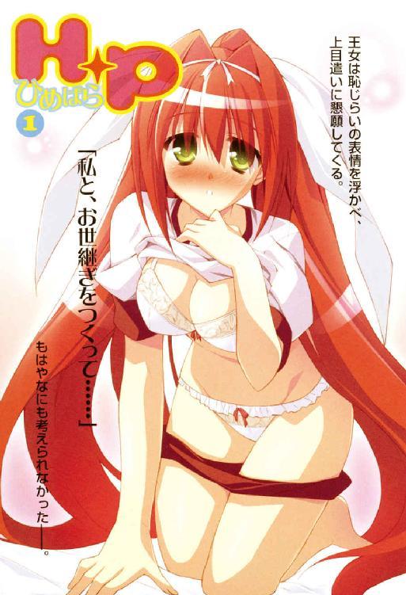
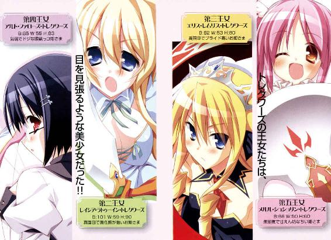
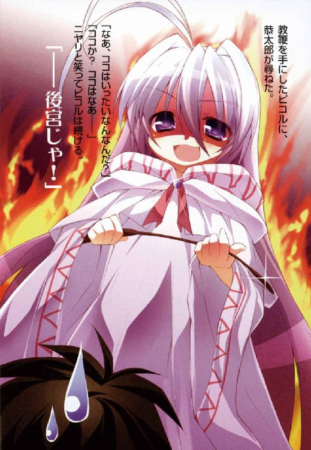
Ｈ＋Ｐ①
─ひめぱら─
風見周

富士見ファンタジア文庫
本作品の全部または一部を無断で複製、転載、配信、送信したり、ホームページ上に転載することを禁止します。また、本作品の内容を無断で改変、改ざん等を行うことも禁止します。
本作品購入時にご承諾いただいた規約により、有償・無償にかかわらず本作品を第三者に譲渡することはできません。
本作品を示すサムネイルなどのイメージ画像は、再ダウンロード時に予告なく変更される場合があります。
本作品は縦書きでレイアウトされています。
また、ご覧になるリーディングシステムにより、表示の差が認められることがあります。
口絵・本文イラスト／ひなた睦月
後宮──
それは、本来ならば国家の支配者の后となる女性たちが住むための場所だ。
しかし、トレクワーズ王国にある後宮は少しばかり趣が異なる。
魔術国家たるトレクワーズ王国を治めているのは、強大な魔力を持つ女王なのだ。
それゆえ後宮に入っているのは王国中から集められた少年なのである。
美貌、知性、教養、格闘技術、そしてなにより、魔力に優れた後宮の少年たち。
彼らは次代の女王となる権利を持つお姫さまたちのお相手をして、《お世継ぎ》をつくらなければならない。
そんな後宮に入れられた少年たちのことを──《王仕さま》と呼ぶ。
プロローグ
ドキドキ、ドキドキ、ドキドキ、ドキドキ、ドキドキ──......。
一秒ごとに緊張が高まっていく。
天蓋がついた巨大なベッドの上に正座している少年は、ゴクリと生唾を呑み込む。
緊張のために身体は強ばり、呼吸もうまくできない。
少年が硬くなってしまうのも無理はないだろう。
彼と向かい合って、ベッドにちょこんと座っている女の子。
一六歳である彼女はトレクワーズ王国のお姫さまであり、
なおかつ超がつくほどの美少女なのである。
小ぶりな顔立ち。透き通るように白い肌。意志の強そうな大きな瞳。ほどよく通った鼻筋。桜色の唇。一つに束ねられた腰まである長い艶髪──全てのパーツが完璧だ。
それに加えて、彼女はプロポーションも素晴らしかった。
形の良い豊かすぎる胸。くびれたウエスト。むっちりとした丸みを帯びるおしり。綺麗な長い脚──どんなグラビアアイドルだってスタイルの良さに嫉妬するだろう。
ただ一点、奇異な部分があるとすれば──
「ユフィナ、なんでそんな格好してるんだ......？」
トレクワーズの第一王女──ユフィナは、現代日本で言うところの体操服＆ブルマという格好をしていたのだ。彼女の巨乳によって大きく盛り上がっている胸元には、剣と盾を模した紋章と『ゆふぃな』と書かれたゼッケンがつけられている。
ここトレクワーズ王国は魔法が当たり前のように存在する世界だ。街角には魔法灯がともり、人を乗せて飛竜が飛び交う。彼女だって強力な攻撃魔法を使うことができる。
それなのに、どうして体育の授業に出るような服装をしてるんだ？
少女は王女にはふさわしくない、はすっぱな言葉遣いで答えた。
「これは近衛騎士団で教練するときの格好なのよ。参加するフリして抜け出してきたの。あんたの部屋に来ることを妹たちに知られたくなかったから......」
「ど、どうしてナイショにする必要があるんだよ？」
うすうすわかっていながら、少年は尋ねる。
王女さまが後宮にお忍びでやってくる理由なんて、一つしかないじゃないか。
答えの代わりに、ユフィナは膝立ちになって近づいてきた。
「......いい？ これだけはハッキリさせとくわよ？ 私は恭太郎のコトなんて嫌いなのっ！ でも、この後宮にはあんたしか《王仕さま》がいないから......」
緊張したようすで手を動かして、王女はウエストの辺りで体操服の裾を握り締める。
「トレクワーズを救うにはあんたに頼るしかないから......し、仕方なく、こんなコトをするんだからねっ！」
恥ずかしさを堪えているのだろう。小さく唇を噛んで、華奢な肩を震わせて。
ユフィナは自らの手でゆっくりと、白い布地をめくり上げはじめた。
可愛いおへそ、美しいラインを描くおなかが見えて、
やがて──ぽよよよんっ。
ダイナミックに揺れながら、レース地の下着に包まれた大きな胸が姿を現した。
しかも、めくり上げた体操服を巨乳の上に引っかけて留めたから、突き出た胸のカタチが余計に際だってしまう。
体操服の裾とブラが作る三角形に深すぎる胸の谷間が生まれて、少年はその深淵に吸い込まれそうな気分に陥った。
ユフィナは体操服をそのままに、手を下の方へおろし──ブルマに細い指を掛けた。
太ももを滑らせるように、紺色の分厚い布地をゆっくりとずらしていく。
リボンのついた可愛いぱんつが姿を見せ、少年の鼓動が跳ね上がった。
下着がちょうど全て見えた辺り、ユフィナは太ももの中程でブルマをずらす手を止める。
全てを脱ぐのは恥ずかしくて抵抗があるから、中途半端なところでやめたのだろう。
だが、半脱ぎの姿は余計に色っぽくて、少年は気が遠くなりそうだった。
羞恥心のあまりこちらを見られないのか、王女はぷいっとそっぽを向く。
瞳は涙に潤み、耳の先まで真っ赤。震える肩に合わせ、ポニーテールが微かに揺れる。
太ももの横辺りで両手をぎゅっと握り締めているのは──きっとすぐにでも手のひらでカラダを隠したいのを堪えているからだろう。
けれど、恥ずかしさを必死にガマンしながら、見事に発育した胸元や、魅惑のカーブを描くおなか、清楚な白い下着を少年の目に晒しているのだ。
「国民を救うために......。トレクワーズ王国を守るために......。命令するわ......」
王女はゆっくりと少年の方に顔を向けた。
恥じらいの表情を浮かべ、上目遣いに懇願してくる。
「私と、お世継ぎをつくって......」
少年は、もはやなにも考えられなかった。
引き寄せられるように、王女の豊かな胸にそっと手を伸ばす。
ぴくん、とユフィナは肩を震わせた。
「わ、私...その...ハジメテなの......。優しくしなきゃ許さないから...っ」
「......わかってる。俺だって経験ないから、うまくできるかわからないけど......」
「あ、あの......騎士団にもう経験済みだってコがいてね、ちょっとだけ話を聞いたの。最初は痛いかもだけど......男のひとに気持ちよくしてもらえば少しは平気かもって言ってて......。私だって、痛いのはイヤだから......その......」
熱に浮かされたような瞳で少年を見つめ、消え入りそうなほどの小声で囁いてくる。
「ユフィナを、いっぱい気持ちよくしてください......」
少年は王女の柔らかそうな胸に触れた。レース地の下着越しに優しくカーブをなぞる。
「............んっ」
王女ユフィナは、堪えきれなくなったように甘い吐息を漏らして──......
さて。
少年の名は──神来恭太郎。現代日本に生きる高校二年生だ。
彼がなぜ、このようなとんでもない境遇に陥ったのか。
それを理解するためには、少しばかり時間を遡らねばならない──
第一章 サムライ少年 meets 戦うお姫さま
目が覚めたら、森の中に転がっていた。
いや、正確に言うなら、森の中にある円形の広場のような場所か。
ストーンヘンジみたいな巨石群に囲まれている。
パジャマ代わりにしている作務衣越しに感じる硬い大地の感触。湿った土と草木の匂い。森を渡る冷たい風が前髪を揺らし、鳥の声が耳をくすぐる。日差しが眩しくて思わず手庇を作った。
念のため言っておくが、神来恭太郎はホームレス少年でも、野外で就寝するのが大好きなアウトドア野郎でもない。ついでに言うなら、生まれてこの方一六年、夢遊病を発症したこともなかった。
（どうして俺はこんなトコで寝てるんだ......？）
寝惚けた頭で考えてみる。
俺はいったいなにをしてた？
......そうだ。夏休みの初日だってのに朝から晩まで姉上に道場でシゴかれまくったんだっけ。んで、（これはもはや稽古じゃなくて、ドメスティックバイオレンスというヤツじゃないだろうか......？）と真剣に考え込みつつ行き倒れた旅人みたいにベッドに倒れ込み、あっという間に眠りに落ちて......。
それから、どうした......？
「本当に召喚に成功しちゃったわね。信じられない......」
ふいに女の子の声が聞こえてきた。恭太郎は慌てて朱塗りの木刀の柄を握る。眠るときも肌身離さず持っているのだ。
周囲に気を配りながら、身体を起こす。
目覚めた直後は気付かなかったけれど、彼を取り囲むように地面に星形と奇妙な文字が刻まれていた。
恭太郎はゲームやマンガにはあまり詳しくない。家が厳しかったため、そういったものは軒並み禁じられていたのだ。しかし、幼い頃に盗み見たアニメかなにかで見たことがある気がする。これは《魔法陣》とかいうシロモノじゃなかったか。
そして、星の頂点に陣取るように五つの人影が立っている。
全員が怪しげな白いローブを身に纏い、フードを目深に被っているから顔は見えないけれど、身体付きからして女の子だろう。
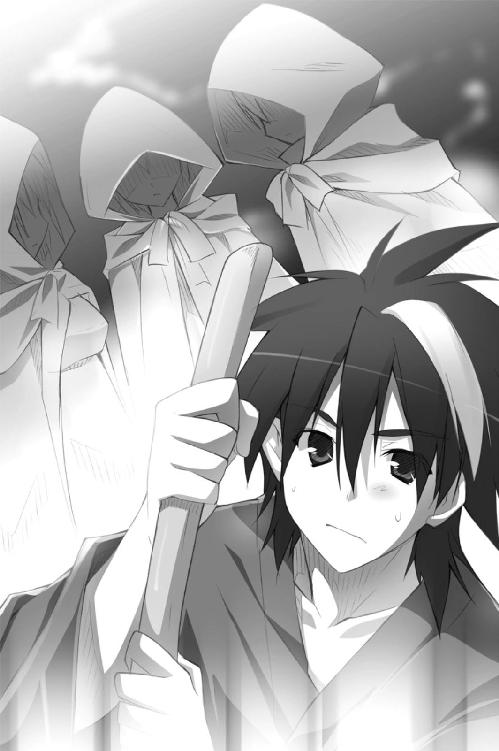
白い人影は、口々に喋り出す。
「あのおにいちゃんが《王仕さま》なのっ？ えへへ、楽しみー！」
「フン、冴えないヤツが現れましたわね。この私の相手が務まるのか心配ですわっ！」
「あ、あのっ......そんなことより早く王宮へ帰りましょう。この《霊点》は《大結界》の外側ですし......。召喚魔法を探知されれば、敵兵が押し寄せてくる可能性もありますから......」
「アルトの言うとおりです。すぐに王仕さまをお連れしてお城へ戻りましょう」
おーじさま？ あすとらるうぉーる？ しょーかんまほう？
なに言ってるんだ、このコたちは？
そして、同時に奇妙なことに気付く。彼女たちが使っているのは日本語ではなかったのだ。しかし、恭太郎には使い慣れた母国語のように意味が理解できたのである。
「ココはどこなんだ？ きみたちはいったい......？」
恭太郎が口にした問いかけは、暴力的な騒音に掻き消された。
ＧＹＡＯＯＯＯＯＯＯＯＯＯＯＯＯＯＯＯＯＯＯＯＯＯＯＯ!!
怪獣映画のワンシーンがカットインしたかのような咆吼が辺りに木霊したのだ。
白いローブの女の子たちが空を見上げて、口々に感想をもらす。
「追い払うわよっ。せっかく喚び出した王仕をまた奪われるわけにはいかない！」
「まったくしつこい連中ですわ。この私に敵うハズありませんのに」
「やっつけちゃおうよっ！ ゴーゴー！」
「メルル、無茶はダメですよ。こちらには無防備な王仕さまがいるんですからね」
「私があの方を結界内までお連れします！ お姉さまたちは攻撃を防いでください！」
小柄で華奢な人影が恭太郎の元に駆け寄ってきた。
目の前でローブのフードを外す。下から現れたのは、黒髪をショートカットにした大人しそうな雰囲気の美少女の顔だった。歳は中学生くらい。眼鏡がよく似合っている。
ちょっとテンパってるみたいに、口をあゎあゎさせつつ少女は頭を下げる。
「あ、あのっそのっ......私、アルトと申しますっ。ここは危険ですので、一緒に逃げていただけますでしょうか？」
「危険って、どういうことだ......？」
質問した直後に、《危険》の意味が恭太郎にもわかった。
「なんだ、アレは？」
ぬっ──と。森の上空に竜の顔のようなものが覗いたのだ。
しかも、一体ではない。空を覆うほどの数のドラゴンが出現したのである。
飛竜の背には鞍がつけられており、黒い鎧を身に纏った女性が乗っていた。
「王女たちには構うな！ 王仕だけを狙え！」
リーダーらしき女の鋭い号令と共に飛竜の一団が急降下してくる。
意を決したように、アルトと名乗った少女は恭太郎の手を掴んだ。
「お願いします！ 逃げてくださいませっ！」
わけもわからず、引っ張られるまま恭太郎は巨石の陰へと逃げ込む。
その先は木立が続いており、緩やかな坂になっていた。
恭太郎の手を引いて懸命に走りながら、アルトは木立の向こうを指さす。木々の切れ間から遠くを見渡せた。
「あれが《大結界》です！ あの中まで逃げれば安全です！ カルタギアの飛竜騎士団も領内には入ることができませんっ！」
なだらかな平原を乳白色のベールのようなものが覆っている。
「はぁはぁ......丘の下に我が国の近衛騎士団のみなさんが控えてくれてます！ そこまで逃げられれば、後は結界の内側まで連れてって......はぁ...はぁ......」
そこから先は言葉にならないみたいだった。運動が苦手なのか早くも息が上がってしまってるようだ。
と、背後から爆音が聞こえてきた。
（って、なにやってるんだ、俺は！ 女の子を置いて俺だけ逃げてちゃダメだろうが！）
振り返った恭太郎は「うおっ」と声を上げてしまう。
背中に兵士を乗せた飛竜が、巨大な前脚を振り回し暴れ狂っていたのだ。
巨石群がビスケットでも砕くように簡単に破壊されてしまう。もうもうたる土埃が立ちこめた。
（なんてバケモノだよ。さっきの女の子たちは無事なのか......？）
直後、凛とした声が響いてきた。
『【浮揚】!!』
少女たちの身体が土煙の中から飛び上がる。
「空を...飛んだ......!?」
空中で少女たちがローブを脱ぎ捨てたのを見て、恭太郎はさらに驚かされた。
遠目に見てもわかる。全員が目を見張るような美少女だったのだ。
ドレスに身を包んだ少女たちは、勢いよく手を横に伸ばした。
目映ゆい光が手のひらを包み込み──直後、巨大な武器が出現する。
「いくわよっ!!」
白いスカートを翻しながら空を駆け、飛竜に戦いを挑んでいく！
「この地は大結界の外とはいえ、神聖なるトレクワーズ王国の一部......。第二王女レイシア・トレクワーズの名において退けさせていただきます！」
おっとりした感じの髪の長い女の子が、身の丈の二倍はありそうな巨大な槍を掲げる。
レイシアは巨大槍を軽々と振り回し、敵に向けて突き出した──!!
「【女神落涙】!!」
ヴォン──槍の先端に複雑な模様の魔法陣が輝く。
直後、槍の先端から凄まじい流水が迸った。乗っている騎士ごと空飛ぶ竜を吹き飛ばす。
「おほほほっ、この私に楯突いたことを後悔させて差し上げますわッ！」
長い金髪を縦ロールにしている女の子が飛竜の群れを睨み付けた。彼女が手にしているのは、死神が持っているかのような巨大な鎌。
レイシアが声を飛ばす。
「殺めてはダメですよ、エリス」
縦ロール娘は仕方がなさそうに鼻を鳴らして、
「フン、わかってますわ。ちょこっと痛めつけてやるだけですのッ！」
エリスと呼ばれた少女目掛けて飛竜に乗った騎士が飛来してくる。
鋭い爪がエリスを切り裂こうと迫る!!
少女は怯むようすもなく、身体の前で巨大な鎌を軽々と回して、
「【死女神の舞曲】」
鎌の軌跡に沿って無数の魔法陣が展開──紫色に輝く衝撃波のようなものが放射状に発射され、飛竜のウロコを引き裂いていく。
「メルルもがんばっちゃうもんねっ！ おねえちゃんたちには負けないもんっ！」
メルルと名乗ったツインテールの小柄な女の子が元気な声で叫びつつ、ストーンヘンジみたいな巨石の上に着地した。
彼女の身体の三倍はあろうかという斧とカナヅチが一緒になったような超巨大な武器を軽々と振り上げて──ぶぅん!!
「メルルでどーんっ☆」
勢いよく振り下ろすと刃からいかずちが迸った。感電した飛竜騎士団が墜落していく。
「彼女たちは素晴らしく強いな......」
恭太郎は感嘆の吐息を漏らしてしまった。
大きな岩を軽々と壊す力を持つ飛竜の群れを女の子たちが易々と退けているのだ。
「お姉さまたちも妹のメルルも一騎当千の魔力を持っているって諸国でも有名なんですっ！ 特にユフィナ姉さまのお力は......」
恭太郎の手を引きながら、アルトが我がことのように自慢げに語っている。
少女の言葉を遠くに聞きながら恭太郎は思った──これは夢なんじゃないか？
だって、そうだろう？ 目が覚めたらいきなり知らない場所にいて。空飛ぶ竜に乗った女騎士が攻めてきて。可愛い女の子に手を引かれながら逃げ出して。ドレスに身を包んだ女の子たちが巨大武器を振り回し、凄まじい力で戦いはじめたのだ。
現実とは思えないシーンの連続だ。
しかし──同時に思う。これは夢なんかじゃない。
夢にしてはリアルすぎる。素足に感じる大地の感触も。踏みつける小枝の痛みも、繋いだ少女の手の柔らかさも。全てが真実味をもって感じられるのだ。
（俺はとんでもない世界に来てしまったんじゃないのか......？）
ＧＹＡＯＯＯＯＯＯＯＯＯＯＯＯＯＯＯＯＯＯＯＯＯＯＯＯＯ!!
「きゃああああああああっっ!!!」
アルトの悲鳴で我に返った。
鋭い爪を持つ飛竜が目前に迫っていたのだ。巨体で道をふさいでいる。
竜の手綱を握る黒い鎧の女が、両刃の剣を振り上げて、
「新たな王仕だな......!? 私はカルタギアの飛竜騎士団団長、グリアネラ！ 貴様の命もらい受けるッ!!」
「こっちだっ！」
アルトの手を逆に引っ張り、恭太郎は木立の中へと飛び込んだ。
相手は巨大な竜を操っている。狭い木々の間に飛び込んで攻撃をかわそうと考えたのだ。
文字通り間一髪。敵の刃が恭太郎の髪を掠めて空を切る。
案の定、木立が邪魔でそれ以上の追撃はできないようだった。
「小癪な！ 逃がすかッ！」
グリアネラは木をなぎ倒し無理矢理に飛竜を突っ込ませてくる。
「くそっ、冗談だろ!?」
生温かい竜の鼻息を背中に感じて寒気が走った。
「きゃあっ!!」
と、アルトが木の根につまずいて転んでしまう。
「大丈夫か!?」
「はわわわわっ......へ、平気です！ 私を置いてお逃げください！ 時間を稼ぎますぅ！」
アルトは尻餅をついたような格好で、迫り来る竜に向けて手を伸ばした。
「え......【えんじぇる・ふぃーと】！」
彼女の声に合わせて空中に小さな弓矢が現れた。
放たれた矢が飛竜の鼻先に突き刺さり、ほんの一瞬だけ竜は勢いを止めた。
「今です！ 王仕さま、逃げてくださいっ！」
アルトが恭太郎を見つめ、懇願するように叫んだ。
「やってくれたな第四王女！ まずはおまえを血祭りにしてくれるッ！」
グリアネラが大剣を振り下ろし、アルトを叩き斬ろうとした！
悲鳴を上げて目を閉じる少女。
刃が彼女の額を叩き割る──その直前。
「神来流剣術・一の太刀──鬼哭!!」
辺りに響く、甲高い音。朱塗りの木刀が大剣を受け止めていた。
恭太郎が少女の前に立ちはだかったのだ。
「王仕さま......？」
「......違う。《おーじさま》なんて名前じゃない。俺は神来恭太郎だ。それから、もう一つ間違ってるぞ──フンッ！」
鍔迫り合いの要領で大剣を押し返しながら、恭太郎は言い放った。
「俺は女の子を一人置いて逃げ出すような、卑怯な男ではない」
「卑怯ではないようだ。しかし......」
グリアネラはニヤリと嗤った。
「愚かな男だな。やれ、ワイバーン!!」
飛竜が太い前脚を振り回した。鋭い爪が迫る！
「うおおおおっ!?」
恭太郎は後ろに飛び退いた。爪の一撃を受けて太い幹が深く抉れる。
（コレを食らったら命に関わる......。俺も多少は剣術に自信があるけど......女の子を守りながらじゃ勝ち目はない！）
飛竜は木の幹に爪を食い込ませてしまい動きが止まっていた。間隙をついてへたり込んでいるアルトに駆け寄る。
「アルトちゃん......だったよね。走れるか？」
「足をくじいてしまったみたいです。私は置いていってくださ......」
有無を言わさず、恭太郎はアルトを横抱きにした。
「恭太郎、さま......？」
少女を安心させるために、恭太郎は笑いかけた。
「行くぞ!! しっかりつかまってるんだ!!」
木立の中を駆け出す。
状況はまったくわからない。意味不明の大ピンチだ。
だが、これだけはわかる。アルトって娘は俺を助けようとしてくれた。ならば俺も、この娘を見捨てるワケにはいかない。嫁入り前の女の子を抱きしめるようなマネをしてるけれど......これは緊急避難というヤツだ。
「............は、はいっ」
頬を染めて恭太郎を見上げていた少女は、ギュッとしがみついてきた。
飛竜が木々をなぎ倒しながら迫ってきている。
恭太郎は木の根を飛び越え、枝を払い、岩を踏み越えて、坂道を駆け下る。
丘を下れば仲間がいると言ってた。このペースなら追いつかれずに逃げ切れる！
そう確信した、刹那──騎士団長グリアネラの微かな嗤い声が聞こえた気がした。
「【雷撃】」
恭太郎の背後で光が弾け、全身に引きつるような痛みが走る。
「......ぐっ!?」「きゃあああっ!!」
アルトもろとも、もんどり打って転んでしまった。彼女が傷つかないように庇ってやるのが精一杯。恭太郎は太い木の幹に全身を打ち付けてしまう。
木の根元に背をつけたままグリアネラを睨んだ。
黒い籠手の装着された手の周囲に──パリパリッ──わずかな青白い放電が見えた。
「卑怯だぞ。そんなワケわかんない力を使いやがって！」
逃げ出そうとした自分を棚にあげて、ついつい非難してしまう。剣術の真剣勝負でいきなり銃を撃たれたような気分だったのだ。
「そうか、貴様はたった今、召喚されたばかりだったな。どんな場所から喚び出されたかはわからんが......さては《魔法》を見たことがないのだろう」
飛竜の背からグリアネラは飛び降りた。大剣を手に近づいてくる。
「死にゆく貴様に、最後に一つだけ教えてやる。どんなに強い魔力を持つ王仕であろうと......どんなに懸命に抗おうと、貴様が男である限り女には勝てない」
「......？」
「ここウィッチェリアは女しか魔法を使うことができないのだ」
グリアネラは大剣を振りかざして、
「......自らの無力さを噛みしめて死ねッ!!」
恭太郎目掛けて振り下ろした──!!
固く目を閉じ、アルトを庇うように抱きしめる。
しかし──いつまで経っても痛みは襲ってこなかった。
「アルト、遅くなってごめんね。ちょっと手こずっちゃったわ」
代わりに力強い元気な声が聞こえてくる。
ゆっくりとまぶたを開く。
純白のドレスに身を包んだ少女が立っていた。
腕には白銀に輝く巨大な手甲。炎に包まれた巨大な剣を握り締め、騎士の放った攻撃を受け止めている。
大きなリボンで結わえられたポニーテールが、美しくなびいていた。
「私が来たから、もう安心よ」
敵と刃を合わせたまま、少女は恭太郎に凛々しい笑みを向けてくる。
思わず、見惚れた。
今は戦闘中だ。しかも、女の子をマジマジと見つめるなんて失礼にもほどがある──恭太郎の理性がそう叫んでいたのにも拘らず、瞳を逸らすことができなかった。
それほどまでに、目の前に現れた少女は美しかったのだ。
「おまえは......《烈火の王女》、ユフィナ!!」
黒鎧の騎士が呆然と口を開いた。顔は蒼白となっている。
「や......やれ、ワイバーン！ ユフィナを殺せッ！」
騎士の呼びかけに応じ、飛竜がユフィナと呼ばれた少女に飛びかかった。
少女は素早くバックステップして避ける。
わずかに攻撃が掠め、ドレスが引き裂かれてしまった。
しかし、動じるようすもなく、炎に包まれた大剣を上段に構えて、
「カルタギアの援軍が来る前に、一気にカタをつけさせてもらうわよ！」
凄まじい速度で間合いを詰める！
「ハァ──ッ!!!」
裂帛の気合いと共に、巨大な剣を振るった。
「【火竜演舞】」
凄まじい勢いで空中に魔法陣が描かれた。
同時に爆炎が刀身から迸り、黒鎧の騎士は飛竜もろとも吹っ飛ばされる。
「ふぅ、カルタギアの飛竜騎士団もたいしたことないわね」
一撃で敵を戦闘不能にした少女は剣を消して、恭太郎の方に向き直った。
「二人とも大丈夫？ とりあえず、ひどい怪我はないみたいだけど......」
「ああ、なんとか平気だよ。アルトちゃんも気絶してるだけのようだ」
アルトをその場に横たえ恭太郎が立ち上がったとき──それに気付いた。
ユフィナのドレスは引き裂かれ、今にも豊かすぎる胸が見えてしまいそうだったのだ。布地の残骸が辛うじて大事な部分を隠しているだけで、胸の丸みはほとんどあらわになってしまっている。
鼻の奥で熱いものが弾けて──ぷばっ!!
「ちょっと！ 鼻血出てるじゃない！ やっぱり怪我してるんじゃないの!?」
ユフィナが駆け寄ってきた。恭太郎の顔を心配げにのぞき込んでくる。
（って、ダメだっ！ そんなポーズをとったら胸が見えちゃうだろ!?）
「見せてみなさいよ ほら、隠さないで！」
「む......むしろ、きみが隠してくれ!! 見えちゃうだろっ!!」
「見えちゃう......？」
キョトンとしつつ、恭太郎の視線を追うように自分の身体を見下ろして、
「きゃあああああああああっ!!」
あられもない格好になっているのに気付いた少女は、思い切り恭太郎を突き飛ばした。
「うををををををっ!?」
足下の悪い山道で倒れそうになった彼が、とっさに手近にあったものを握り締めてしまったのは無理からぬことであったろう。
恭太郎が掴んだもの──それはボロボロになったユフィナのドレスだった。
「ちょっ、ちょっと！ 引っ張らないで......きゃああああっ!?」
少女を巻き込んで、もつれるように坂道をゴロゴロ転がってしまう。
たっぷり一〇メートルほど抱き合ったまま転がりまくって、ようやく止まった。
「うう～～～～～～～ん......」
クラクラする頭を押さえながら辺りを見回そうとして、恭太郎は気付いた。
地面が柔らかい落ち葉だったため怪我をしないで済んだのだが──
目を回して「うきゅ～」と呻くユフィナと抱き合うような状態で、彼は彼女にのし掛かっていたのだ。すぐ間近に少女の可愛い顔がある。
「す、すまないっ......すぐにどくから！」
慌てて地面に手を突こうとして──もにゅにゅん。
とんでもなく柔らかいものに指が埋まる。
間の悪いことに、彼は少女の胸元に手を突いてしまった。
恭太郎が引っ張ったせいでドレスはさらに破れ、豊かな胸がほとんどあらわになっている。つまり彼が触ってしまったのは、いわゆるナマチチ。
慌てふためく少年の眼前で──
まるで王子様のキスで目覚めるプリンセスのように、少女が目を開いた。
数瞬後、ユフィナは自らの状況に気付いたようだ。
客観的に見ると──二人は次のような状態にある。
ドレスが破れ半裸となった女の子に少年は思い切りのし掛かっており、その手は少女の胸を揉みしだいているのだ。
明らかに、暴漢の所行だった。
「な、ななななっ、なにしてんのよっ!! どきなさいよ──っっ!!」
「ぐぼあっ!?」
恭太郎は思いっきり突き飛ばされた。
凄まじい力で吹っ飛ばされ、木の幹に背中を強かにぶつけてしまう。
立ち上がったユフィナは片腕で胸元を隠しながら、涙目で睨み付けてきた。
「ドサクサに紛れてなんてことするのよっ！」
「違う！ 俺はそんなこと......って、どうして剣を構えてるんだ!? 話し合おう！ 話せばわかるはずだ！」
ゴゴゴゴゴゴゴゴゴゴゴゴゴゴ......。
巨大な剣が炎に包まれていく。
それと呼応するように、一つに束ねられた彼女の髪が生き物のように蠢いた。
「私はね......あんたみたいなスケベなヤツが一番嫌いなのよっ！」
ユフィナは燃えさかる炎の剣を振りかざして──
「あんたなんて、絶対に王仕さまと認めないからぁっ！」
「ちょっと待てっ！ それで殴られたらさすがに死ぬだろ!?」
「問答無用よ──っっっっ!!!!」
「うをゎああああああああああっっ!?!?!?」
──ドゴぁっ!!!
×××
「よいか？ くれぐれも粗相があってはならんぞ？ もし無礼なことをしたら死刑にされても文句は言えないのじゃからなっ！」
高さにして四メートルはあろうかという巨大な扉の前で、白いローブに身を包んだ小さな女の子が偉そうな口調で念を押した。
彼女はピコルって名前らしい。かかとまであるふんわりとした長い銀髪。ぷっくりしたピンク色のほっぺ。細っこい手足。凹凸の少ないペタンコな身体。背の高さは恭太郎の腰までしかない。せいぜい一〇歳くらいにしか見えなかった。
しかし、ピコル曰く「吾は恭太郎の教育係じゃ！ 師匠と呼ぶのじゃ！」だそうで。
ユフィナにぶん殴られて気絶していた恭太郎を叩き起こすや、上から目線の命令口調で汚れてしまった作務衣から妙にヒラヒラしたシャツとビロードのズボンに着替えさせ、この装飾過多な扉の前まで連れてきたというわけである。
白大理石で造られた豪奢な建物に驚き、博物館にあるような調度品に驚愕し、美人揃いの女官に愕然とし。魔法陣で喚び出されて以来驚きっぱなしの恭太郎は問い返す気力も無くして、ただただピコルに従うことしかできなかった。
唯一、彼が意見したのは、木刀についてだけだ。武器の類は置いていけと言われたのだが、恭太郎は断固拒否したのである。彼の持つ朱塗りの木刀は、神来家に代々伝わる由緒正しいものであり、恭太郎が命の次ぐらいに大事にしているものなのだ。
結局、刀剣ではないことから危険性は低いだろうと判断され、繻子の袋に入れることを条件に木刀の所持は許された。
巨大な扉の前で、師匠はちょっぴり緊張したように咳払いをして、
「では、これよりトレクワーズ王国第四七代女王エルトリーゼ陛下に謁見するのじゃ！」
軋みもなく扉が開いていく。目映ゆい光が漏れてきて──恭太郎は息を呑んだ。
向こう側には、あまりにも荘厳な光景が広がっていたのである。
学校の体育館みたいに広い空間が、一点の曇りもない鏡のような白大理石の床で埋め尽くされていた。果てが見えないほどに高い天井にはクリスタルの塊が浮かんでおり、目映ゆい光を放っている。
「なにを惚けておる。口を閉じろ。御前じゃぞっ」
ピコル師匠に小声で叱られて、ようやく我に返った。
幼女に導かれるまま、赤い絨毯を歩いていく。赤絨毯の伸びる先はステージのように高くなっており──その先に、奇妙なものが置かれているのに気付いた。
そこに据えられていたのは玉座ではなく、大きなベッドだったのだ。天蓋からベールのようなものが垂れ下がっており中は見えない。
階段の下でピコルが膝を折った。恭太郎は厳かな雰囲気に気圧されて突っ立っていたけれど、「頭が高いぞっ」と師匠に小声で怒られて見よう見まねで同じポーズを取る。
「エルトリーゼさま、ピコルにございます。新たな《王仕》をお連れ致しました。姫さまがたが見事、召喚に成功なさったのです」
ベールの向こう側でなにかが動く気配がした。凛とした声が広間に響く。
「そなたが女神によって選ばれた王仕ですか」
ベッドにいる女王が喋ったんだろう。威厳みたいなものを感じ、恭太郎は背中が強ばる気がした。
「名はなんと申すのですか？」
「きょ...恭太郎です。神来恭太郎」
「きょうたろう、ですか......」
たっぷりと長い沈黙の後、女王は続ける。
「よいですか、恭太郎。我が国は危機に瀕しております。強大な敵国、カルタギア帝国の攻撃を受けているのです。国全体を覆う《大結界》により侵攻を防いでいますが......それを破られれば、軍隊を持たぬ我が王国は一溜まりもないでしょう。愛する国民たちの平穏な生活が侵されてしまうのです」
「はあ......」
「我が国を危機から救うために、恭太郎を喚び出しました」
女王の言葉に、なるほどと頷く。
脳裏に幼い頃に家人に隠れてプレイしたＲＰＧのワンシーンが想い出された。古いゲームの冒頭は、だいたいこんな感じで始まってたような気がする。
力を持った勇者が王様に喚び出され、魔王退治を命じられるのだ。
「つまり俺に、そのなんとか帝国と戦えっていうんですね」
恭太郎は《神来流》という剣術を伝承する家に生まれた。幼い頃から剣の技を叩き込まれている。一般的な高校二年生と比べたら戦闘能力は高いだろう。
玉座代わりのベッドを見上げ、力強く言い切る。
「わかりました。俺の剣が通用するかどうかわからないが......全力で戦いますよ」
ここがどんな世界なのか。敵国というのがどのような存在なのか。
なに一つわからないのに、恭太郎は協力することを決意していた。
苦しんでいる人たちがいて、助けを求められたのなら。
そして、自分に困っている人たちを救う力があるというのなら。
多少の危険があろうとも助けるべきだ──彼はそう信じている。
恭太郎はそういう男なのだ。
しかし、返ってきたのは感謝の言葉ではなく、微かな笑い声だった。
「女神に選ばれたそなたは高い《魔力》を有しています。女王たる私には、それがわかる。輝くばかりの力が恭太郎の身体から溢れています」
「俺が高い《魔力》を持ってる......？」
（そんなファンタジーっぽい謎用語を普通に使われても困るっていうか......）
確かに女の子たちが奇妙な力を使うのを見た。突然連れてこられたこの世界は《魔法》ってヤツが平然と存在する場所のようだ。でも、唐突に《おまえには魔力がある》と言われても今ひとつピンと来ない。
困惑する恭太郎を気遣ったように、少しだけ女王の口調が柔らかくなった。
「《魔力》とは潜在的に持つ《魔法》の才能のこと。恭太郎は凄まじい魔法を使うことができるでしょう。......もしもそなたが女であったならば」
同じことを竜に乗った女騎士も口にしていた。『女しか魔法が使えない』って。
（つまり、どういうことだ？ ゲームで言うなら、俺は《魔力の数値は高いけどＭＰはゼロ》ってコトなのか......？）
「男であるがゆえに魔法が使えないそなたは、精強なカルタギア帝国の軍隊と戦うことなどできません。一矢たりとも報いることはできぬでしょう」
「じゃあ俺はなんのためにココに連れてこられたんだ......？」
疑問が思わず口をついて出る。
「これ、恭太郎ッ。女王さまになんという口の利き方をしておるのじゃ！」
「構いません。王仕には我が国の命運が掛かっているのです。そのために無理矢理に召喚してしまいました。彼はこの国の人間ではない......少しぐらいの無礼は許しましょう」
ベールの向こう側でわずかな音がした。女王が居住まいを正し恭太郎の方に向き直っているのだと、なんとなくわかった。凛とした緊張感がさらに高まったのだ。
「恭太郎。そなたを召喚したのは外でもありません。すでに顔を合わせたかと思いますが私には五人の娘がいます」
続けて発せられた女王の言葉は驚くべきものだった。
「五人の王女たちとの間に《お世継ぎ》をつくりなさい」
「およ、つぎ......？」
世継ぎってコトは......つまり、子どもをつくれってことだよな？
「《魔力》の高い王仕と婚げば、強い魔力を持つ世継ぎが生まれます。トレクワーズ王国は、そのようにして栄えてきたのです。頼みましたよ、恭太郎......ケホケホ......」
──って、ちょっと待ってくれよ！ 俺にどうしろっていうんだ!?
そう口にする前に女王が咳き込みはじめ、謁見は終わりとなってしまった──
×××
「おい、お世継ぎをつくれってどういうことだよ!? 俺はいったいなんのために」
「まあ、待て。慌てずとも、ちゃんと説明してやるのじゃ。黙って吾についてこいっ」
必死に問い掛ける恭太郎を軽くいなし、ピコルは王宮の回廊をさっさと歩いていってしまう。幼い少女に偉そうにされるのは癪だったけれど、他に頼れる人もいないのだ。
「くそっ......」小さく吐き捨てながら、仕方なく後をついていくことにする。
白大理石張りの回廊を奥へ奥へと進んでいくピコル。彼女の後ろを歩きながら、恭太郎は感嘆の声を漏らし続けることとなった。
柱の一つ一つに精緻な彫刻が施されていたり、天井に鎧を纏った女性の絵が描かれていたり──トレクワーズ王城は目を見張るばかりの豪華さだったのだ。
中世ヨーロッパのお城を図鑑か何かで見たことがあるが、随分と薄暗く不気味な雰囲気だったと記憶している。回廊は敵の侵入を拒むために入り組んでおり、壁には攻撃用の銃眼が開けられていたりしたのだ。
それらと比べると、この城は敵に対する防備を全くしていないように思えた。
《大結界》とやらで敵軍を防いでいると言っていたから、そもそも攻め込まれることを想定していないのかもしれない。
回廊の一番奥にあるアーチ形の出入り口から中庭へと出て、さらに渡り廊下を進む。
中庭は見事に手入れをされていた。芝はきれいに刈りこまれ、庭木は動物の形に剪定されている。屋根のついた渡り廊下の脇には青いローブを纏った男の彫像が立っていた。傍目にもカッコイイとわかる男性だ。台座には見たことのない文字が刻まれていたけれど、恭太郎はそれを読むことができた。
「《ガイルーン》？ この男の名前なのか......？」
恭太郎の呟きはピコルには届かなかったようだ。
「これから恭太郎は、ココに住むことになるのじゃ」
師匠が指さした建物を見上げ、恭太郎は言葉を失った。
目の前にそびえていたのは王城に勝るとも劣らない大きさの巨大建造物だったのだ。恭太郎の通っている高校の校舎よりも間違いなく大きいだろう。
「これだけデカイと、かなりの人数が暮らせそうだな......」
白いローブの裾を引きずりながら先導をするピコル師匠が恭太郎を振り返り、
「ココに住むことになるのは、基本的に恭太郎一人だけじゃ」
「......たった一人？ こんなに大きいのに？」
「その辺も含めて説明してやる。さあ、入るのじゃ」
衛兵に扉を開けさせ、建物の中に入るピコル。内部は城内と同じように、白大理石張りだった。王宮を含め、どこもかしこも《白》ばかりで目が痛くなりそうだ。ひょっとしたら、ホワイトがこの国のイメージカラーなのかもしれない。
長い廊下を抜けた先、《教官室》と書かれた部屋が目的地のようだった。
「ぬおわっ!?」
ピコルに続いて教官室へ入るや、恭太郎は声を上げてしまう。
壁中にいろいろなポーズで合体している男女の絵が掛けられていたのだ。後ろには巨大な本棚があるのだが、中に入っているのは《性の秘術》だの《房中全図》だの《ラブテクニック図鑑》だの、怪しげなものばかり。なんなんだよ、ココはっ!?
「そちらへ座るのじゃ」
師匠は一番前の机を指さす。仕方なく座ったが、居心地が悪いことこの上ない。
教鞭を手にしたピコルは、コホンと咳払いをして、
「改めて自己紹介をしよう。恭太郎の教育係を務めるピコルじゃ。ココでの生活で困ったことがあれば、なんでも吾に相談するがいいのじゃ」
「なあ、ココはいったいなんなんだ？」
「ココか？ ココはなあ──」
ピコルはニヤリと笑って続ける。
「──後宮じゃ！」
「こ......後宮？ 後宮って言うと王様が何人もの奥さんたちをはべらして、その......そーゆーことをする施設のコトか？」
別のいい方をするなら《ハーレム》。日本の江戸時代で言ったら《大奥》。
「おお、知っておるなら話は早い。王女たちが適齢期になると、後宮に国中から魔力を持つ王仕たちが集められる。その中から、王女たちは気に入った相手を見つけて婚ぐというワケじゃな」
この国の《後宮》は、恭太郎の持つイメージとは男女が逆なようだ。王女さまたちが多くの男たちから好きな相手を選ぶってことらしい。
「女王さまも言ってたが《婚ぐ》ってどういう意味なんだ？」
「平たく言えば《えっちする》という意味じゃな」
「へ、平然と言うなよ、そんなこと！」
「『え......えっちするって意味だよぅ。恥ずかしいコト言わせないでよね、やんやん』なぁんて照れながら言えばよいのか？ 恭太郎はマニアックじゃのう。こいつめ」
「こ、こいつめじゃねえよ！ ヘンなコト言うな！」
そのとき、恭太郎は気付いた。
「って、待てよ......？ 俺はこれからココで暮らすことになるって言ってたよな......？」
「そうじゃ」
「それって、つまり......俺は後宮に入れられるってことか!?」
「うむ。その通りじゃ。後宮に入れられる男子のことを《王仕さま》と呼ぶのじゃ！」
ズビシ！ ──ピコルは教鞭で恭太郎を指して、
「恭太郎！ おまえは王仕さまとして姫さまと婚ぎ、立派なお世継ぎをつくるのじゃ！ そのためだけに、恭太郎は召喚されたのじゃからなっ！」
「じょ、冗談じゃない！ お断りだ！」
「残念だが、恭太郎に拒否権はない。我らもせっぱ詰まっておるのじゃ！」
なぜわざわざ異世界の人間である恭太郎を呼び出さなければならなかったのか──？
その理由をピコル師匠は教えてくれた。
「女王陛下であらせられるエルトリーゼさまはご病気なのじゃ。全身が徐々にガラスになってしまう奇病での......。治癒魔法で延命処置を施しておるが、典医の診察では余命はもって数年とのこと......」
ピコル師匠は心配げに眉を顰めて続ける。
「我が国は軍隊を持たん。女王が持つ強大な魔力によって《大結界》を作り、敵国の侵入を防いでおるのじゃ。女王が健在であることがトレクワーズの平和には不可欠なのじゃよ。だから、五人の姫さまの誰かに王座を譲るため、急遽後宮を用意することとなった」
「なるほど。女王が生きているうちに娘に新しい女王になってもらって、結界とやらを維持しようってことだな。......ん？ 王位を譲るために後宮を用意するってのはどういう意味だ？ さっさと王座を明け渡せばいいだろ。そんなもの女王のさじ加減一つじゃないか」
「うむ。よく気付いたの。トレクワーズ王国は王位継承の条件として《お世継ぎ》を産んでいること──母親であることが必要とされておるのじゃよ。さもなくば我が国を守護しておる慈母の女神ティアドラさまの《審判》を受けられんのじゃ。......まあ、理屈はわからんじゃろうが、そういうものじゃと思っておけ」
ピコル師匠は黒板にチョークで《新しい後宮》と書き、丸で囲んだ。
それに向けて矢印を引っ張り《二〇〇〇》と数字を書き込む。
「そんなこんなで、大急ぎで国中から優れた魔力を持つ少年たちがかき集められた。その数は二〇〇〇人じゃ」
「二〇〇〇!? そんなに!?」
「さして多くはないぞ。トレクワーズ五〇〇万の民の中から二〇〇〇人じゃからな。強い魔力を持つ適齢期の男子というのは、このくらいの数しかおらんのじゃ」
そこで、ピコルは《二〇〇〇》の数字の上に大きな×印を書いた。
「ところが、じゃ。国中から王仕候補となる少年を集めたところで事件が起きた。我が国を征服しようと企むカルタギア帝国によって、王仕たちが全員誘拐されてしまったのじゃ！」
「全員が!? 敵国だかなんだか知らないが、なんでそんな面倒なことをするんだよ」
「決まってるじゃろ。世継ぎがつくれなければ姫たちは王位を継承できん。もし今、女王が崩御なさったら......」
「......国を守る結界が無くなるってワケか」
「うむ。カルタギア帝国は我が国を攻め放題となるのじゃ。男は魔法を使えん。女王や姫たちを狙うよりも王仕を狙う方がずっと簡単と踏んでのことじゃろう。......まったく、せめて後宮が一晩でもいいから機能した後ならばよかったものを......。王仕たちがなにもせんうちにさらわれるとは!!」
「全員殺されたのか......？」
「今のところ生死は不明じゃ。殺されておる可能性もあるが、強い魔力を持つ男子というのは貴重なのじゃ。敵国の後宮に入れられておるやもしれん......」
悔しげに歯噛みした師匠は、真剣な眼差しで恭太郎を見つめた。
「そこで恭太郎を召喚することとなったんじゃよ！」
「新しい王仕として俺を後宮に入れるため......ってことか」
「その通りじゃ！ 女神ティアドラさまのお力により、《お世継ぎ》をつくるのに最も適した男子が選ばれた！ すなわち、それが恭太郎なのじゃ！」
ピコルは黒板に《恭太郎》と書いた。後宮に向けて矢印を引っ張る。
「って、ちょっと待てよ！ 今までの話を総合すると......この後宮にいる王仕ってのは、俺だけなのか!?」
「強力な召喚魔法を使うには姫さま全員のお力に加えて、《霊点》のパワーを借りねばならんのじゃ」
その単語は聞いたな。俺が喚び出された場所のことを《霊点》と呼んでいた気がする。
......って、あれ？ 確か、ストーンサークルは空飛ぶ竜に壊されてたぞ？
尋ねてみると、ピコルは残念そうに頷いた。
「ああ。《霊点》は敵国によって破壊されてしまったのじゃ。もはや新たな王仕は召喚できん。恭太郎一人で五人の姫をお相手するのじゃっ！」
「お相手って、つまり......」
「左様。五人全員とえっちをしまくるということじゃな。《トレクワーズの五美姫》と言えば美少女揃いで有名じゃ！ うれしいじゃろう？ このこの～」
「うれしくねえよ！ 俺にはそんなことできない！ 元の世界に帰してくれ！」
「それは無理じゃ」
「キッパリ言い切った!?」
「すぐには元の世界に戻ることはできん。恭太郎には、ここの生活に順応してもらう」
「俺にだって家族や友達がいるんだよ！ 突然いなくなったら心配するだろ!?」
「その点については心配ない。女神のお力によって、元の世界は《恭太郎が存在しなかった世界》に変わっておる。おまえ抜きで平和に暮らしておるはずじゃ。安心せい」
「なるほど、それなら安心だな、あはははは...って安心できるか！ もう二度と元の世界に戻れないのかよ!?」
「言ったろう？ すぐには元の世界に戻ることはできんのじゃ」
「じゃあ、方法はあるんだな」
「女王が健在であれば、おまえを元の世界に帰すことも可能だろう」
「でも、女王は病気なんじゃ......？」
「現女王であらせられるエルトリーゼさまには、おまえを元の世界に戻すことはできんじゃろうな。どうしても元の世界に帰りたいなら──次の女王に頼むことじゃ」
「ひでえ......!!」
お姫さまが次の女王として即位するためには《お世継ぎ》が必須と言っていた。
《お世継ぎ》をつくるための相手となる王仕さまは恭太郎しかいない。
つまり──元の世界に戻りたかったら《お世継ぎ》をつくれと命令しているのだ。
「悪いが、おまえの意思には関係なく協力してもらうぞ。恭太郎は我が国にとっては、唯一の希望なのじゃからな。手放すわけにはいかぬ。もしも、どうしてもイヤと言うなら......死刑にするのじゃ!!」
「死刑だって!?」
「当然じゃろ。強い《魔力》を持つ王仕が流出すれば、敵国を強くする可能性もあるのじゃ。そうなるくらいなら亡き者にした方がマシじゃ！」
ピコルは幼い顔に似合わない、悪そうな笑みを浮かべて続ける。
「抗おうなどとは思わぬことじゃ。どんなに腕に覚えがあろうとも、恭太郎が男である限り女には勝てぬからの。魔法で一撃じゃ！ 吾にすら勝てぬわ！」
「ひ、ひどすぎる!!」
「うむ。快く承諾してくれたことうれしく思うぞ！」
「これっぽっちも承諾してないだろぉぉぉぉぉっっっ!!」
「案ずることはないのじゃ。最初は戸惑うかもしれぬが、すぐに順応できるはずじゃ。男女がまぐわうのは自然の摂理じゃからの。それに、吾が《房中術》を教えてやる」
「ぼーちゅーじゅつ？ なんだ、それは」
「知らんのか？ 無知なヤツめ。房中術とは、簡単に言えば《正しいえっちの仕方》じゃな。見たところ恭太郎は童貞じゃろ？ このピコルがいろいろ教えてやるのじゃ！」
「た、確かに未経験だが......見た目で判断するな失礼だろっ！ って、そうじゃなくて！ きみはせいぜい一〇歳くらいだろ!? そんなコト教えられるワケ──ぐおっ!?」
ピコル師匠は教鞭で恭太郎の頭をひっぱたいた。
「愚か者め。若く見えるかもしれぬが、吾はこのトレクワーズ王国の黎明期より王宮に仕えておるのじゃ。おまえなんぞよりず～～～～～っと長い時を生きておる。生意気なクチを利くでないわっ！ 吾と喋るときはこれからは敬語を使うのじゃっ！」
って、ちょっと待てよ！ さっき謁見した女王さまが四〇何代目とか言ってたよな!? 黎明期から王宮に仕えてるって、ピコル師匠、あんたいったい何歳だ!?
「では、さっそくいいことを教えてやろう！」
驚きまくる恭太郎を軽やかにスルーして、ピコルは教鞭をビュンと振り回す。
「それいけ第一回！ ピコル師匠プレゼンツ☆ハーレム講座！ 題して《ピコルの穴》！」
なにをはじめるつもりなのか、「わーわードンドンパヒパヒー♪」なんて盛り上げつつ拍手をする師匠。
「《ピコルの穴》では、たびたびおまえにイイコトを教えてやるからな！ 楽しみにしておくのじゃ！」
「急にテンションあがったな......。少しは空気を読んで欲しいんだが......」
「ではでは、後宮生活をはじめる恭太郎のために、まずは重要な王仕の心得を教えてやるのじゃ！ 耳の穴をかっぽじってよく聞くのじゃー！」
ひとしきり盛り上がったあとで、おもむろに黒板に文字を記していく。
～知っとけ☆王仕さまの心得～
一、お姫さまには絶対服従！
一、後宮からの脱走は死刑
一、敵を見かけたら逃走せよ！
ピコルは教鞭で一行目を指し示して、
「王仕さまなどと尊称がついておる点からもわかるとおり、王仕は平民より地位が高いのじゃ。姫さまたちもそれなりの敬意をもっておまえに接してくださるじゃろう。だが、当然ながら姫さまの方がえらいのじゃ！ 絶対に逆らってはならぬぞ！ 特に王女からのお誘いを断るなどもってのほかじゃ！」
（お誘いってつまり、そーゆーお誘いってことだよな......？）
「次に、後宮からの脱走は厳禁じゃ。基本的に外出も禁止されておる」
「もし脱走しようとしたのが見つかったらどうなるんだ...ですか？」
とてもそうは見えないが、年上ならば敬意を払わねばなるまい。一応、敬語に言い直しつつ問いかける。返ってきたのは、最悪な答えだった。
「当然、死刑じゃ」
「やっぱりそうですか......」
「姫さまが許可すれば別だがの。そして最後に......敵対する存在との交戦は厳禁じゃ」
「戦っちゃいけない......？」
「この世界は女しか魔法を使えん。男である恭太郎では絶対に敵わないから戦うなと言っておるのじゃ。もしも、危険を感じたらすぐに誰かを呼ぶのじゃぞ。他にもいくつかあるが、以上が主だった心得じゃ。覚えておくのじゃー！」
教鞭を教卓に置いたピコルは少しばかり残念そうに続けた。
「......本来ならまだまだ続けたいが、第一回はこの辺で終わりにしておこう。《ピコルの穴》、次回もお楽しみになっ☆ では、これを渡しておくのじゃ！」
数冊の本と鍵束を机の上に置く。本のタイトルは──なんだコレ!?
『萌えわかり女の子の身体のしくみ』『初体験で失敗しないために』『房中術基礎論』『恋人をトリコにする愛撫術』などなど。タイトルだけで恥ずかしいものばかりだった。
「姫たちは五人とも生娘じゃからな。おまえがリードしてやらねばならぬのじゃ！ ちゃんと自習をするのじゃぞっ！」
「リードって！ 無茶言わないでくださいよっ！」
「鍵束は王女たちの部屋の鍵じゃ。本来なら姫さまからお誘いがあるまで、王仕は待機しておるものなのじゃが......事態は切迫しておる。夜這いしてよいぞ！ ＧＯＧＯ！」
「しないし！ ＧＯＧＯじゃねえよ！」
「それから、別の鍵も入っておる。この後宮には、さまざまなプレイに対応した部屋があるのじゃ。好きに使っていいぞ！」
「使わないって！ さまざまなプレイの部分が想像もつかねえよ！」
「いろいろな道具を保管している部屋もあるのじゃ！ 存分に使うがいい！」
「道具ってなんだ、道具って！ 意味不明すぎる！」
「恭太郎は女神が選んだお世継ぎをつくるために最適な少年なのじゃ！ 魔力もさることながらアッチ方面もすごいに違いない！ 素晴らしい結果を残してくれると信じておる！」
「アッチ方面ってドッチ方面ですか！ ってか、俺のどこが最適なんです!? 俺はそんなことしたくないんですよ！ 明らかに選択を間違えてるだろ、女神!!」
「これでトレクワーズも安泰じゃ！ ふゥははははははは──っ！」
「ひとの話を聞け──っ!!」
生殺与奪権を握られてるとはいえ、世継ぎづくりなんてできるわけがない！ 断固拒否だ！
文句を言おうと立ち上がった恭太郎だったが、その気勢をそぐように鼻先に教鞭を突きつけられた。
「そろそろ時間じゃな。行くぞ！」
「は？ 行くって、今度はどこへだよ？」
「黙ってついてくるのじゃ！」
ピコルは、さっさと教官室を出て行ってしまう。
「......ホントに勝手だな。くそっ！」
イライラしつつ黒髪を掻く恭太郎だったが、大きくため息一つ。幼女にしか見えない師匠を追って、教官室を後にした。
次に連れて行かれたのは、トレクワーズ王城をぐるりと取り囲む城壁の上だった。
城の正門の方──恭太郎の位置からも固く閉ざされた巨大な扉が見える──へ向かって、城壁の上にあるキャットウォークを渡って歩いていく。
城の敷地は広大なため、それを囲んでいる城壁もとてつもなく長い。『万里の長城』ってのは、こんな感じなのかもしれないな、となんとなく思う。行ったことはないが。
敬礼をしてくる警備の兵に、偉そうに頷き返しつつ、ピコルは恭太郎を先導して歩いていく。彼女の小さな背中に問いかけた。
「今度は、なにをするんですか？」
「王女さまたちとお会いするのじゃ」
「......こんな城壁の上で？」
「ほれ、おまえの耳にも聞こえているじゃろう？」
耳を澄ましてみる。多くの人々のざわめきが、風に乗って聞こえてきた。
城の正門に近づくにつれ、ざわめきは次第に大きくなっていく。やがて、鼓膜が痺れるくらいの騒音となった。
「この声はいったい......？」
「見ればわかるのじゃ」
ついに城壁の端に辿り着いた。城壁の角にある白大理石造りの尖塔の中に入り、小さな窓から城壁の外を眺めた恭太郎は言葉を失ってしまう。
「すごい人の数だ......」
城の正門の前は広場のようになっているのだが、人々の姿で埋め尽くされていたのだ。
子どもたちの姿や、杖をついたおばあさん。赤ちゃんを抱いた母親らしき人や、仕事中に抜け出してきたのか作業着姿の人もいる。老若男女を問わず、いろいろな人たちが集まっていた。
何千......いや、何万人いるんだろう？ 見当もつかない。
広場に入りきれない人たちは、街路樹の枝の上や家の屋根にまで登っていた。
誰もが正門の方を見上げ、なにかを待っているようだ。
「今日は、月に一度の『一般参謁』の日なのじゃ。まもなくはじまるのじゃ！」
師匠の声を合図としたかのように、正門の上の空間がわずかに揺らいだ。
まるで蜃気楼のように、映像が浮かび上がる。
現れたのは──正装した五人の姫たちだった。
ざわめきに満たされていた広場が、シンと静まりかえる。
恭太郎も口を開くことができなかった。
言葉を発するのも忘れるくらい、少女たちの姿は凛とした威厳に満ちていたのだ。
しかも、見事に結い上げられた髪に小さなティアラを載せている姫たちは、誰もが華麗に着飾っており、息を呑むほどに美しかったのだ。
特に、ユフィナの可愛らしさは筆舌に尽くしがたかった。
広場にいる男性たちは、魂が抜かれてしまったかのような表情で、誰もがうっとりと彼女の姿を見上げている。
『親愛なるトレクワーズ国民のみなさん。ユフィナ・アストリア・トレクワーズです』
恭太郎を大剣でぶん殴って気絶させたのと同一人物とは思えないような、上品な仕草でユフィナは礼をした。声色も口調も、柔らかな笑顔も、なにもかもが可憐で、それでいて輝くような気品に満ちている。
まさにプリンセスといった感じだ。
時候の挨拶を口にした王女は、わずかに眉を顰めた。
『カルタギア帝国により、後宮に入ろうとしていた王仕さまたちが奪われてしまったこと......みなさんの耳にも入っているかと思います』
民衆の口からも、辛そうなため息が漏れる。
ユフィナは春の日差しのように柔らかな笑みを浮かべて、続けた。
『しかし、ご安心ください。慈母の女神たるティアドラ様のお力を借り、新たな王仕さまを召喚することができました』
王女の言葉を聞いて、人々が大歓声をあげる。
『《大結界》が途切れることのないよう、全力を尽くします。もう二度と、カルタギア帝国の軍隊に国土を踏みにじるような真似をさせません』
ユフィナは国民の方を見つめ、切々と語りかけた。
『トレクワーズの平和は、私たちが必ず守ります。ですから、安心して生活してください』
集まった民衆たちが、一際大きな歓声をあげた。人々は笑顔で肩をたたき合い、抱きしめ合っている。中には感極まって泣き出している人もいるようだ。
王仕たちが誘拐されてしまったという事件は、トレクワーズの全国民にとっても一大事だったんだろう。恭太郎には今ひとつピンと来ないが、この国の人にとっては生活がかかっているのだ。
「よかったよかった......」「トレクワーズは戦争に巻き込まれないで済むんだな!?」「一時はどうなることかと思ったが、この国も安泰だ！」「トレクワーズ万歳！」「ユフィナさま、万歳！」
国民の喜ぶ声が、恭太郎の耳にも届く。
背伸びをして窓の外を眺めていたピコルは、肩越しに振り返った。ニヤリと笑いながら、恭太郎を見上げる。
「......と、いうわけじゃ。恭太郎には、国民の期待がかかっておるのじゃからな」
「......俺を追い込むために、わざわざこれを見せたんですね......」
「人聞きが悪いのう。そんなつもりはないのじゃ。ただ、吾は我が国の実情を理解してもらいたかっただけなのじゃよ」
「............」
「なんじゃ？ なにか言いたそうな顔じゃのう」
「ピコル師匠って、容赦ないですね」
「うむ。よく言われるのじゃ！ では、お世継ぎづくりを頑張るのじゃぞ！ トレクワーズの未来のためにっ！」
うれしそうに笑う師匠（見た目一〇歳）を前に、恭太郎は額を押さえる。
「最悪だ......」
そんなこんなで。
かなり強引に神来恭太郎の後宮生活がスタートしてしまったのである。
×××
トレクワーズ王国は千年の伝統を持つ歴史ある国だ。
近隣諸国もトレクワーズ王家には畏敬の念をもって接している。
しかし、その国土は、広大なるウィッチェリア大陸のごくごく一部に過ぎない。
加えて大陸の半分を占めている超大国、カルタギア帝国によって幾度となく攻撃を受けていた。トレクワーズ王国がカルタギア帝国に併呑されてしまうのも時間の問題であろう──それが各国の為政者たちが持っている共通認識だ。
そして、もう一つ。
一年前に即位したカルタギアの支配者である新たな女帝、カリギュラ・フィンランディア・カルタギアの機嫌を損ねれば、次に狙われるのは自分の国だ──それも各国の為政者の誰もが抱える認識なのである。
女帝カリギュラは表に出ることがないため、どんな女性なのかは謎とされていた。
だが、およそ人の情らしきものをもたない残酷で冷血で、なおかつ貪欲な独裁者として恐れられているのだ。彼女が女帝となって一年も経たないうちに、五つの国が滅亡したとなれば、近隣諸国が恐怖に震え上がるのも当然と言えるだろう。
カルタギアの首都──バスティア。
美しく整備された市街地の中心を、まるで上空から漆黒の槍で貫いたかのように巨大な黒い城が建っている。
通称《黒炎城》の最上階にある帝王の居室──《黒蓮の座》で、飛竜騎士団団長グリアネラは震えていた。全身傷だらけであったが、痛みは感じない。ただ、恐怖だけが彼女を包んでいる。
「......ご、ご報告致します。トレクワーズの王女らは新たな王仕を召喚しました」
遥か高みにある、蓮の花を模した黒い玉座。ベールの向こうにうっすらと見える人影は、なにも答えない。
背中に冷や汗が伝うのを感じつつ、グリアネラは報告を続ける。
「召喚魔法を探知し、飛竜騎士団一個中隊で急行しましたが......トレクワーズの王女らに敗北。召喚された新たな王仕は王城へと入った模様です......」
「............」
「申し訳ございません！ ぜひとも私めに挽回の機会をお与えください！ この命に代えましても、新たな王仕を殺して参ります！」
しかし、女帝カリギュラはなにも答えなかった。
ただベールの向こう側からほっそりとした指先だけが差し出される。なにが行われようとしているか気付いたグリアネラは、床に額をこすりつけ必死に懇願した。
「何卒ご慈悲を、カリギュラさ──!!」
しかし、その言葉は途中で切れた。
女帝の指先から黒い光が放たれたのだ。
黒光を受けたグリアネラは、一匹の醜い蛙に姿を変えられていた。
冷たい声が《黒蓮の座》に響く。
「無能な者に用はない。誰ぞ、妾の前からその汚らわしい生き物を片づけろ」
女官たちが暗がりから出て来て、無様に飛び跳ねることしかできなくなった騎士団長を片づけていく。
入れ替わるように、黒竜の鱗でできた鎧を身に纏った黒髪の美女が女帝の前に歩み出た。黒いマントを翻して膝を折る。
彼女は精強をもって鳴るカルタギア軍を統べている四将軍の一人、キスト・カラサイシュ。遥か頭上にある巨大な玉座に向かって深く頭を下げる。
「申し訳ございません。カリギュラ様。全ては監督者たる私の不徳の致すところです。この上は私めがトレクワーズの結界内に潜入し、王仕を必ずや始末して参ります」
長い沈黙の後に、玉座から冷淡な声が降ってきた。
「......もう飽いた」
「飽きたとは......恐れながら、どのような意味でございましょうか」
「トレクワーズの王仕を奪取して自滅を待つなどという悠長な方法は、そもそも好かぬのだ。さっさとあの国も妾のものとしたい」
「し、しかし......」
キストの声を遮るように、女帝の声が響く。
「結界に入り、王仕を始末すると言ったな？」
「......はっ」
「ついでに女王を亡き者にして目障りな結界を消してこい。さすれば、新たな王仕をむざむざと取り逃がした失敗は不問にしてやる」
将軍は息を呑んだ。それは無理難題なのだ。トレクワーズ女王を殺すことができるなら、はじめから二〇〇〇人もの王仕を誘拐するなどという面倒な策をとったりしない。
しかし、女帝に命じられた以上、キストは承伏せざるを得なかった。
「女王も、王仕も、忌々しい姫たちも皆殺しにしろ。トレクワーズ王家を根絶やしとするのだ。特に......ユフィナだ......」
ギリ...と微かな歯噛みの音が聞こえてくる。女帝カリギュラが怒りに震えているのだ。
「あの女は十分にいたぶってから殺せ。わかったな......？」
「......御意のままに」
第二章 トレクワーズの五美姫
ひとりめ──第三王女 エリス・レムリス・トレクワーズ
時刻は午後二時ぐらいだろうか。
後宮に入れられた少年──王仕さまとなった神来恭太郎は、後宮にある自室として与えられた部屋にいた。
二〇畳近くはあろうかという一人で過ごすには広すぎる部屋だ。全体が白い大理石で造られており、壁には後宮らしく絡み合う男女のレリーフが彫られている。
そんな自室の中央に据えられている天蓋付きのベッドの上、座禅を組むかのようにあぐらをかき、恭太郎は目を閉じていた。
──俺は、この世界でどうやって生きていくべきか。
そのことについて、一旦落ち着いて考えてみようと思ったのだ。
瞳を閉じているのは、壁のレリーフなどを見ないため。
ここが後宮だと──そーゆー行為に及ぶための施設だと思い出してしまうと、とても考え事などする気分にはなれないのである。
沈思黙考すること、しばし。
恭太郎の口をついて出た言葉は──
「......やはり、困っているなら助けてあげるべきだろうな......」
少し考えれば、王女たちがどれほど追いつめられているかは想像がつく。
なにせ、異世界から来た見ず知らずの男と世継ぎをつくろうとしているのだ。
女の子にとって、よっぽどの覚悟がなければできないことだろう。
この国に住む全ての人たちにとって、《大結界》は生命線。誰もが、王女たちが円滑に王位を継いでくれることを望んでいるのだ。
恭太郎にみんなを助ける力があるのなら、手を貸してやりたいと強く思う。
思うのだが......恭太郎は「うぅ～～～～～～～ん」と呻吟してしまう。
「俺には世継ぎづくりなんてできないぞ......」
嫁入り前の、しかも複数の女の子と行為に及ぶなんて──恭太郎は首を横に振る。
（そんなのは憎むべき不埒でふしだらな行いだ。絶対にするべきじゃない！）
──そもそも、である。
一六歳。私立聖綾学園の二年Ｂ組。出席番号七番。
成績は中の上。バカじゃないけど、とびきり賢くもない。
ルックスはそこそこ。長めの黒髪。黒い瞳。クールにも見える容貌ではあるが、誰もが振り返るような美貌の持ち主でもない。
背の高さは一七五センチ。六〇キロ。これもまた普通の体型。
それが、神来恭太郎という少年のスペックだ。
彼についてクラスメイトたちに「どんなヤツだ？」と尋ねたら、次のような答えが返ってくることだろう。
『時代錯誤』、『カタブツ』、『朴念仁』、『サムライっぽい』などなどなど。
恭太郎自身も友人の持つイメージに異存はない。自宅に剣術の道場があり、学校に通うときも繻子織の袋に入れた朱塗りの木刀を持ち歩いていれば、そんな風に思われても仕方がないだろう。
しかしながら、彼にも一つだけ主張したいことがあった。
生まれながらにしてカタブツで朴念仁なワケではないということだ。
全ては。そう──全ては、実の姉が原因なのである。
恭太郎の姉、桜子は亡き母に代わって恭太郎を神来家の嫡子にふさわしい男として育てようとしたのであるが、彼女の教育法はあまりにも厳格だったのだ。
例えば、小学四年生の春のこと。
春一番が吹いて、道場の庭にある物干し台から洗濯物が飛んでしまった。こともあろうに当時一七歳だった姉のブラジャー。黒のレース。あまりにアグレッシブな一品。
拾いあげた恭太郎は、思わずしげしげと眺めてしまった。
（姉上は、こんなに派手な下着をつけてらっしゃるのか......。しかも、なんと大きなカップだろう。姉上って胸が豊かな......。って、ダメだ！ 姉上の下着を眺めてるところを見られたら、なにをされるかわからん！）
物干しへと戻そうとしたとき背後から恐ろしい気配を感じた。振り返らずに飛び退く。
──ヒュぉっ!!!
今まさに恭太郎の立っていた空間が日本刀によって斬り裂かれた。
「避けてはなりません、恭太郎ッ！」
桜色の着物に身を包んだ黒髪の女性──姉の桜子が伝家の宝刀《神斬り》を構え、恭太郎を睨め付けていた。黒い瞳の中で炎が燃えている。
「って、姉上！ 避けなかったらまっ二つでしたよ！ なにをするんですか!?」
「それはこちらのセリフです！ 下着をくすねて、なにをするつもりだったのですか！」
「くすねてなんていませんよ！ 物干しから落ちていたので戻そうと......」
「さては部屋へこっそりと持ち帰り、人様には言えないような、あ～～んなコトやこ～～んなコトを!? 許しませんッ！」
「お願いですから僕の話を聞いてくださいよ、姉上！」
「いいわけなど聞きません！ いいですか、恭太郎！」
桜子は一〇〇万回は繰り返したであろう言葉を、もう一度口にした。
「神来家は由緒正しき剣術の家元なのです。古くは大名家に召し抱えられ、類い希なる剣術の腕前から身辺警護を一手に任せられました。また、祖父が存命であった頃には多くの門下生を抱えていたのです。遊び人な父のせいで今では、その面影もありませんが──」
真剣を恭太郎の鼻先に突きつけ、鋭い眼差しを向けて、
「恭太郎、あなたは我が神来家の嫡男！ 神来家を立て直す責務を担っているのですよ！ それなのになんですかっ！ 姉の下着を盗むなどという破廉恥なコトをして！ 恥を知りなさい恥をっ！」
「だから、そんなことしてませんってば！」
「ウソおっしゃい！ そのぶらじゃーは、私が持つ最強の勝負下着です！ 恭太郎も色香に惑わされてしまったに違いありませんッ！」
「しょ、勝負下着ですか？ 姉上も武家の娘なのですから慎みを持った方が......」
「武家の娘たるもの、常日頃から有事に備えておかねばなりません。いつなんどき決戦の時を迎えるかわかりませんからね。攻撃力の高い装備を身に着けるのは当然のこと」
「......そもそも姉上には勝負をするような相手がいるのですか？」
「私には許嫁の松平様がおります。......神隠しに遭ったまま戻ってらっしゃいませんが」
「神隠しというか......アレだけ姉上にボコボコにされれば誰だって雲隠れしたくなると思いますが......」
「ええい、うるさいっ！ そんなことはどうでもいいのです！ 神来家の男子たるもの、たとえ着衣にだろうとみだらなことを考えてはならぬのです！ そこへ直りなさいッ！」
「いや、姉上！ 真剣でやられたら、僕は死んじゃいますよ!?」
「ならば峰打ちでゆがんだ性根をたたき直してやります！」
「いやいや、それでも死にますって！」
姉は聞く耳を持たず、宝刀《神斬り》を振り上げた。
「天誅────ッ!!!」
「うぎゃ～～～～～～～～～～～～～～～～～～～～～～～～～～～～～～～っっ!!」
恭太郎は宝刀の峰でボコボコにされた上、神来家が所有する山奥の修練場に放り込まれた。素振り五万回に始まり、断崖絶壁を命綱ナシで登らされたり、飢えた熊の群れと追いかけっこをさせられたり。姉の機嫌が直るまでの一か月の間、死を覚悟するような修行をさせられたのだ。
今でも耳を澄ませば、姉上の声が鮮明に聞こえてくる。
『男女七歳にして席を同じうせずですよ！』
『運命の相手と一生を添い遂げることこそ、本懐というものです！』
『ふしだらなことをしたら許しませんよ、恭太郎ッ!!』
そんなこんなで、神来恭太郎というカタブツ侍少年ができあがったのであり──
トレクワーズ後宮。恭太郎にあてがわれた部屋。ベッドの上。
座禅を組む恭太郎は、呻吟と嘆息を繰り返すハメに陥っていた。
（困っているというなら、王女たちを助けてやりたい......。
だが、彼女たちを助けるには、全員とそーゆーコトをして......
つまり、その、あれだ......妊娠させなくちゃいけないんだ。
好きでもない女の子と世継ぎをつくるなんて俺には不可能......！
でも、苦しんでる女の子を放っておくなんて男のすべきことじゃないぞ......!?）
「だぁぁあああっ......!! 堂々巡りしてるだろ!!」
恭太郎は髪を掻きむしり、ベッドに仰向けに倒れ込んだ。
こんなことなら『なんとか帝国と戦え！』と命じられる方がマシだ。たとえ敵わないとしても敢然と立ち向かっただろう。敗れ散ったとしても本望だと言い切る自信がある。
「どうすりゃいいんだよ、俺は......」
ベッドの天蓋を見上げながら、深いため息を吐いた。
と、思いがけず、独り言に返事が返ってきた。
「どうすりゃいいって決まってるよ。さっさと姫さまのところへ挨拶に行けばいいんだ。師匠からもそう言われたんでしょ？」
「誰だ!?」
慌てて上半身を起こす。すぐ近くから声が聞こえてきたのに、辺りには誰もいない。
「下だよ、しーたー！」
ベッドの下を眺める。白くてずんぐりとした耳の長い動物が恭太郎を見上げていた。
「ヘンな動物が喋った......？ ああ、ココは《魔法》なんてもんが普通に存在してる世界だから、喋れる動物がいてもおかしくはないか......」
「誰がヘンな動物だよっ。トビカピバラはトレクワーズじゃ人気のある動物なんだぞ！ とてつもなくプリチーだろっ！」
長い耳を翼のようにはばたかせて、奇妙な動物はベッドに飛び乗った。どうやら名前通り空を飛べるようだ。
ベッドの縁に人間みたいに脚を組んで座ったトビカピバラは、胸を張って見せる。
「それに僕は動物じゃない。元は人間。アレスタっていうんだ。歳は一六。きみは？」
「恭太郎だ。神来恭太郎。同い年だな」
「ふうん、ヘンな名前だね。ま、よろしくねっ！」
アレスタは肉球のついた手を伸ばして握手を求めてくる。動物と握手するなんて、妙な気分だな。元は人間らしいが。
「なんでこんなところに元人間のカピバラがいるんだ？」
「決まってるじゃない。僕も王仕なんだ。センパイなんだから敬ってよね！」
「えっ、王仕は全員誘拐されたんじゃなかったのか」
「誘拐されそうになったんだけど僕だけ助かったんだよ。......敵の魔法を食らってこんな身体にされちゃったけどね」
やれやれ──そう言いたげな人間っぽい仕草でカピバラは肩をすくめる。
「僕はさぁ、王仕順位三位だったんだよ？」
「王仕順位......？」
「魔力の高さやらルックスやら家柄やら──もろもろの評価によって王仕たちは順位がつけられるんだよ。僕は上から三番目にイイ男だったのさ。はーあ、トレクワーズの五美姫と結ばれる可能性があったのに、こんな身体にされたせいで全部パーになっちゃったよ」
「はあ......」
「んで、お払い箱になるとこだったんだけどさ、召喚された新しい王仕の相談相手をしてやってくれってコトで後宮に残ったんだよ」
細っこい腕を組み、偉そうな口調で「感謝してよね、新入りっ！」なんて言っている。
だから、さっき「挨拶しにいけ」なんてアドバイスっぽいコトを言ってくれたのか。
「それにしても恭太郎が羨ましいよ......」
「俺が羨ましい？ どこが？」
「だって、王仕は恭太郎一人じゃないか。普通なら姫さまを巡って男たちの激しい競争があるらしいんだ。でも、そんなもの抜きで姫さまに選んでもらえるんだからね」
「大してうれしくないんだがな......」
「なに言ってるんだよ！ トレクワーズの五美姫とお近付きになるのは、この国の男なら誰でも願うことなんだよっ!? しかも、本来なら......」
アレスタはジロジロと恭太郎を眺め回して、もきゅっと鼻を鳴らした。
「よしんば後宮に入れたとしても、二〇〇〇人も王仕がいたらきみなんて相手にしてもらえないとこだよ。ラッキーだよ、恭太郎！ 超羨ましい！ できれば代わって欲しい！」
（それが普通の男の考え方なのか？ 俺はお先真っ暗な気分にしかなれないんだが......）
「なぁに暗い顔してんの！ 新しい女王が即位したら、魔法で元の姿に戻してもらえるかもしれないんだ。きみには頑張ってもらわなくちゃいけないんだよっ！ さあ、そうと決まれば、まずは姫さまたちに挨拶しに行こう！ 僕が案内するよ！」
ベッドから飛び降りたアレスタは腕を組んで、ブツブツ呟きはじめる。
「まずは誰のとこへ連れてってあげようかな？ 順番通り第一王女のユフィナさまかな。一番年下のメルルさまかな......？ うーん、なんにせよエリスさまは後回しがよさそうだね。あの人は暴力的で高飛車で容赦なく厳しいから恭太郎がビビッちゃうよ」
「誰が暴力的で高飛車と仰ったのかしら。もう一度教えてくださる？」
「いや、だから、第三王女のエリスさまが......」
「そうですの。私が暴力的で高飛車で鬼畜でドＳで高慢ちきだ、と。あなたはそう思ってるんですのね」
「って、エリスさま──っ!?」
いつの間に部屋に入ってきていたのか、金髪をドリル状の縦ロールにしている女の子が腰に手を当てて仁王立ちしていた。
両肩の露出したドレス。身体つきはほっそりとしていて、人形みたいに整った顔立ちをしてる。しかし、目付きが鋭いから凄まじい威圧感を感じた。
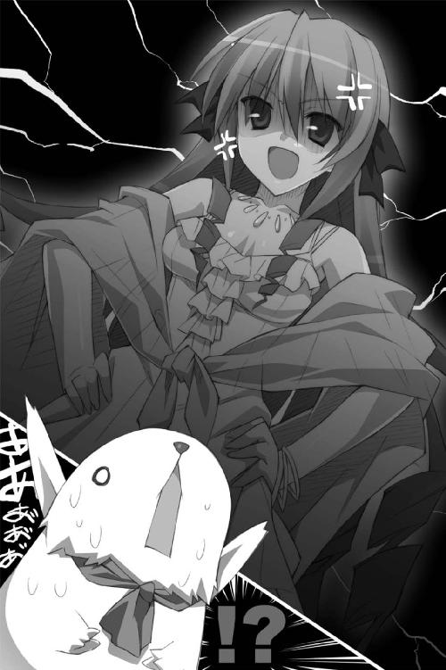
だらだらだらだらだらだらだらだら──アレスタの身体中から冷や汗が流れる。
「なななな、なにを仰いますやら、エリスさま。そんなこと言ってないですよ、僕は」
「黙りなさい、このエロカピバラ！ さっさと出ておいきっ！」
エリスはトビカピバラの長い耳を引っ掴むと、廊下に向かって放り投げた。
アレスタが石壁に激突して「もぎゅらばっ!?」というヤバそうな悲鳴をあげる。
王女はカピバラを気遣うこともなく勢いよくドアを閉めて──ギロリ。
恭太郎を睨み付けてきた。威嚇するように腰に手を当てて胸を張る。
立ち姿を見ただけで、彼女が王女だというのが納得できる気がした。
全身から年齢にそぐわない威厳と自信のようなものが漂っており、その眼差しは全てのものを見下しているようだったのだ。
「あなたが王仕ですわね。フン、名前を聞いてあげますわ」
名乗れってコトなのだろう。「神来恭太郎だ」と答える。
「恭太郎、というのね」
値踏みするように恭太郎をジロジロと眺め渡して、
「見た目はパッとしないですわね。マヌケ面から考えて教養もなさそうですわ。......あなた、おいくつ？」
「一六だよ」
「ナマイキ。私よりも上ですのね。私は一五ですわ。でも、年上だからといって威張ったら容赦しませんわ。当然、呼ぶときは《さま》をつけるんですのよ。呼んでみなさい」
「エリス...さま」
「フン、あなたのようなものに呼ばれるなんて不愉快ですわ」
「くっ......！」
自分から呼ばせたんじゃないか。いちいちひどいな、このコは......。
「魔力は強いみたいですが、それだけですわ。なにもかもが最低な男ですのねっ！」
吐き捨てるように言いながら、エリスは恭太郎に近づいてくる。
「私はね、男が嫌いなんですの。魔法も使えないクセに私と同じ空気を吸ってるなんて、それだけで許せませんわ！」
ズビシ！ 恭太郎の鼻先にほっそりとした指を突きつけて、
「......いいこと？ この私に逆らったらただじゃおきませんわよ？ 私が黒と言ったら白いものも黒いのです！ 『ワン』と鳴けと命じたら這いつくばって犬の真似をなさいっ！ それだけがあなたの生きていく方法なのですわ！ ほら、さっそく鳴いてみなさいっ！」
彼女は誰もが自分の前にひれ伏さなければガマンできないようだ。アレスタの言っていたように、かなり高慢で高飛車な女の子らしい。
「返事はどうしたのですっ、返事はっ！」
「悪いが、犬の真似などするつもりはない。元の世界に戻るためには、きみたちに従う他ないみたいだが......俺にも矜持があるんでね」
「この私に逆らうと言いますの......っ!? 許しませんわよ！」
王女の眉がピクピクと動いた。激しく怒っているようだ。
「あなたはドレイと同じなのですわ！ ナマイキな口を利いていいと思ってますのっ!?」
「ドレイになることを承諾した覚えもないな」
「......フン、いい度胸ですわっ！」
右手を横に突き出して、
「来たれ！ 【裁切りの鎌】」
一瞬で彼女の手に巨大な鎌が出現していた。鋭い刃を恭太郎の首元に突きつけてくる。
「這いつくばって、私の靴を舐めなさい。今ならまだ許して差し上げますわッ！」
「......やれよ。そんなことするくらいなら死んだ方がマシだ」
恭太郎だって命は惜しい。しかも、彼は突然異世界に喚び出され、生殺与奪権を彼女たちに握られているという状態にある。
それでもプライドまで捨てるつもりはなかった。
怯えない恭太郎を見て、根負けしたようにエリスは鎌をおろした。
「もうっ、本当にナマイキですわッ。殺せないコトがわかってるんですのね！」
恭太郎を睨み付けて、エリスは忌々しげに吐き捨てる。
「まったく......、こんなナマイキ男とお世継ぎをつくらなきゃいけないなんて......悪夢以外のなにものでもないですの！」
「イヤだったら無理につくらなくても」
「先に言っておきますわっ！ 私は王位を継ぎたいんですの！ それだけが、このエリス・レムリス・トレクワーズの目的なのですわっ！」
腰に手を当てて偉そうに胸を張り、第三王女は続ける。
「だから、こうしてわーざーわーざー私の方から訪ねてきてやったんですわっ！ 全ては他の王女よりも早くお世継ぎをつくるためにねっ！」
近づいてきたエリスは鎌を手にしたまま、ベッドに腰掛ける彼の隣に座って、
「本来ならあなたなんて、この私に触れることすらできないんですの！ 全ての女神に感謝なさいっ！ では、お世継ぎをつくりますわよっ！」
「ちょっ、ちょっと待てよ！ 出逢ったばかりでそーゆーのはマズイだろ！ よく知り合って恋が芽生えたんなら、まだしも......」
慌てる恭太郎だったが......なんだか、ようすがおかしかった。
エリスはベッドに腰掛けたまま、じ～～～～～～～っと恭太郎を見つめていたのだ。
時間にして三〇秒くらいそうしていただろうか。
おもむろに立ち上がったエリスは高笑いをはじめた。
「おーっほっほっほ！ これで間違いなく赤ちゃんができてしまいましたわねっ。女王の座は私のものですわーっ！」
「............はい？」
「なにを情けない顔をしてるんですの？ あなたは父親になったのです。もっとシャキッとして欲しいものですわ」
「......世継ぎはできてないと思うぞ。いや、別に俺はいいんだが」
「なんですってっ!? どういうことですのっ!? たばかったら許しませんわよ！」
再び鎌を恭太郎の首元に突きつけてくる。
「バカにしないでちょうだいっ！ 赤ちゃんのつくり方ぐらい知っていますわ！ ベッドで男女が一緒に過ごせばできてしまうのでしょう!? 違うの!?」
「あってるといえばあってるし、違うと言えば違うような......」
誤魔化そうとしたけどダメだった。恭太郎を睨み付けて、さらに刃を近づけてくる。
「その首の上についている貧相な飾りを落として欲しいみたいですわね！ さあ、答えなさいっ！ どうすれば、お世継ぎをつくれるんですのっ!?」
「それは、その......そうだ！ ピコル師匠に聞けばいいんじゃないか？」
「あの方は嫌いですの！ あなたが答えなさいっ！ 今すぐにっ！」
答えようと思ったけれど言葉が出てこなかった。
女の子にそんなこと説明するなんて、俺には無理だっ！
困り果てた恭太郎の目にベッドサイドの本が目に入った。ピコルに勉強のためと渡されたアレな書物だ。
「そ、そうだ。そこにある本を読んでみたらわかると思うぞ」
訝しげな表情で本の山を睨んだエリス。「ウソだったら容赦しませんわよ？」と疑いながらも、ベッドの上にちょこんと正座して、一番上に載っていた『初体験で失敗しないために』という本を眺めはじめた。
最初の数ページを読んだ時点で──ぽてんっ。
耳の先まで真っ赤になって、正座したままベッドの上に倒れ伏す。
「なっ、ななななっ、なんですの、これッ！ こんなことできるわけありませんわッ！ あなたとっ、ハダカでっ......」
横たわったまま信じられないと言いたげに首を振っている。ドリルっぽい縦ロールがなにかの武器のようにブンブンと揺れた。
「無理っ！ ゼッタイに無理ですのっ！」
「無理だったらやめろよ。俺もそんなことはできないし。別の解決策を模索すればいいじゃないか。子づくり以外のことなら喜んで手伝ってやるぞ」
「ダメっ！ そんなのダメですわっ！」
ガバッと起き上がったエリスは、真っ赤な顔で恭太郎を睨み付けてくる。
「私は女王にならなくちゃいけないのですっ！ そのためにお世継ぎをつくらねば......」
ベッドに転がっている本の表紙を見下ろし、エリスは「ううぅぅー......」とうなった。唇がわなわなと震えている。
と、ベッドから飛び降りたエリスは巨大鎌を恭太郎の方に向けた。宣戦布告するみたいに言い放つ。
「きょっ......今日のところはこれくらいで勘弁してさしあげますわっ！ 次っ！ 次ですのっ！ 次の機会には、お世継ぎをつくりますわよっ！ そのときまでにナマイキなことを言う口を直しておきなさいっ！」
耳の先まで真っ赤に染めたまま『初体験で失敗しないために』を引っ掴んだエリスは、部屋の中で鎌を振るった。
「おぶぅッ!?」
恭太郎は鎌の柄で、思いっきりぶん殴られてしまったのだった。
ふたりめ──第四王女 アルト・ファローズ・トレクワーズ
王宮を先導して歩きながら、トビカピバラの少年はお尻をさすった。
「痛たたたた......。ひどい目に遭ったね......」
アレスタの後ろについて階段を降りつつ、恭太郎も打ち据えられた頬を撫でる。
「まったくだ。とんでもない姫さまだな......。王女たちは、みんなあんな感じなのか？」
「まさか。エリスさまは特別なんだよ。高飛車だし、ドＳだし......僕、エリスさまは苦手なんだよね......」
気分を切り替えるためか、アレスタはポンと手を叩いた。
「次は大人しい姫さまのところに案内するよ」
とりあえずピコルの命令に従って王女たちに挨拶をして回ることに決めた恭太郎は、アレスタにお城を案内してもらうことにしたのだ。
相変わらず、自分がどうすべきか身の振り方は決めていない。だが、トレクワーズでしばらく世話になるのは間違いなさそうだ。挨拶ぐらいするのが礼儀ってものだろう。
「二人目は、第四王女のアルトさま。一四歳だよ」
「ああ。そのコには最初に会ったよ。かなり大人しそうな女の子だったが......また、お世継ぎつくりましょうなんて迫られるのかな......」
「アルトさまとは、そーゆー展開にはならないと思うよ、たぶん」
「どういうことだ？」
「そのへんは本人から聞けばいいさ」
王宮の地下を歩いていく。地上部分とは違いゴツゴツとした石造りの回廊になっていて、魔法による灯りがついていても不気味だった。見張りのためだろうか、武器庫や倉庫の前に、鎧を着けた女の子が立っているけれど一人で恐くないのか？ と心配に思う。
一番奥にある無骨な木製の扉のついた部屋に第四王女のアルトはいるようだ。
アレスタに促されノックをするが、返事はなかった。沈黙しか返ってこない。
「いないみたいだな」
「ちゃんといるよ。アルトさまは一度部屋にこもるとなかなか出てこないんだ」
もう一度ノックをしてみる。長い長い静寂の後で、
「......え、あ、はわっ、ノックに気付きませんでしたっ！ ど、どどど、どうぞっ！」
ひどくテンパった口調で返事が聞こえてきた。「じゃ、がんばれよー！」なんてカピバラの陽気な声に背中を押されつつ、一人で室内に入る。
部屋に入った恭太郎は、呆然と立ちつくしてしまった。
質素な石造りの部屋。恭太郎にあてがわれた後宮の一室よりも飾り気がない室内には、歯車が剥き出しになった機械や、さまざまな色の液体が入れられたガラス管、なにに使うのかわからない工具類などなどなど。さまざまな機械や実験器具が置かれていたのだ。さながら研究室といった趣。壁際にはぎっしりと書物が詰まった本棚が並び、入りきらなかった難しそうな本が床の上にも山をなしている。
機械の山に埋もれるような感じで、アルトは作業台の前に座っていた。装飾の少ない白いドレスを着た少女。手にはドライバーを持っている。
「はわっ......お、王仕さまっ！ すみませんすみませんすみませんっ、こんな汚い部屋にわざわざおこしいただいてっ！ あわわわわわっ！」
慌てたように作業台の上を片づけようとする。しかし、どう見てもすぐには片づきそうにない散らかりっぷりだった。
「いいよいいよ、俺の方こそ急に来て悪かった」
「そんなっ、謝らないでくださいっ。悪いのは全部わたしなんですから。あっ、今お茶をいれま──ふにゃッ！」
慌てて立ち上がった拍子に、機械のカドに頭をぶつけてしまう。
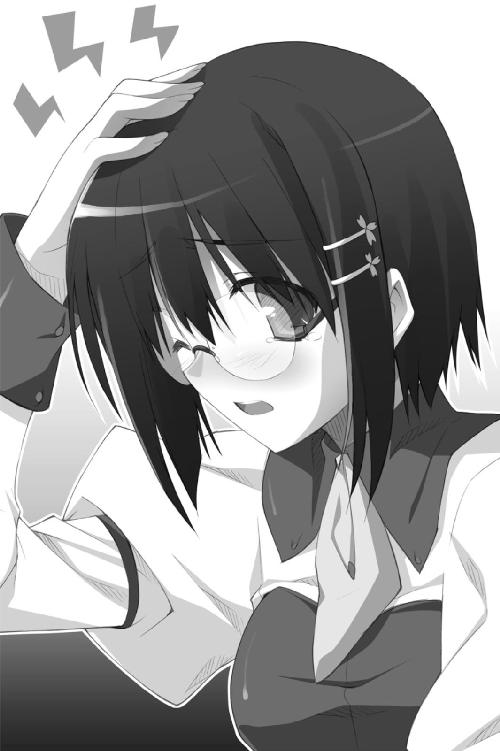
「だ、大丈夫か？」
「平気ですへいきですっ。すみませんすみませんすみませんっ」
眼鏡の下の瞳に涙を浮かべて頭をさすりながら、アルトは壁際に設置された銀髪の女の子の人形を操作した。
微かな動作音と共に人形が歩き出す。傍らに置かれたティーカップを抱え、大きく口を開いて──じゃ～～～～～っ──お茶を吐き出した。
ちゃんとソーサーにカップを載せて、恭太郎の方へと差し出してくる。
「あ、ありがとう」
紅茶の良い香りが鼻をくすぐった。なんていうか、ちょっぴり飲みづらい注ぎ方をされた気がするが......一口すすってみる。
「......意外とおいしいな。よくできた人形だね。魔法で動いてるのか？」
「お茶くみ人形のペトロシュカです。このコ、魔法はほとんど使ってないんですよ。ゼンマイと歯車で動いてます」
「日本にもお茶くみ人形ってのがあるが、それと同じような技術なのかな」
恭太郎はペトロシュカの銀髪を撫でる。
『キヤスクサワルナ、ボケ』
かわいい人形に暴言を吐かれた。
「ななな、なんてこと言ってるの、ペトロシュカっ！ 王仕さまに謝りなさいっ！」
『ケッ、ヤナコッタ』
「もうっ、ペトロシュカったら！ すすす、すみません、恭太郎さまっ！」
「いや、構わないよ。むしろ喋ることに驚いた。どういう仕組みなんだ？」
「お喋りするための機構は、少しだけ魔法の力を借りてるんですけど──」
ドライバー片手にアルトが説明してくれたが、難しい単語が多くてほとんど理解できなかった。魔法が存在する世界なりに独自のテクノロジーが存在するようだ。
「ひょっとして、この人形はきみが作ったのか」
「は、はいっ、そうなんですっ」
「へえ、すごいんだな」
「ゼンゼンすごくないです。わたしなんてダメダメですっ。ほめないでくださいっ！」
ブンブンと音が鳴りそうなくらいに首を横に振る。
謙遜してるけど、彼女は一四歳だ。その年齢でこれだけのものが作れたら、かなりの技術力なんじゃないだろうか？ 壁際の本棚には難しそうな本がいっぱい並んでいる。きっと相当な勉強をしているんだろう。
オドオド。びくびく。ガクガク。ぶるぶる──怯えた子犬のような感じで恭太郎の方を窺いながら、ためらいがちにアルトは尋ねてきた。
「それで......こんなへんぴな場所に、どんなご用件でいらっしゃったんでしょうか？」
「挨拶に来たんだよ。俺は神来恭太郎だ。きみはアルトちゃん、だよね」
「は、はい。第四王女のアルト・ファローズ・トレクワーズですっ」
ハッと気付いたように、アルトは深々と頭を下げた。
「あのっ、その節は助けていただきまして、ありがとうございました。おかげで助かりました。王仕さまは命の恩人ですっ！ すごいですっ！ カルタギアの飛竜騎士団に立ち向かっていける男の人なんて、この国にはいません！ 抱き上げられたとき、私、なんてカッコイイ人なんだろうって感動しちゃって......」
と、アルトは顔を真っ赤に染める。慌てたように手足をパタパタと動かして、
「はわっ！ 私ったら、なにを言ってるんでしょうっ。すみませんすみませんっ！」
「？？？」
「と、とにかく......あのときは助けていただいてありがとうございました。お礼が遅くなってしまってすみません」
「お礼なんていいよ。俺の方こそ、きみに助けてもらったんだし」
「助けたなんて、そんなっ！ わたしはなにもできませんでしたし......。むしろ、足手まといになってしまって......うう、わたしは本当にダメ人間です......」
アルトはションボリとうつむき、両手の人差し指を突き合わせながら続ける。
「せっかく来ていただいたのに、こんなことを言うのは心苦しいのですが......。わたしは、お世継ぎづくりには参加しないんです。わたしの魔法、ご覧になりましたよね......？」
「アルトちゃんの魔法......あ、ちっこい弓矢が出るアレだよね。覚えてるよ」
『ちっこい』という単語を聞いて、アルトの表情が曇った。
「そうなんです。とても小さいんです。トレクワーズの王族は強力な魔法を使えるはずなのに......私はマトモに戦うことすらできなくて......」
「あ、すまん......」
「いえ、いいんです。事実ですからっ」
アルトは諦めたように寂しげに微笑んで、
「女王は国を守るために強い魔法を使わなきゃいけません。だから、魔力の弱いわたしは、女王にはなれないんです。......というか、最初にお世継ぎをつくっちゃうと王位継承権がわたしに来ちゃうから、そーゆーコトはしちゃダメだって言われてて......」
なるほど。『アルトとはそーゆー展開にはならない』とアレスタは言っていた。それには、こんな理由があったのか。
「わたしはいらない王女なんです......。だから無視してください。わたしみたいなダメ人間は、地下の工房にこもってジッとしてますから......」
ひどく悲しそうな表情でアルトはうつむいてしまう。彼女は地下からあまり出てこないという。日がな一日、こうしてずっと一人で機械をいじっているのだろうか......？
悲しそうな顔は見たくなかった。だが、どうしたらいいかわからない。朴念仁な恭太郎は、女の子を慰めたり励ましたりする方法には疎いのだ。
困り果てた末に、恭太郎は犬の頭でも撫でるようにアルトの髪を乱暴に撫でた。ビクッと王女は肩を震わせる。
「ど、どうなさったんですか......？」
「あー、その、なんだ......俺はきみに手を出すような真似はしない。だが、ときどきココに遊びに来ちゃダメかな？」
「えっ？ ど、どうしてそんなこと......」
なぜだろう？ 自分でもよくわからなかった。そもそも女の子と面と向かってお喋りするのは苦手なのだが。どうして俺は、また来たいなんて言ってるんだ？
強いて言うなら......アルトちゃんが寂しそうだったから、だろうか。
「俺が住んでた世界は、魔法なんてなかったんだ」
「えっ、まったく魔法がないなんて、どうやって生活してるんですか？」
「科学技術だけで、ものすごく発展したんだ。この城よりも大きな建物が建つくらいにね」
「《かがく》！」
アルトはキラキラと瞳を輝かせる。
「恭太郎さまは《かがく》をご存じなんですねっ！ 《かがく》は素晴らしいです！ 魔法が使えない人にも等しく恩恵があるんですから！ だから、わたしも《かがく》を勉強しているんですっ！」
泣きそうだった表情が、花が咲くようにほころんだ。
「ぜひ恭太郎さまが住んでらっしゃった世界のことを聞かせてください！」
「ああ。俺は理科の成績はよくなかったんだが、もしも教えてあげられることがあったら、アルトちゃんに教えてあげるよ」
「本当ですかっ！ ありがとうございますっ！」
目一杯頭を下げたアルトは、うれしそうに「えへへ...」と笑う。そのまなじりには、微かに涙が浮かんでいた。
「それじゃ、また来るよ。アルトちゃん」
「はいっ。お待ちしております」
『ニドトクンナ、ボケナス』
「ダメでしょ、ペトロシュカー！ 王仕さまにちゃんとご挨拶なさーいっ！」
『オコトワリダ、ケケケッ』
真剣に機械人形を叱る王女がかわいくて、声を上げて笑ってしまう恭太郎なのだった。
さんにんめ──第五王女 メルル・シュシュリン・トレクワーズ
『ふふふ、罠とも知らずにノコノコやってきたのね、ガイルーン』
『これは......!?』
青いローブに身を包んだ美形の魔法使い。彼の身体が黒い霧に覆い隠されていく。
『屋敷全体に腐食の魔法を掛けておいたのよ！ ふふふふ、この腐り姫デボネアに楯突いたのが運の尽き！ 生きたまま腐っていきなさい！』
高笑いするのは、腐りかけた身体をもつ美しきゾンビの姫君。
ガイルーンのローブがみるみる腐食していく──!!
「うわーん！ ガイルーンが負けちゃうよー！ 大ピンチだよー！」
「苦しいよ！ 俺の首を絞めないでくれ、メルルちゃん！」
頭に焦げ茶色のカピバラを載っけたツインテールの少女は、恭太郎の言葉なんて聞いちゃいなかった。小さな手で襟首を掴んで、がくがくと揺さぶってくる。しかし、その瞳は水晶の塊みたいな受像器の画面に釘付けだ。
彼女は第五王女のメルル。歳は一二歳だけど、背が小さく、身体付きもペタンコな感じなので、もっと幼く見える。せいぜい一〇歳そこそこって感じだろうか。ツインテールの髪に結わえられたカピバラ形の飾りや、フリルやリボンで飾られた丈の短いドレスがよく似合っていた。
五姉妹の末っ子である彼女の元にも挨拶に来たところ、メルルは「これから『禁呪詠唱☆ガイルーン』がはじまるんだよっ！ 一緒に観ようよ！」なんて言い出した。なんでも、この世界には受像器──現代日本で言うところのテレビのようなものがあり、アニメも放映されているらしい。特に『禁呪詠唱☆ガイルーン』は大人気の番組なのだそうだ。で、強引に受像器の前に座らされてしまったというワケ。
ちなみに、メルルの頭の上で眠っているカピバラはアレスタとは別ものだ。元人間ではなく、正真正銘生粋のトビカピバラだそうな。名前はミルン。メルルがペットとして可愛がっているようだ。
『ククク......そろそろ肉が腐って落ちるころかねえ......？』
画面の中。青いローブの魔法使い──ガイルーンは、うれしそうに嗤う腐り姫デボネアを真っ直ぐに見つめていた。ローブを腐食させる黒い霧に包まれても動じるようすはない。
『罠とも知らずにやって来た......。おまえは、そう言ったな、デボネア』
『ええ。青き魔法使いともあろうものが油断をしたわね』
『残念だが、それは違う。俺は罠があることなどわかっていた』
『......なに？』
『そして、そんな罠では、この俺は倒されないこともわかっていたのさ』
腐敗の霧に包まれながら、ガイルーンはカッコイイ決めポーズをとって、
『禁呪の調べを聞かせてやるぜ』
突きだした手から光が迸り──剣のような形をとった。
『【光の剣】！』
無造作に輝く剣を振るう。
衝撃波が迸り、腐り姫デボネアが両断された。断末魔の叫びと共に消滅してしまう。
「やったあっ!! ガイルーンカッコイイ！」
「カッコイイのはわかったから！ 苦しいよ、メルルちゃん！」
感動したようすのメルルは、またもや恭太郎の襟首を掴んでがくがく揺さぶる。
そんなこんなで、『禁呪詠唱☆ガイルーン』が終わった。
しかし、アニメ鑑賞タイムが終わってもメルルの興奮は収まらない。目を覚ましたカピバラを抱きしめつつ、無邪気にガイルーンの格好良さについて語り続ける。
「ガイルーンはすごいんだよ！ 男のひとなのに魔法がつかえるんだからっ！ それで、どんなに悪い魔女でも禁呪でやっつけちゃうんだよっ！」
リアクションに困る恭太郎に代わって、ミルンが「もきゅっ☆」と鳴いた。
よっぽどガイルーンが好きなんだろう。壁にはポスターが貼られ、ベッドサイドにはフィギュアなども飾られている。
「しかもね、ガイルーンはジツザイした人なんだよっ！」
「本当にいた人間なのか？ アニメのキャラクターじゃなくて？」
「うんっ。後宮のお庭にもガイルーンの像が立ってたでしょ？ ガイルーンは『きゅーこくのえーゆー』なんだよ！」
きゅーこくのえーゆー？ 一瞬意味がよくわからなかったが、頭の中で漢字にしてみてようやくわかった。『救国の英雄』か。
「この国を救ってくれたんだな」
「そうなんだよっ！ トレクワーズが大ピンチのときにサッソウと現れて、ばばーんってジケンを解決して去っていったんだよ！ ガイルーンはすごいんだよっ！」
メルルは自慢げに胸を張ったけれど、ふいにハッと気付いたように手を口に当てた。
「あ、ごめんなさいっ。せっかく王仕さまが来てくれたのに、メルルってばガイルーンのことばっかりしゃべっちゃった」
「いいよいいよ。俺も楽しかったしさ」
これはウソじゃない。異世界で放映されているテレビ番組というだけで、興味深く観ることができた。それに幼い頃はヒーローもののアニメや特撮番組が好きだったし。
メルルは自分が褒められたみたいに身をよじって「うれしいなっ。また一緒に観てねっ！ 恭太郎おにいちゃんっ」なんてはしゃいでいる。
「ああ。いいよ」
「わあいっ！ 約束だからねっ！」
恭太郎の言葉にカピバラを抱いたままピョンと跳びはねて全身で喜びを表現していた。
（無邪気でかわいいな......。このコなら、お世継ぎづくりなんて関係ないだろうし......）
すっかり安心しきり、安堵の息を漏らす恭太郎だったが──
「それじゃ、おにいちゃんっ！ ちょっとそこに座って待っててねっ！」
ベッドを指さすと、メルルはミルンと共に隣室へと駆け込んでいった。
「？？？ どうかしたのか？」
「いいからいいからっ！」
ワケもわからず、言われるままにベッドに腰掛ける。
しばらくの間、隣室からガサゴソという音と調子っぱずれな鼻歌が聞こえてきて──
「おまたせっ！ じゃじゃーんっ♪」
部屋へと戻ってきたメルルを見るなり、恭太郎は大きな声をあげてしまった。
「なんだよ、その格好っ！」
「えへへ、可愛いでしょっ」
メルルはシースルーのローブに身を包んでいたのだ。
その下につけているのは、レザーのビキニ──というか、単なる革紐だ。ベルトのようなもので胸元とお尻をかろうじて隠しているだけの、服とは呼べないシロモノ。
手足に巻かれたフリル付きのリボンが可愛いけれど......かなり露出度が高い服装だ。しかも、なぜか頭には大きなネコミミがついている。
恭太郎の隣にぴょんと座って、満面の笑みを向けてくる。
「これはねっ、『禁呪詠唱☆ガイルーン』に出てくるシオルってお姫さまの服なんだよっ！ すっごく可愛いから気に入ってるんだっ！ どうどう？ 可愛いでしょ？」
「た、確かに可愛いが......」
幼く見えるとはいえ、やはり女の子なのだ。こうも露出度が高くては目のやり場に困る。
『ガイルーンって番組が好きなのはわかるけど、男の前でそういう格好はするもんじゃないよ？ 女の子は慎みがなければ』
恭太郎が窘める前に、メルルはちょっぴり頬を染めて近寄ってきて、
「それじゃ、おにいちゃん」
とんでもないことを耳打ちしてきた。
「お世継ぎ、つ・く・ろ」
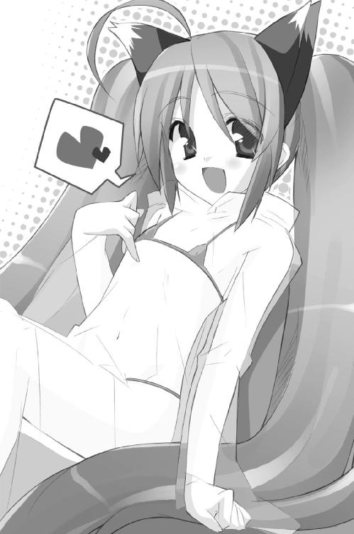
「......な、ななな、なにを言ってるんだっ？」
「うにゅ？ どうして驚いてるの？ そのためにメルルの部屋に来たんでしょ？」
「俺は挨拶に来ただけだ！ というか、そもそもメルルちゃん『お世継ぎをつくる』って意味わかって言ってるのか」
「もー、おにいちゃん。メルルをバカにしてるでしょ？ もうコドモじゃないんだからねっ！ お世継ぎのつくり方だって、ちゃ～んとわかってるんだもんっ！」
プクッと頬を膨らませたメルルは、もう一度耳打ちしてくる。
「お世継ぎのつくり方は......おにいちゃんの～ゴニョゴニョをー、ゴニョゴニョしてー、メルルがー、ゴニョゴニョゴニョゴニョゴーニョゴニョ～!!」
「ストップストップ！ 最後まで説明しなくてもいいよ！」
恭太郎は聞き終わらないうちに、その場にぶっ倒れそうになった。
（メルルちゃんの知識は完璧じゃないかっ!? ってか、むしろ俺よりも詳しい!?）
「ね？ ちゃんと知ってるでしょ？」
恥ずかしかったのか、さらに真っ赤になってしまった。どういう仕組みになっているのかネコミミをパタパタさせつつ、
「メルルは王仕さまが来てくれる日をず～～っと待ってたんだよ。夢だったんだ！」
「夢って......お世継ぎをつくるのが？」
「えへへ、メルルの夢はね、『およめさん』になることなんだっ。王仕さまはメルルにとって、だんなさまと同じだもんっ！ ね、そうでしょ？」
「まあ、確かにそうかもしれないが......きみにはいろいろ早すぎるんじゃないか？」
「時間なんて関係ないよっ。大切なのはアイジョーの深さだよっ！ イキオイだよ！」
「どっちだよ!?」
「どっちでもいいのっ！ えいっ」
ベッドに腰掛けている恭太郎の膝の上にメルルは飛び乗ってきた。そのまま首に腕を回して、ギュッと抱きついてくる。
細っこいカラダの感触をダイレクトに感じた。革紐で隠された胸元はぺたんこに見えたけれど......若干膨らんでいるみたいだ。ぷにぷにと柔らかかった。しかも、甘いような女の子のいい匂いが鼻をくすぐって......恭太郎は気が遠くなってしまいそうだった。
「男のひとって、こういう格好で迫られるとガマンできなくなっちゃうんだよね？」
「そ、それは人によると思うんだが......」
上目遣いにジッと見つめて、幼さの残る顔を近づけてくる。
「メルルは準備オッケーだよ」
「ちょ......ちょっと待ってくれ......。俺は準備ができてないというか......」
視線を背けようと下を向いたら、白いオナカと数本の革紐に隠されただけの下腹部が見えてしまった。革紐からぱんつが見えていないということは......ひょっとしたら、下にはなにもつけていないのかもしれない。
そう気付いてしまったら、さらに心拍数が跳ね上がってしまう。
恭太郎のようすを見て、メルルは首を傾げた。
「うにゅ？ どうして、なにもしてくれないの？ なんだかツラそうな顔してるし......」
可憐な花がしおれるように、うれしそうだった顔がみるみる曇っていく。ネコミミが悲しげにぺたんと寝てしまった。
「ひょっとしてメルルじゃダメかなぁ？ ドキドキしてもらえなかったのかなぁ？」
うるうる。うるうるうるうる。瞳が涙で潤んだ。今にも泣き出してしまいそうだ。
「メルルはユフィナおねえちゃんみたいにスタイルもよくないしぃ......えうううぅ......」
いかん。女の子を泣かせるわけにはいかないぞ。女を泣かせるなんて、男のクズがすることだ！ 絶対にそれはダメだ！
できる限りメルルの肌を見ないようにしつつ、照れくささを堪えて口を開いた。
「そんなことはない。ドキドキしてるよ」
「......ホントにっ？」
「ウソじゃない。ドキドキしすぎて鼻血が出そうなくらいだ」
「可愛いかなっ？」
「ああ。すごく可愛いと思う」
「えへへ、うれしいなっ！ 王仕さまに嫌われちゃったら、メルルは出家をして女神聖教会でシスターになるしかないところだったよぅ！」
メルルの顔がパッと明るくなった。幸せそうに微笑んで、恭太郎にすり寄る。
（俺にほめられたくらいで、こんなに喜んでくれるのはうれしいけど......）
「それじゃあ、お世継ぎつくろっ！」
「だから、それは無理だって！ って、ダメ！ その革紐はハズしちゃダメだっっ!!」
「うにゅ？ どうしてかな？ メルルにドキドキしてくれてるんだよね？」
「そういうのは段階をおってというか......お互いがお互いを好きになって、一生を添い遂げようと誓い合ってからするものだろう!? 軽々しくしちゃダメだ！」
考え込むように首を傾げていたメルルは、ポンと手を叩いた。
「わかったよっ。ダンカイだねっ！」
ベッドから飛び降りたメルルは、照れくさそうに頬を染めながら──ちゅっ。
少しだけ背伸びをして、恭太郎のほっぺに口付けをする。
「────!!」
「えへへ。今日は第一ダンカイだけにしとくよっ。おにいちゃんが喜んでくれるようなお洋服もいっぱい用意してあるからねっ！ 次はお世継ぎつくってね、おにいちゃん」
完全にフリーズしてしまった恭太郎は、ココロの中で認識を新たにした。
メルルちゃんはコドモっぽくて、アニメ好きで、無邪気で、可愛らしいけれど、
超がつくくらいのオマセさんなんだな......。
よにんめ──第二王女 レイシア・ラトゥーイン・トレクワーズ
「王国南部で発生した大雨で橋が流されてしまったそうです。領主から壊れた屋敷と橋の補修費用の陳情が来ております」
「まあ、それは大変ですね......。ですが、まずは調査隊を派遣して、被害内容を報告させてください。お屋敷よりも先に修復が必要なものがあれば、そちらを優先させます」
「了解しました」
「あ......調査隊は陸路ではなく船で向かわせてください。ストラ川を遡れば被災地までいけるはずです」
「恐れながら、飛竜や騎馬で向かうよりも到着が遅れるかと存じますが......」
「わかっています。ですが、夜を徹して向かえば陸路と大差ない時間でつくはずです。そのまま船は現地の領民に差し上げてください。橋が落ちているなら船が必要ですから。そうそう、すぐに送れるよう救援物資も用意しておいてくださいね」
王宮の奥。女王の間にほど近い場所にある執務室と呼ばれる部屋。
第二王女のレイシアに挨拶に来た恭太郎は、ただただ呆然とすることしかできなかった。
（会えば驚くって言ってたけど、このことなのか......？）
この部屋まで案内してくれたアレスタと、こんな会話をしたのだ。
『四人目はレイシアさまだよ。第二王女で一五歳』
『ん？ エリスと同じ歳なのか？』
『双子なんだ。レイシアさまがお姉さんだよ。でも、二卵性っていうんだっけ？ ゼンゼン似てないんだ。エリスさまと違って、おしとやかだから安心して挨拶しなよ。そうそう、レイシアさまは素晴らしい特徴を持ってらっしゃるんだ。見た瞬間に、すげーって思うはずだよっ！ ふししししっ！』
アレスタのニヤニヤ笑いが気になっていたのだけれど──
女官からレイシアは手が放せないのでしばらく待っているよう言われ、ソファに座ってようすを見ていた恭太郎は、確かにびっくりしていた。
身に纏う薄紅色のドレスには似つかわしくない無骨な樫材の机についているレイシア。彼女のもとに女官たちによって、ひっきりなしに報告が寄せられてくる。
「王国領内に盗賊団が出現したそうです」「隣国フレイザーより書状が参っております。国交正常化記念式典についてです」「貴族議会から治水事業についての見直し案が出されました」「カムイラ村の村長に子どもが生まれました」などなどなど。
「あらまあ、それは大変ですね」「今年もそんな季節になりましたか」「まあっ！ それは喜ばしいことです」
報告の一つ一つにお姫さまらしいおっとりとしたリアクションを返しつつ、淀みなく的確に指示を与えていったのだ。
しかも、机の上に積まれた大量の書類を処理しながら、である。
なんでも病気で伏せる女王に代わって国の政治の一部を取り仕切っているらしい。一五歳の女の子にそんなことができるのかと思ったけれど杞憂だったみたいだ。
書類の山に凄まじい速度で目を通していく。そして、最後の書類の末尾にサインとハンコを押したレイシアは大きく息を吐いた。
「ふう......これで、すぐに処理しなければならない案件は終わりですね。あの......みなさん。少し退がっていてください」
「かしこまりました」
「私がいいというまで、お部屋には誰も入らないでくださいましね」
王女の言葉に「承知しております」と意味ありげに頷いて、女官たちが一礼して去っていく。部屋には恭太郎とレイシアだけになった。
「お待たせいたしました、王仕さま」
王女は恭太郎に柔らかな笑顔を向けてくる。
「すごいんだな。その歳で一国の政治を動かしてるなんて驚いたよ」
「そんな......私なんてまだまだです。未だにご病気のお母さまの手を煩わせてしまうことも多くて......」
謙遜しながらレイシアは執務机から立ち上がる。
（──うおゎっ!?）
そこで恭太郎はようやく、アレスタのセリフ＆ニヤニヤ笑いの真意に気付いた。
レイシアは双子の妹であるエリスとは違って、柔和なイメージのお姫さまだ。
優美な丸みを帯びた頬。ふんわりとカールした長い髪。長いまつげと大きな瞳。見ただけで優しくておしとやかだとわかるようなお姫さま然とした美少女である。ただ立っているだけで輝くばかりの気品と優雅さのようなものを漂わせている。
しかし、エリスとの最も大きな違いは別にあった。
──胸だ。
どちらかというとひかえめなエリスとは違い、レイシアはとんでもなく胸が大きかったのだ。ウエストは細いのに、薄紅色のドレスの胸元は『こ・れ・で・も・かーッ!!』とばかりに隆起している。静かに歩いているだけでたゆんたゆんと揺れているのだ。
（アレスタの言うとおり、これは驚きだ......!!）
「どうかなさったんですか？ ご気分がお悪いのでは......？」
巨大すぎる胸の前で手を組み合わせて、レイシアは心配そうに眉をひそめる。
「い、いや、大丈夫だ。俺は神来恭太郎。一応、挨拶に来たんだよ」
心臓に悪いから、さっさとすませてしまおう。
「恭太郎さま、ですね。すてきなお名前です。異国情緒があって」
やんわりと微笑んだレイシアはスカートの裾を軽くつまみ、優美な仕草で礼をした。
「改めて自己紹介させていただきます。トレクワーズ王国の第二王女、レイシア・ラトゥーイン・トレクワーズです。至らないところもあるかとは思いますが、どうぞよしなにお願いいたします」
と、第二王女はやんわりとした笑みを浮かべながら恭太郎を促した。
「お庭へ参りませんか？ せっかく王仕さまとお会いしたのに執務室で立ち話もなんですし......お見せしたいものがあるんです」
連れられて向かったのは後宮の外れにある温室だった。学校の教室が一つ、すっぽり収まってしまう大きさのガラス張りの建物だ。内部はちょっとした庭園となっている。
中央にある噴水を取り囲むように花壇が作られ、花々が咲き誇っていた。花壇の脇には美女の彫像。台座にレバーがついているのは......草花に水をやるスイッチなのだろうか。
美しく咲いているバラを見つめ、レイシアはうれしそうに吐息を漏らした。
「よかった。きれいに咲いてくれて......。このお花、私がお世話をしたんですよ」
「きみが？」
「はい。庭師のみなさまには、手を土で汚すなんてとんでもないと叱られてしまうんですが、お花が好きなんです」
恭太郎に優しげな笑みを向けてきた。レイシアはとびきりかわいい美少女だ。微笑まれるだけで心臓が飛び跳ねてしまう。
「このバラは王仕さまが来てくださる日のことを想って大切にお世話をしたんです。恭太郎さまとお会いできた今日という日に咲いてくれるなんて......うふふ、女神さまが祝福してくださってるみたいですね」
自分の言葉に照れてしまったのか、恥ずかしそうに頬を染めた。そんな仕草もいちいち可憐で愛らしい。
「そんなに王仕が来るのを待ってたのか。やっぱり国民のことが心配なんだな......」
「それもありますが......お母さまのためにも早く女王の座を代わって差し上げたいと思っているんです。《大結界》を維持するには、膨大な魔力を必要とします。病床のお母さまには大きな負担となっているのです。政務を手伝って差し上げてますが......やはりお母さまのことを考えれば、女王の座を代わって休ませてあげたくて......」
「......優しいんだね、きみは」
「優しいだなんておっしゃらないでください。親を想うのは子として当然のことです」
きっぱりと言い切った王女に、恭太郎はちょっぴり感動していた。
（レイシアは本当にイイコだな......。理知的で、おしとやかで、マジメで、優しくて......。困っているなら助けてやりたいところなんだがなあ......）
ため息を吐く恭太郎を、第二王女は決意に満ちた表情で見つめた。
「国民のために、そしてお母さまのために......私は頑張らねばならないのですっ」
花壇の脇に立っている彫像へと駆け寄る。
「この温室は王宮の《大庭園》と違って後宮の一部なんです。だから、こんな仕掛けがあります。──えいっ！」
台座についたレバーを倒すと──ごごごごごごごごごごごっ。
「なんだ？......こ、これはまさか！」
噴水が地面に沈み、代わりに花のカタチをした大きな丸いベッドが出現した。さすが後宮だけあって、どこにでもベッドがあるんだなあ。って、感心してる場合じゃない！
レイシアに思い切り引っ張られ、ベッドの上へと導かれてしまう。シーツの上にちょこんと座った王女は、三つ指をついて頭を下げてくる。
「トレクワーズを救うためには、恭太郎さまにおすがりするしかないのです。ふつつかものではございますが、何卒よろしくお願いいたします」
「ま、待ってくれ！ 今の話を聞いた後だと非常に断りづらいが待ってくれ！」
「待てませんっ！ 一刻も早く王座を継がねばならないのですっ！」
いつのまに背中のホックをハズしたのだろう──スルリ、と。
レイシアの肩からドレスが滑り落ちた。華奢な鎖骨と、純白のブラジャーに包まれた豊かすぎる胸が露わとなる。
バストの下辺りに手を添えて恥ずかしそうにドレスを押さえながら、お姫さまは恭太郎のすぐ目の前まで擦り寄ってきた。
間近で見るレイシアの胸の破壊力は凄まじいものだった。腹部はきゅっと締まっているのに、胸元はメロンぐらいの大きさに膨らんでいるのだ。あまりにも豊かすぎるために、白いレース地の下着から柔らかな丸みが思い切りはみ出してしまっている。今にもブラジャーがはち切れて、ぷるるんと胸がこぼれ落ちてしまいそうだ。
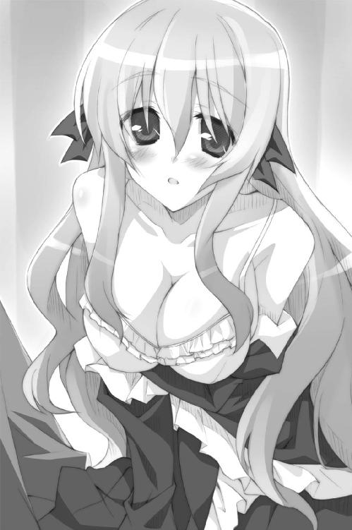
魅惑的すぎる双丘が眼前に迫り、恭太郎の血圧が急上昇。心臓がバクバク。
羞恥心のために瞳を潤ませたレイシアは、唇を震わせた。
「恭太郎さま......。私と、その......せ......せ......................................................」
ぼわっ。耳の先まで真っ赤に染めて、聞こえないくらいの小声で続きを口にする。
「..............................................................................っ...くすしてくださいませ」
レイシアの一撃で、ココロの真ん中にある大切ななにかが崩壊しそうだった。
懸命に正気を保ちつつ、恭太郎は首を横に振る。
「いやいやいやいや！ 俺たちは会ったばっかりだろ!? 早すぎだ！ せめて、よく知り合ってからの方が......」
「私を知る必要はありません。そーゆーコトをしていただくだけでいいんですっ」
「いや、でも......そうだっ、まだ昼間じゃないかっ！」
「明るくて恥ずかしいですが、私は耐えられます。トレクワーズ五〇〇万の民のことを思えば、どんなことでも平気ですっ」
「俺にはそんなことできないんだよっ！」
「でしたら、はしたないですが......私が頑張りますっ」
「頑張るってなにをする気だっ!?」
「はいっ。私、こう見えても勉強熱心なんです。この日のために、いろいろとピコル師匠から教えていただきました」
真っ赤になった顔で、レイシアはぎこちなく微笑んだ。
「王仕さまに......その......気持ちよくなっていただく方法とかっ」
「勉強熱心にもほどがある！ っていうか、なに教えてんだよ、あの人！」
テンパりまくる恭太郎を無視して、レイシアは手を握ってきた。
そして──もにゅっっっっっっっっ
手のひらがレイシアの大きな胸に押し当てられた。指が完全に埋まってしまう。
未曾有の柔らかさを感じて、恭太郎は声にならない悲鳴をあげた。
はらり、と。
恭太郎のために世話をしたというバラの花びらが舞い散った──......
ごにんめ──第一王女 ユフィナ・アストリア・トレクワーズ
ごすっ。ごすっ。ごすっ。ごすっ。ごすっ。ごすっ。ごすっ。ごすっ。ごすっ。ごすっ。
「俺は最悪だ最低のケダモノだ不埒で助平な不届きものだ俺のようなダメ人間は死んだ方がマシだ地獄に落ちろ嗚呼俺はなんてことをしてしまったんだあああああああああ!!」
後宮にある恭太郎の部屋。壁に向かって正座した部屋の主は──ごすっ。ごすっ。ごすっ。ごすっ。ごすっ。ごすっ。ごすっ。ごすっ。ごすっ。ごすっ。ごすっ。ごすっ。
大理石張りの壁に頭突きをカマし続けていた。
レイシアに誘惑された恭太郎は、とんでもないコトをしでかしてしまったのだ。
自分自身、カタブツであると──強い貞操観念を持っていると信じていた。
しかし、レイシアに迫られた瞬間、脳内で《煩悩》と《理性》による壮絶な戦乱が始まったのである。
天使の姿をした理性が叫ぶ。
『好きでもない女の子と世継ぎをつくるなんて、最悪だぞ！ 今すぐやめるんだ！』
しかし、煩悩が悪魔となって囁いた。
『レイシアと世継ぎをつくってやれば、彼女だけじゃなく、国中のみんなが救われるんだぞ。それに、おまえは元の世界に帰れるんだ。いいことずくめじゃないか。ほぉら、ひと思いにヤっちゃえよ』
悪魔の言葉は強力だった。理性の軍勢が一気に追い払われていく。
（そうだ......。彼女たちを救うためだと考えればいいんだ......。俺が少しガマンすれば、みんなが助かるんじゃないか......）
恭太郎はレイシアの潤んだ瞳から目が離せなくなってしまった。
胸元に触れている手も吸い寄せられたかのように、引きはがすことができない。
それどころか、気付かないうちにゆっくりと手のひらに力がこもっていた。
天地天命に誓おう。そんなつもりはなかった。魔が差した、としか言いようがない。
完全に無意識のうちに。まるで何かに導かれるように。
レイシアの爆乳を優しく揉んでしまっていたのだ──!!
とんでもない柔らかさと、ぴんとした張りとが同居したレイシアの胸の感触に、頭の奥がしびれる気がした。
「............あっ」
レイシアが甘やかな吐息を漏らして──
（ふわあああっ!! なにをしてるんだ、俺はッ!?）
そこで、恭太郎は我に返った。
（うわあああああああバカバカバカダメだダメだしっかりしろ正気を保てこんなことをしたら間違いなく姉上に殺されるぞ！）
脳裏に、般若のような怒りの形相をした姉の姿が浮かぶ。
冷水を掛けられたように、一気に正気を取り戻した。
「す、すまん！ 俺が悪かった～～～～～～～～～～～～～～～～～～～～～～っ！」
王女に謝った恭太郎は、一目散に部屋へと逃げ込んだのだ。
そして、自己嫌悪のあまりヘッドバットマシーンと化してしまったという次第である。本来だったら滝にでも打たれたいところだ。
「ぬおおおあれしきで理性を失いそうになるなんて実に情けない不甲斐ないみっともないこのろくでなしのド変態め修行が足りないにもほどがあるぞ神来恭太郎ぉっ！」
ごすっ。ごすっ。ごすっ。ごすっ。ごすっ。ごすっ。ごすっ。ごすっ。ごすっ。ごすっ。ごすっ。ごすっ。ごすっ。ごすっ。ごすっ。ごすっ。ごすっ。ごすっ。ごすっ。ごすっ。
彼だって男子高校生のハシクレだ。可愛い女の子に色っぽく迫られれば、我を忘れても不思議ではないだろう。
だが、カタブツ侍少年である恭太郎は、自分が許せなかったのである。
ひとしきり石壁に頭突きをカマし続けた恭太郎は、床に倒れ込んだ。
額は真っ赤になり、ぷしゅ～っと湯気を立てている。
「あ、部屋に戻ってたんだね。どこかに走ってっちゃったってレイシアさまに聞いたから、びっくり──って、恭太郎!?」
部屋に入ってきたアレスタが、ぶっ倒れてる恭太郎を見て飛び上がった。
「だ、大丈夫!? どうかしたの!?」
「......問題ない。軽く自己嫌悪に打ちのめされてただけだ......」
「ユフィナさまのところへ案内してあげようと思ったんだけど......明日にしておこうか？」
カピバラが心配そうに顔を覗き込んでくる。
しばらく、倒れたまま考えていたが......恭太郎は気合いで立ち上がった。
「......いや、今日のうちに会っておく。挨拶くらいは初日に済ませるべきだからな」
そんな気分じゃなかったが、挨拶を後回しにもしたくなかったのだ。神来恭太郎はカタブツな上に律儀な少年なのである。
「まあ、恭太郎がそう言うなら......」
恭太郎を先導して後宮の廊下を歩きながら、アレスタはペラペラと喋りはじめた。
「それにしても、なんで逃げだしたりしたんだよー。なっさけないなー。レイシアさまの爆乳に迫られるなんて僕だったら大喜びするところなのにさー。きみってば変わってるよ......って、まさか、恭太郎！」
後宮の渡り廊下から外に出たアレスタが、ギョッとしたように振り向く。
「男の方が好きなんて言わないよねっ!? 僕にはそんな趣味ないからねっ!? 僕が可愛いからって、手を出したら二重の意味でダメ人間だよ!? 動物だし、オスだし！」
あまりに馬鹿馬鹿しくて答えたくもなかったが......恭太郎は肩をすくめる。
「......そんなわけないだろ。女の子の方が好きに決まってる」
「元の世界にいた頃はカノジョとかいたの？」
「いないな。一生を添い遂げようと思えるような相手とは出逢ってない」
「僕は《カノジョ》って聞いたんだけどね」
「同じことだろう？」
「違うよ。はあ、ちょっと恭太郎のコトがわかってきたよ。かなりカタブツなんだね。やれやれ......、先が思いやられるよ」人間らしい仕草でカピバラは肩を竦めて、
「レイシアさまには謝っておきなよね。恭太郎が逃げちゃったせいで、今にも泣きそうだったんだからさ」
「......ああ。そうするよ」
「ん～、元気ないな～。その調子で王仕さまが務まるのかな。心配になっちゃうよ......」
心配げに長い耳を掻いたカピバラは、ふいに渡り廊下の途中で立ち止まった。
黄昏が迫っており、手入れの行き届いた中庭が夕日に照らされている。なにかを企むように鼻をヒクヒクと動かして、
「この時間なら......よしっ！ 景気づけにいいもの見せてあげる！ 僕についてきなよ！」
トビカピバラは城内には入らず、渡り廊下を外れてガイルーンの銅像の立つ中庭を歩き出した。庭園を隠れるように横断していく。
「どこに行く気だ？ ユフィナって王女のところへ行くんじゃ......」
「しッ！ 声を立てちゃダメだよっ！ ちゃんと会わせてやるからさっ！」
アレスタは王宮の端に隣接して建てられているレンガ造りの建物まで恭太郎を連れて行った。王族の住む建物にしては質素で装飾が少なく見える。近くに馬小屋でもあるのか、微かに馬のいななきも聞こえてきた。
辺りをキョロキョロ見回したアレスタは、長い耳を羽ばたかせて空を飛んだ。ちっこい手で恭太郎の服の襟元を掴んで、
「（暴れないでよね。僕はたいして力がないんだ）」
「（うおっ、うおおおっ!?）」
「（だから、騒がないでってば！）」
恭太郎の身体を持ち上げて、フラフラと屋根の上へと着地する。
トビカピバラは屋根を渡り、天窓の一つをそーっと覗き込んだ。「ふしししっ。思った通りだっ」と声を潜めて笑って、耳打ちしてくる。
「（ここは近衛騎士団の詰め所なんだよ。ウチの国には軍隊はないけど、王宮や女王さまを守る騎士団だけはあるんだ）」
天窓に顔をつけて中を覗き、もう一度「ふししししっ」と笑う。
「（ほら、恭太郎も覗いてみなよっ。すぐ真下にいるポニーテールがユフィナさまだ）」
「（騎士団の詰め所に王女さまがいるのか？）」
「（なんでも騎士たちと同じ立場に身を置きたいって考えてるらしいよ。背中を預け合う間柄だから、仲良くなりたいんだろうね）」
「（ふうん......）」
王女だからって偉そうにしてないんだな......。
アレスタに倣って天窓を覗いた恭太郎は固まってしまった。
眼下ではたくさんの女の子たちが着替え中だったのだ。
ある少女は今まさにスカートを脱ごうとしていたり。また別の娘は完全な下着姿だったり。さまざまな半脱ぎ状態の女の子たちが視界に飛び込んでくる。
仲間同士で手伝い合いながら鎧を外しているから、ここは騎士団の更衣室なのだろう。
そして、アレスタの言うとおり、長い髪を一つに束ねた女の子が天窓の下辺りにいた。ドレスを脱ぎ捨て下着姿になっていたにも拘らず、凛とした空気を漂わせている。
恭太郎の視線はユフィナの身体の一部に引きつけられてしまった。
下着姿の彼女は、レイシアほどではないけれどかなり胸が大きかったのだ。驚くほどプロポーションがいい。
（って、なにをじっくりと覗いてるんだ、俺はっ!?）
恭太郎は窓辺から飛び退いた。カピバラは自慢げに黒い鼻をヒクヒク動かして、
「（ねっ、すごいでしょ!? ユフィナさまはすごくスタイルがいいんだよ！ たまんないよなー！ ビバ☆ユフィナさま！）」
「............」
「（そうかそうかー。感動して声も出ないかー。僕もはじめて見たときは声を失ったもんだよ。このノゾキスポットを見つけた幸運を女神さまに感謝しまくったもんさ）」
小声で熱く語ったアレスタは、鼻の下を伸ばしながら天窓の中を覗く。
「（むひょーうひょー ほらほら、恭太郎も覗きなよー！）」
「（いや、俺はいい......）」
「（なんだよ、つれないなー。せっかく連れてきてあげたのに。ま、いいや。僕だけ楽しませてもらうよ！ むっひょひょー）」
「（......やめとけよ、アレスタ。ノゾキなんてよくないぞ）」
「（うるさいなー。ちょっとぐらいいいじゃない、減るもんじゃないし。それに、カピバラに見られたって向こうも気にしないって。もきゅー☆）」
「（そういう問題じゃないだろ！ っていうか、もきゅー☆じゃねえよ！ 都合良いときだけカピバラアピールするな！）」
ちっこい手を引っ張って、恭太郎は無理矢理にアレスタを天窓から引き離そうとした。
カピバラが嫌がって暴れたために、二人はバランスを崩してしまう。
「ちょっ、やめてよ、恭太郎！ うわっ、うわわわわわわわわっ!?」
そして、最悪の事態へと発展した。
ガシャン!!──二人は天窓を突き破って更衣室の中へと落ちてしまったのだ。
下着姿の女の子たちが、キョトンとした顔でカピバラと人間の少年を見つめる。
「す、すまん！ すぐに出て行くからっ！ 俺のことは気にしないでくれ！」
瞬時に立ち上がった恭太郎は、目を閉じて手探りで駆け出そうとした。
そしたら──もにゅんっ
凄まじく柔らかい感触を顔に感じた。驚いてまぶたを開く。
びっくり顔のユフィナと、間近で目があった。
ふゆゆん。もにゅにゅん。柔らかすぎる感触が頬を包んでいる。
恭太郎は下着姿のユフィナの胸に顔を埋めてしまっていた。
たっぷり一〇秒ほどの沈黙の後で──
「きゃあああああああああああああああああああああああああああっっっ!!」
我に返った王女が、突然の闖入者を思いきり突き飛ばす。
「なにすんのよッ！ このドヘンタイっ！」
壁まで吹っ飛んだ恭太郎に追い打ちを掛けるように、アレスタが口を開いた。
「僕は必死で止めたのに、なんでノゾキなんてするんだよ、恭太郎！ 見損なったよ！」
うわ、なんてヤツだ！ 俺のせいにしやがった!?
「きゃー！ 男よ！」「まさか、チカン!?」「王宮に忍び込むなんてイイ度胸ね！」「覗き魔め！ そこを動くな！」「近衛騎士団の名にかけて八つ裂きにしてやるぅ！」
半脱ぎ状態の女の子たちも、身体を隠そうとしながらも武器を持って駆け寄ってくる。
「絶対に許さないわ......!!」
瞳に炎を宿して、ユフィナも恭太郎を睨み付けてきた。
「来たれ、【烈炎神剣】！」
下着姿のユフィナの腕に巨大な手甲が装着され、続けざまに炎に包まれた剣が出現。
「待て！ 話せばわかる！ 暴力はなにも解決しないぞ！」
「問答無用よ、この無礼者──っ!!!」
ユフィナは爆炎を放つ巨大剣を振り下ろした。
騎士団の少女たちにボコボコにされる前に、ユフィナの一撃で気絶できたのは幸運だったと言うべきだろうか......？
「ちょっと！ さっさと起きなさいっ！ いつまで倒れてるつもりよっ!?」
べしべしべしべしっ──何度も頬を叩かれて、恭太郎は目を覚ました。
「うう～～～ん......」
後宮にあるものよりもかなり簡素なベッドに寝かされている。ウチの道場にあるベッドに感触がよく似ている気がするな。怪我したときなどに、そこに寝かされるんだ。
「ここは......？」
「詰め所の中にある医務室よ」
ベッドの傍らに置かれたスツールに腰掛けているユフィナが教えてくれた。ギロリと恭太郎を睨み付けて舌打ちをする。
「やっぱりあんた、女神さまに選ばれただけあって魔力は強いのね。手加減してあげてたとはいえ、私たちの魔法を受けてもかすり傷しか負わなかったみたいだし」
カラダのあちこちが痛むけれど、大怪我はしていないようだ。
「魔法防御力は魔力の高さに依存するの。男は魔法を使えないけどルールは同じなのよ」
（つまり、かすり傷しか負わなかったってことは魔力が高い証拠なのか......）
ユフィナは大きな胸の下で腕を組んで「宝の持ち腐れよ」と吐き捨てた。
「魔力は強いけど......最低な男だもん。アレスタをそそのかして更衣室をノゾくなんて最悪よ！ このヘンタイっ！」
恭太郎を値踏みするように、ユフィナは睨め付けてくる。
元人間のカピバラの言葉を信じて、恭太郎自らノゾキをしたと勘違いしてるのだろう。誤解を解こうかと思ったけれど、
「それは、その......すまん」
恭太郎は素直に謝った。本当のことを告げ口してアレスタが怒られてしまっては申し訳ないと思ったのだ。ユフィナは激昂するかと思ったけれど......思いのほか静かだった。頭を下げる恭太郎を見やって「ふうん」と頷いた。
「神来恭太郎とか言ったわよね。あんた、仲間を売り渡すほど最低ってワケでもないのね」
「どういう意味だ......？」
「ノゾキの首謀者がアレスタだってコトはわかってるわ。あのエロカピバラがノゾこうって言い出したんでしょ？」
「............」
「庇わなくていいのよ。あんたが気絶してる間に白状したから。アレスタはノゾキの常習犯なの。女王陛下とピコルが後宮への滞在を認めてるけど......私としては今すぐに追い出したいと思ってるわ」
怒ったような表情のまま、スツールを引きずってベッドに近づいてきた。
ドンッ！ 勢いよくなにかをベッドに叩き付ける。
驚いた恭太郎は、思わず上半身を起こした。肘の辺りに引きつるような痛みが走る。
「なに驚いてんのよ。手当てしてあげようってのに」
ベッドに置かれたのは救急箱だった。包帯や消毒液を取り出しつつ、
「騎士団のみんなにやられた傷は大したことないけど、窓から落ちたときにガラスでちょっと怪我したみたいなのよ」
言われて気付いた。肘に小さな切り傷がある。この程度の傷なら、姉上にしごかれてしょっちゅう負っているので別段驚きもしないが。
「今回だけは許してあげるわ。恭太郎みたいなスケベなヤツは大嫌いだけど......いちおトレクワーズの希望だから」
「自分で言うのもなんだが、俺は決して品性下劣な男ではないぞ」
「信じられるワケないでしょ？ さんざんヘンなことしたくせにっ！ 召喚されてくるなり、胸触ったし！」
「あれは事故だって言ってるだろ！」
「どうだかっ」
全く信じていないようすで恭太郎を睨み付けつつ、ユフィナは鼻を鳴らして、
「ふんっ、十分反省しなさいよねッ。......ほら、さっさと傷口を見せなさいよ」
腕にできたかすり傷に消毒液を塗りたくった。
「うわっ、しみるッ!!」
「これくらいガマンしなさいっ！ 情けないわねっ！」
口調は厳しかったけれど、すこしだけ手つきが優しくなった。
「ちゃんと挨拶しとくわ。私はユフィナ・アストリア・トレクワーズ。この国の第一王女よ。近衛騎士団の団長も務めてるわ」
「俺は神来恭太郎だ」
「恭太郎。この際だから、言っとくわね」
ユフィナはギロリと恭太郎を睨み付けて、
「私は王位を継承するつもりはないの！ 私は長女よ。本来なら一番頑張ってお世継ぎをつくらなきゃいけないんだけど、私は......その......そーゆーコトはしたくないの！ 国の一大事だってのはわかっててもイヤなものはイヤなのよ！ 女王の座は妹たちに譲るわ！ だから、私にヘンなコトしようとしないでっ！」
拳を握りしめて、ユフィナは真剣な口調で続ける。
「いいっ!? 夜這いなんてもってのほかだからねっ！ もしそんなマネしたら......全力でぶっ飛ばすわ。脅しじゃないわよ？」
「わかった」
「お母さまからは王仕に迫られたら従うようにって命じられてるけど、私はあんたみたいなヘンタイとは......ん？ 今、なんて言ったの？」
「わかったって言ったんだ。絶対に妙なマネはしないから安心してくれ」
他の姫のように『お世継ぎをつくりましょう！』って感じで迫られたらどうしようと思っていたのだ。『手を出すな』という願いなら、いくらでも叶えてやることができる。
「そ、そうよっ。それでいいのよっ」
拍子抜けしたように深い息を吐くユフィナ。傷口の消毒を終え、悪戦苦闘しながら包帯を巻きはじめる。
「トレクワーズの未来のためにはお世継ぎが必要だけど、妹たちにも......その......無理矢理えっちなコトしちゃダメだからね！ ちゃんと好き合ったならかまわないけど......」
「むしろ無理矢理そーゆー目にあってるのは俺の方なんだけどな」
「ん？ なんか言った？」
「いや。こっちの話だ」
「とにかくいかがわしいコトはしちゃダメよっ!? 私が見張ってることを忘れないで！ もしもヘンなコトしたら【烈炎神剣】でぶっ飛ばすわ！ ......よし、できたっ」
ユフィナは満足げに頷いた。手当てが終わったようだ。しかし、包帯はひたすらグルグル巻きつけてあるだけで、お世辞にも手当てがうまいとは言えない感じだった。これなら恭太郎が自分でやった方が上手だろう。
「......ありがとう」
「む。なによ、文句でもあるわけ!?」
「俺はなにも言ってないだろ」
「不器用だなって言いたそうな顔してるじゃない！」
ぴしっ──包帯の上から傷口を指先で弾いた。
「痛っ!?」
気に障ったように、ユフィナは眉を吊り上げて、
「あんたなんて大嫌いよっ！ バカっ！」
勢いよくドアを叩き付けて、医務室を去っていった。
（ったく、なんてヤツだよ......！）
一人残された恭太郎は、どさりとベッドに倒れ込んだ。
現代日本ではまず見かけることのない石造りの天井を眺めて、ポツリと呟く。
「疲れたな......。クタクタだよ......」
《トレクワーズの五美姫》に挨拶回りをしただけで、恭太郎は疲れ切っていた。
精神的にも肉体的にもボロボロでヘトヘトだ。
ぐったりした気分で首を巡らせて、窓の外を見やる。
もう夜だ。辺りはすっかり暗くなっており、夜空にきれいな月が輝いていた。
（これから毎日、王女たちに『お世継ぎをつくりましょう』なんて迫られるのかな？ 俺は耐えられるのか？ 神来家の嫡男に相応しい男でいられるのかな......？）
今日何度目かわからないため息を吐き出す。
（はあ......これからの生活が思いやられるよ......）
そんなこんなで、後宮生活の初日が終わった。
恭太郎を暗澹たる気持ちにさせるに十分な一日だった──
×××
「おまえもご苦労だなあ、キスト」
トレクワーズを守護する《大結界》の入り口の一つである《アントワープの関所》を遠く見下ろす丘の上。わずかに茂った木立の中に、豪快な笑い声が響いた。
眼帯をつけた炎のように赤い短髪の女性が手を叩いて笑っている。
彼女はカルタギアの四将軍の一人、ムージ・トラファルガー。いかにも武人らしい筋骨隆々な身体付きや、背中に提げた巨大な二本の曲刀は物々しいが、とても陽気な口調で沈痛な面持ちの同僚に声を掛ける。
「ワガママ嬢ちゃんに振り回されちゃってさ。命がいくつあっても足りないぜ？」
黒竜の鱗でできた鎧を身に纏った黒髪の美女。キスト・カラサイシュは眉を顰めた。
「ムージ。カリギュラさまをそのように呼ぶな。不敬だぞ」
「まあまあ、そんなに睨むなよ。ホント、マジメだなあ。もっと気楽にいこうぜ」
「貴君が不真面目すぎるのだ。もっと真剣に取り組まないか！」
口げんかをはじめた将軍二人を見て、ムージの率いている兵士たちは震え上がった。四将軍たちは、その気になれば一人で数千の兵を相手にできるほどの魔力を持っているのだ。もしもケンカとなり、巻き込まれてしまったら被害は計り知れない。
だが、幸いなことに魔法合戦に発展するようなことはなかった。「がははは」とムージは大笑しつつ、キストの肩を叩いて、
「ま、頑張ってくれよ。オレもフォローしてやるからさ。で、どうやって《大結界》の中に入るつもりなんだ？ 二〇〇〇人の王仕をかっさらった時みたいに、女王がぶっ倒れるのを待つってんじゃないだろうな？」
トレクワーズの王仕たちを誘拐することができたのは、多くの偶然に助けられていた。
女王の容態が一時的に悪化し《大結界》が消滅したのだ。
わずかな隙を突いて首都トレクロへと進撃するも、トレクワーズの王女たちに阻まれてしまった。
圧倒的な攻撃力を持つ王女たちに苦戦を強いられ、撤退を余儀なくされた。
その際、偶然に後宮へ入れられる直前だった王仕の一団を発見し、彼らを誘拐したのだ。初めから想定された作戦ではなかったのである。
「今回は悠長なことは言ってられん。だから、コレを使う」
キストが取り出したのは、クリスタルのように輝く二粒の錠剤であった。それぞれが赤と青に不気味に輝いている。
「クスリ......か？」
「ファラデーが開発したものだ。まだ実験段階らしいが......これに賭けるしかない」
「あの引きこもりが作ったのか......。うへえ、オレは絶対に飲みたくねえな。んで、どんな効果があるんだ？」
キストは麓の方へと視線を移した。乳白色に輝く《大結界》がそびえ立っている。
「一時的に魔力のほとんどを封印する。そうすれば《大結界》の中でも活動が可能だ」
「確かに魔力がなけりゃ侵入が可能だけどよぉ......危険じゃねえか？ ほとんどって、どのくらい低下させるんだよ？」
「ごく初歩の魔法しか発動しなくなるだろうな。しかも、使った瞬間に女王に所在が知れるかもしれん。ぎりぎりまでなんの魔法も使わないつもりだ」
「それで敵の城に乗り込んで、女王を暗殺しようってのかよ。さすがに無茶だろ～」
「やるしかない。カリギュラさまのご命令だ」
ムージは呆れたように肩を竦めた。
「おまえは本当にマジメだなあ......感心するよ。【念信】の魔法を使ってもいい。スパイを潜り込ませてっから、そいつらを使ってもいい。危なくなったら助けを呼べよ。オレが助けにいってやるからさ」
武闘派の将軍が人懐こい笑顔を浮かべて、キストの肩を叩く。
黒髪の美女はわずかに頬を緩めつつ、肩に置かれた手を払った。
「心配はいらないさ。私とて四将軍が一人だ。首尾は果たす。それよりも《大結界》が消えたあとの手筈はわかっているだろうな」
「ああ。既に準備を進めてる」
満足げに頷いたキストは、躊躇うことなく赤い錠剤を口に入れた。
ほどなく、彼女の全身が目映ゆい光に包まれ──
「ぎゃははははははははははっっっ!!」
ムージの爆笑が響き渡った。
光が消えたあと、そこにいたのは一〇歳ほどの小さな女の子だった。魔力を封印したために、子どもの姿になったのだ。サイズの合わなくなった鎧は地面に転がっている。
「よかったじゃないか、キスト！ すっかり若返ったぞ！ ぎゃはははは！」
黒髪の少女となってしまったキストは、ムッとしたようにムージを睨みつつ、あらかじめ用意していた子ども用の黒いローブを部下に持ってこさせた。
「笑うなっ！ これも作戦のうちだ！ それに私は元々若いっ！ まだ二六だっ！」
「悪ぃ悪ぃ。で、どうやって関を突破する？ ひと騒動起こそうか？」
「いや、その必要はなさそうだ」
服を着替え終えたキストは、麓の街道を眺めた。大きな荷物を載せた派手な馬車の列がアントワープの関へと向かっている。どうやらサーカス団のようだ。
「あの者たちに紛れ込ませてもらうとしようか......」
ピコルの穴！ 出張版
ピコル（以下、ピ）「それいけ第二回！ ピコル師匠プレゼンツ☆ハーレム講座！ 題してピコルの穴！ 出張版をはじめるのじゃーっ！」
アレスタ（以下、ア）「こんにちは。生徒役のアレスタです！」
ピ「このコーナーでは、吾が有益なことを教えてやるのじゃ！ 心して聞くがいいのじゃっ！」
ア「そ、それでなにを教えてくれるんですっ？ できれば、なにかえっちぃコトを教えてもらいたいでーす！ 房中術とか！」
ピ「うむ。今回は、この世界における《魔法》について教えてやるのじゃ」
ア「あんま興味ないな～......帰ってもいいですか？」
ピ「うむ。それでは吾が帰らせてやろう。......土にな！ 吾が本気になったら姫さまたちと同じぐらいの魔法を使えるのじゃ！」
ア「うわー、すごく楽しみー！ 魔法について早く教えてください！（棒読みで）」
ピ「うむうむ。そこまで言うなら仕方がないのじゃ。教えてやるのじゃ！」
ア「（ピコル師匠、怒らせるとけっこう恐いなあ......。ロリっ娘顔のくせに......）」
ピ「なにか失礼な言葉が聞こえたような気がしたのじゃが......？ ぐりっ」
ア「いえいえ、なにも言ってないです！ 教鞭でグリグリするのやめて、早く講義をはじめてくださーい！」
ピ「よかろう。この世界の魔法は女神さまの力をお借りすることで成立しておるのじゃ」
ア「女神さま......ですか」
ピ「うむ。ウィッチェリア大陸は通称《女神の大陸》とも呼ばれておっての。数多くの女神さまの加護を受けておるのじゃ」
ア「たくさんいるんですね、女神さまが」
ピ「そうじゃ。トレクワーズは慈母の女神ティアドラさまを中心に、数多くの女神が守護してくださってるのじゃ」
ア「国によって女神さまの種類が違うんですか？」
ピ「うむ。いいところに気付いたのじゃ。それぞれの国により、奉じている女神が異なるのじゃよ。それを利用して機能しておるのが《大結界》じゃ」
ア「ん？ どういう意味です？」
ピ「《大結界》は物理的な敵の侵入を阻むだけでなく、敵対する女神の加護を受けた者も拒むようになっているのじゃよ」
ア「あ、そっか。悪い女神の力を借りて魔法を使ってるヤツは中に入れないようになってるんですね」
ピ「その通り。逆に言えば、魔法を使えない人間は侵入が可能なのじゃ。関所を作って中に入る人間をチェックしておるがの」
ア「なるほどー」
ピ「ちなみに、女性しか魔法が使えないのは、女神に力を借りているという点に由来しておる。女しか女神さまに成り代わることができぬのじゃ。おぬしがどんなに頑張っても、魔法を使えないのじゃよ」
ア「でも、過去にたった一人だけ男の魔法使いがいましたよね？」
ピ「うむ。《ガイルーン》じゃな。出自も経歴も不明。突然フラッと現れて我が国の危機を救った伝説の魔法使いじゃ。彼の活躍は伝記やアニメとなって語り継がれておる」
ア「しかも、イケメンっていうんですから......なんか感じ悪いですよね。なんでガイルーンは魔法が使えるんですか？」
ピ「その理由はまったくの謎とされておるのじゃ」
ア「あーあ、僕も魔法が使えたらいいのになあ。そしたら、あーんなコトやこーんなコトを......ふしししし!!」
ピ「......そんなアホなコトを考える輩がおるから、女神さまは男には力を貸してくれんのかもしれんな。ともあれ、こんな感じでピコルの穴では、有益な情報を教えてやるのじゃ！ 次回も楽しみにしてるのじゃー！」
ア「次回はぜひえっちなコトを教えてくださーいっ！」
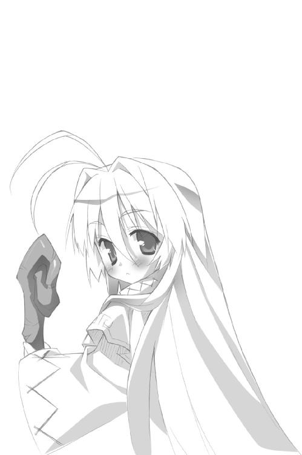
第三章 ようこそ！ 首都トレクロへ！
翌日。後宮の裏手に広がる木立の中。王城を取り囲む城壁のほど近く。
「フンッ！ フンッ！ フンッ！ フンッ！ フンッ！ フンッ！ フンッ！」
二日目を迎えた神来恭太郎は、愛用の朱塗りの木刀で素振りを行っていた。
爽やかな朝の日差しが気合いの入った顔を照らす。汗の滴が微かに光っていた。
朝の素振りは恭太郎の日課としていることだ。姉に命じられて、幼い頃から雨の日も風の日も続けている。
しかし、普段の彼を知るものなら、その姿を見て驚くだろう。あまりにも鬼気迫るようすで素振りを行っていたのである。
「煩悩退散！ 心頭滅却！ 安心立命！ 悪鬼覆滅！ ともかく落ち着け、俺っ！」
呪文のように唱えながら、ブンブンと木刀を振り続ける。
動揺してしまうような出来事が、彼の身に起こったのである。
幸いなことに初日の夜は何事もなく過ぎてくれた。お姫さまの誰かに夜這いでもされるんじゃないかと危惧していた恭太郎にとっては、拍子抜けするほどに平和な夜を迎えることができたのだ。十分とは言えないけれど、少しだけ眠ることもできた。
すっかり油断をしてしまった恭太郎の足下をすくうかのように。
事件は朝食の席で起きた──
×××
不安しか存在しない後宮生活だったが、一点だけ恭太郎を安心させる要素があった。
それは、食事だ。
トレクワーズは空飛ぶ竜が存在するような世界だ。だから、とんでもない食材を使ったゲテモノ料理を食べさせられる可能性も考えていたのだが、
「料理はすごくうまいな」
二〇〇〇人を収容する予定だった施設だけあって、後宮にある食堂は広い。一度に数百人は食事ができそうな広大なテーブルの端に座り、恭太郎は朝食に舌鼓を打つ。
「でしょ？ トレクワーズは《ウィッチェリアの三大料理》に数えられるくらい、ごはんがおいしくて有名だからね。一度だけカルタギアの料理を食べたことがあるけど、あれは食べられたもんじゃなかったよ」
同じテーブルに着いているトビカピバラの少年──アレスタが、肉球のついた手で器用にナイフとフォークを操ってステーキをほおばる。
「うん、うまいっ」
朝食とは思えないくらいにズラリと並んだ豪勢な料理。どれを食べようか迷いつつ、結局オムレツを口に運ぶ。野菜の入ったオムレツはふわふわで。味付けは上品で。
主に和食が中心の生活を送っていた恭太郎だったが、とてもおいしいと思った。
「それにしても朝食にしては量が多いな。かなり重たいメニューが多い気もする。この国の朝メシって、だいたいこんな感じなのか？」
「後宮のごはんは特別なんだよ」フォークを片手にアレスタは「ふしししっ」と笑って、「なんせ王仕は精力をつけなきゃイケナイからね！ 恭太郎もモリモリ食べなよ！」
「なるほど......そういう理由か」
料理はおいしいのだけれど、なんだか微妙な気分になってしまう恭太郎なのだった。
と、朝食がはじまって間もない頃に、後ろから声を掛けられた。
「お口に合いますでしょうか？」
飲んでいたスープを噴きそうになる。
「レイシアっ!?」
「おはようございます、恭太郎さま」
第二王女のレイシアが微笑を浮かべていた。フリルのついた白いエプロンを身に着けている。姫である彼女のエプロン姿なんて奇妙に思えるが、思いの外よく似合っていた。
「本日の朝食は私がお作りしたのです。恭太郎さまに喜んでいただきたくて」
「きみが作ってくれたのか。すごくおいしいよ」
「よかった......。王仕さまがいらっしゃった日のために練習を重ねた甲斐がありました」
「わざわざ練習してくれたのか。なんだか申し訳ないなぁ......って、違う！ 普通に受け答えをしてる場合じゃない！ なんだよ、その格好は!?」
「グッジョブ！ グッジョブですよ、レイシアさまっ！」
瞳を形にして、アレスタは鼻息を荒くする。
レイシアはエプロンを着けていたのだが......その下にドレスを着ていなかった。
いわゆる、《下着エプロン》状態だったのだ!!
レイシアはあり得ないくらいに胸が大きいから、レース地の下着に包まれた柔らかな白い丸みがエプロンのわきから大きくはみ出している。
頬をピンク色に染め、うつむき加減になって王女は答える。
「市井に学んだのです。世の殿方は、このような格好で料理を作って差し上げると『辛抱できないっ』とばかりに襲いかかってきてくださるとのこと......」
「明らかに間違った知識だろ、それは！」
恭太郎のツッコミをスルーし、レイシアは大きな胸の前で手を組み合わせて、ウルウルした瞳で見つめてくる。
「いかがでしょうか？ 私を襲ってはいただけませんか......？」
「辛抱できませーんっ！」
真っ先に籠絡されてしまったアレスタが、レイシアに飛びかかった。
しかし、横合いから空中で長い耳を掴まれてしまう。
「あなたに用はありませんわ、エロカピバラっ！ さっさと出ておいきっ！」
「わっ、エリスさまっ!? って、うぎゃあああああああああ!!」
第三王女のエリスは縦ロールを揺らしつつ、窓に向かってアレスタを放り投げた。
哀れカピバラはガラス窓を突き破り、中庭に立っている木の幹に激突。「もぎゅらばっ!?」というヤバそうな悲鳴をあげる。
エリスはアレスタをこれっぽっちも気遣うことなく、怒鳴り声をあげた。
「レイシアに先を越されるわけには参りませんわっ！」
「エリスっ！ きみまでそんな格好してるのかよ!?」
腰に手を当てて立っているエリス。なんと彼女も《下着エプロン》状態だったのだ。
どこから手に入れたのだろう。フリルのついたレイシアのものと違い、胸の辺りに小さなヒヨコが描かれたシンプルなタイプのエプロンだ。それはそれで可愛いのだけれど......やっぱり目のやり場に困る。困りすぎる！
ちょっぴり頬を染めたエリスは、プイッと横を向いて、
「け、決して真似をしたんじゃありませんわよっ。ましてや、お世継ぎをつくる方法がわからなかったからレイシアの行動を観察したりなんかしてないのですわっ！ 誇り高き私が、そんなことをするはずがないんですのっ！ おわかりっ!?」
「............」
「なにを微妙な顔をなさってるんですのっ？ わかったかと聞いているのですわ！」
「......わかったよ」
「フン、それでいいのです」
真っ赤な顔で恭太郎を指さし、宣戦布告をするみたいに言い放つ。
「さあ、恭太郎！ お、お世継ぎをつくってもよろしくてよっ！ ものすごくイヤですけど、襲われて差し上げますわ！」
エリスはレイシアに比べると胸はかなり小さい。しかし、手足はすんなりと長く、ウエストはしっかりとくびれていて、色っぽい身体付きだ。特に脚線美は見事だった。カタブツな恭太郎の血圧を上昇させるには十分すぎるほどに。
「まあ、エリスも国の未来を本気で憂えているんですのね！」
うれしそうに微笑んだレイシアは、ふんわりとカールした髪と、豊満な胸を揺らしながら駆け寄ってきた。恭太郎の腕に抱きついてくる。
ふにゅにゅん──とてつもなく柔らかい膨らみが二の腕に押しつけられた。
「三人で頑張りましょうっ。力を合わせれば、きっと未来は安泰ですっ」
「そういうわけにはいかないのですわっ！」
エリスも怒鳴りながら駆け寄ってきて、恭太郎のもう片方の腕を抱きしめる。
「私はレイシアよりも早くお世継ぎをつくりたいんですのっ！ 一緒になんてできませんわっ！ ほら、さっさと私を襲うのですわ、恭太郎っ！」
「襲うわけないだろっ！」
「二人同時でもいいではないですか。その方がお世継ぎのできる確率が高まりますし。世の中にはそういった方法もあると資料には書いてありました」
「なに読んでんだよ!?」
「......その資料とやら、タイトルを教えていただけるかしら？ メモしておきますわ」
「興味を持つな！ というか、放してくれッ！」
恭太郎の叫びも空しく、二人は腕を抱きしめて引っ張り合いをしてくる。
ふにゅふにゅ。むにむに。もにゅもにゅ。もにもに。
タイプの違う柔らかな感触が両腕に感じられ、心臓がロデオ状態。
しかも、恭太郎の腕を抱きしめたまま引っ張り合いをしているせいか、二人の着けているエプロンがズレはじめた。
レイシアは大きすぎる胸の間にエプロンが挟まって、レース地に包まれた胸元がほとんど見えてしまう。
エリスの方もピンク色の布地が大きくズレてしまって、レースのふんだんに使われたぱんつの大部分が露出してしまっていた。
「ふ、二人ともっ！ エプロン！ エプロンがズレてるって──っ!!」
「構いませんっ。どうせ後でとってしまうんですからっ」
「俺は構うんだよっ！」
ハダカよりもえっちな格好をした二人に迫られまくって、恭太郎の《興奮ゲージ》が上昇していく。身体の内側に、得体の知れないエネルギーのようなものがマグマのように沸き起こる。煩悩がいよいよ勢力を増し、理性が駆逐されてしまう。
そんな恭太郎に追い打ちを掛けるような事態が発生した。
ズドバーン！ ──そんな擬音をつけたくなるような勢いで食堂の扉が開いたのだ。
「ズルイよ、おねえちゃんたちっ！ メルルもまぜてよぉっ！」
一番年下の王女であるメルルが、ツインテールを揺らしながら走ってくる。
「って、メルルちゃんまで、そんな格好してんのかよっ!?」
彼女も姉たちと同じく下着の上からエプロンを着けた状態で──と、思ったら違った。
「メルルは、おねえちゃんたちよりもダイタンなんだもんねっ！」
「──はうあっ!?」
勢いよく恭太郎の首に抱きついてきたメルルは、なんと下着を着けていなかった。
いわゆる《ハダカエプロン》だったのだ──!!!
白いフリルのついたエプロンの脇からは細っこいカラダのラインが露わになっており、今にもペタンコな胸が見えてしまいそうだ。というか、背中側のリボンみたいな結び目の下では、可愛いおしりが丸見え。
（ダイタンにもほどがあるだろ──っ!?）
加えて、恭太郎の首っ玉にしがみついてぎゅむぎゅむと抱きついてくるのだからたまらない。薄いエプロンの布地を通して、発育途上の柔らかいカラダの感触がダイレクトに伝わってきてしまう。
「おにいちゃんっ！ この格好も可愛いでしょ？ ドキドキしてくれたよねっ!?」
「まあ、メルルも国を憂えているのですね。素晴らしいですっ。私も負けてはいられませんっ。もっと頑張らなくちゃっ！」
真面目な第二王女は自分を鼓舞するように、ぎゅっと拳を握った。
そして、なんと──恭太郎の目の前でエプロンの下につけた下着を脱ぎはじめたのだ。
「ぬわああ!! やめてくれっ!!」
背中に手を回してホックを外し、腕からブラを抜き取る。続けざまにぱんつに手を掛けて、恥ずかしそうにゆっくりと下ろす。するりと床に落ちたぱんつが、足首の辺りでわだかまる。
「あまり見ないでくださいませ......」
羞恥心を堪えつつ、身をよじるレイシア。エプロンの脇から、大きすぎる胸の大部分がのぞいている。少しでもエプロンがずれたら大事な部分が見えてしまいそうだ。
「し、下着も脱ぐんですの......？ うぐぐぐぐ......」
唇を噛んでいたが、負けられないと思ったのだろう。恭太郎に見られないように隠しながら、顔を真っ赤にしつつエリスも下着を脱いでしまった。
ぬおおおおお！ 目前でそんなことをされて、興奮するなって方が無理だって！
恭太郎の理性が白旗を揚げそうになったとき、投入されたものがある。
それは降参を示す白いタオルではなく──ゴゴゴゴゴゴゴゴゴゴゴゴゴゴゴゴゴゴゴ。
微かな地響きと共に登場したのは、お皿のカタチの巨大なベッドであった。
おお、さすが後宮だな。食堂にまでベッドがあるなんて。しかもお皿のカタチとはシャレてるなあ──って、感心してる場合かっ！ このタイミングで出てくるなあ～～っ!!
「まあ、こんなところにもベッドがありましたのね」「フン、ちょうどいいですわっ！ 襲ってもらいますわよ、恭太郎ッ！」「おにいちゃん、ＧＯＧＯだよっ☆」
三人がかりでベッドに押し倒されてしまう。
「恭太郎さま、ふつつか者ではございますが、よろしくお願い致します」
仰向けに横たわる恭太郎の右手側には、レイシアが三つ指をついて陣取る。エプロンの脇から見える横乳の丸みは、相変わらず驚異的な破壊力で理性を揺さぶってくる。
「フン、女王の座につくのも楽ではないですわねっ。こんな男と同衾するなんて！」
左側では立て膝をしたエリスが、恭太郎を蔑むように見下ろしていた。すぐ顔の横に、芸術的な脚線美を誇る太もも。恭太郎の心拍数がカチ上がる。
「えへへ、もう逃がさないよ、おにいちゃん」
メルルは恭太郎のオナカの上に馬乗りになっていた。シャツを通して柔らかいおしりの感触がダイレクトに伝わってくる。しかも、彼女の着けてるエプロンは丈が短いものだっったから、今にも中が見えてしまいそうだ。
三人の美少女が恭太郎の耳元に顔を寄せてきた、それぞれの言葉で声で囁いてくる。
『お世継ぎをつくりましょう...』
それで──完全に勝負がついた。
彼の理性が敗北し、煩悩が頭の中を支配したのだ。
（このまま為すがままにされれば、みんなが救われるんだ......。いいことずくめじゃないか......。しかも、痛いワケじゃない。苦しいワケでもない。気持ちがイイ行為なんだ......。拒む理由なんて一つもないじゃないか......。っていうか、据え膳食わぬは男の恥ともいうぞ......。俺がしようとしてるのはむしろ男らしい行為なんじゃないのか......？）
呪文めいた感じで脳内で言い訳を並べ立てる恭太郎に、照れくさそうに頬を染めたメルルが顔を近づけてくる。
「えへへ......おにいちゃん、次は第二ダンカイだよ......」
（メルルちゃん......キスするつもりかよ......？）
しかし、既に恭太郎の抗う気力は失われていた。
第五王女はそっと瞳を閉じて、甘い声で囁く。
「メルルはもう、コドモじゃないんだから、ね......？」
ゆっくりと近づいてくる桜色の唇を、ただ見つめることしかできない。
吐息の熱さと、高まっていく体温と、甘いような女の子の香りと、押し当てられているカラダの柔らかさと......。
甘やかな刺激の洪水に頭の芯がシビれてる。もうなにも考えられなかった。
恭太郎は、されるがままにメルルの唇を受け入れそうになって──......
そんな状態だったから──それに気付けたのは、ある種の奇蹟だったように思う。
微かに声が聞こえたのだ。
何気なく首を巡らせて、声のした方を向く。
「いいぞいいぞっ！ そのまま最後までヤってしまうのじゃっ！ ＧＯＧＯ☆」
物陰に隠れて、ピコルが小さくガッツポーズをしていた。彼女の近くの壁にレバーがついている。ベッドが急に出現したのは師匠の差し金なのだろう。
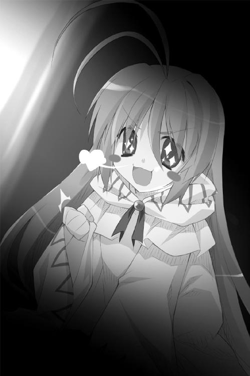
なぜだかわからないが、ピコルの姿を見た途端に世界が現実感を取り戻した。
（──って、なにをしてるんだ、俺は！ 好きでもない女の子とキスなんかしちゃダメだろう!? ましてやそれ以上のコトをしていいハズがないっ!!）
恭太郎は遅まきながら冷静さを取り戻すことができたのである。
二人の唇が触れ合うまさに直前、
「恭太郎おにいちゃん んちゅ～～～～～～っ」
可愛らしく唇を尖らせているメルルの肩を掴んで止めた。
「す、すまんっ！ 勘弁してくれ──っ！」
×××
恭太郎は一目散に食堂から逃げ出し、裏手にある木立の中に駆け込んだ。
そして、猛烈な勢いで素振りをはじめたというわけである。
「フンッ！ フンッ！ フンッ！ フンッ！ フンッ！ フンッ！ フ──ンッ！」
一〇〇〇本の素振りを終えた恭太郎は額に浮かぶ汗を拭った。
木刀を袋に入れて腰に戻し、巨木の根元にしゃがみ込む。
一心不乱に素振りに取り組んだ甲斐あって、なんとか落ち着くことができたが──
「はあああああああああああああああああああああああああああああああああ......」
肺の中の空気を全て絞り出すような勢いでため息を吐いた。
「修行が足りないというかなんというか......いろいろな意味で情けないな、俺は......」
セクシーな姿の王女たちに迫られ、一時は完全に我を忘れてしまった。
メルルのキスを受け入れそうになってしまったのだ。
「嗚呼、俺は最悪な男だ......。今すぐハラを切るべきだ......。はあああああああ......」
もう一度、深いため息を吐いた──そのときだ。
下草を踏む微かな音が聞こえた。辺りを窺いながら、誰かが城壁に近づいていく。
忍び足で歩いているのはユフィナだった。ドレスではなくシャツ＆ミニスカートという庶民の普段着っぽい動きやすそうな服装。しかも、似合わない眼鏡を掛けている。いつもと同じなのは、ポニーテールを結わえている大きなリボンだけだ。
妹たちとキスをしそうになった直後だ。姉である彼女と顔を合わせるのは気まずい。
気付かれる前に立ち去ろうと思ったのであるが──
「きょ、恭太郎っ!? そんなとこでなにしてんのよっ！」
「よ、よう、ユフィナ。俺はその......そ、そうだ。剣の素振りをしに来たんだよ。きみこそ、こんなとこでなにしてるんだ？」
「わ、私は散歩でもしようかなーと思って！ 今日はいい天気だし、あはは！」
笑いながらユフィナは......周囲を見回す。散歩するには似つかわしくない場所だ。誤魔化すのは無理だと悟ったのだろう。王女はペロッと舌を出して、
「......実はさ、ちょっとお城の外に出ようと思ったのよ。みんなにはナイショでね」
「出るって......こんな場所からか？ 城の入り口は反対側だろ？」
「お城には秘密の出口ってのがいくつかあるのよ。警備上の極秘事項になってて、近衛騎士団員の一部にしか存在が知られてないようなヤツがね」
日本の城にも、有事の際の脱出口が設けられていたと聞いたことがある。
ユフィナは城壁近くの落ち葉を掻き分けた。苔の色に偽装された扉が現れた。頑丈そうな鍵を差し込んで開くと、向こう側には地下通路が続いている。
腰に手を当てて、第一王女は恭太郎を睨み付けてきた。
「いい？ これは王女の公務じゃなくて、いわゆる《お忍び》なの。今の時間、私は騎士団で教練に参加してることになってるわ。私が抜け出したこと誰にも言っちゃダメだからね！ バラしたらぶっ飛ばすわよ！」
「告げ口なんかしないさ。勝手に行けばいいだろ。俺には関係ない」
「って、ちょっと！ なんでいちいち突っかかって来るのよ!? 王女への敬意ってものが足りないんじゃない？」
「突っかかって来るのはそっちだろう？ 敬意を払って欲しいなら尊敬できるような行動を取ってから言えよ」
「ナマイキなヤツね、あんたって！ 王仕ってのはもっと王女にかしずくものよ!?」
腹立たしげにユフィナは恭太郎を睨んでいたけれど、ふいに訝しげに眉を顰めた。
「あんたさあ......」
「......俺が、どうかしたか？」
「......ううん。なんでもない」首を横に振ったが、相変わらず妙な視線を向けてくる。と、突然、ユフィナは恭太郎の手首を掴んできた。
「よし、決めた！ 恭太郎も一緒に来なさい！ 共犯にしてやるわ！」
「はあっ!?」
「あんたなんか信じられないのよ。告げ口されるぐらいなら、一緒に連れて行っちゃった方がマシだわ！」
「ちょっと待てよ！ バラしたりしないって言ってるだろ!?」
「いいから来るのっ！ 王女の命令には絶対服従って聞かされたでしょ？」
「城の外には出るなとも聞いたんだけどな」
「王女の許しがあれば外出も可能なのよ！ ほら、さっさとするっ！」
×××
トレクワーズ王国のあるウィッチェリア大陸は、いわゆる《剣と魔法》の世界だ。
後宮やお城のようすしか知らないので、恭太郎は国中が中世ヨーロッパ的な文化レベルであると思いこんでいたのだが──
「まさか、列車が走ってるとはな......」
王城にほど近い《トレクワーズ王城》駅。ホームに滑り込んでくる純白に塗られた美しい車両を眺めて、驚嘆の声を漏らしてしまった。
「どう？ すごいでしょ？ これは《魔法列車》っていうのよ」
自慢げな表情を浮かべて、ユフィナは我がことのように胸を張る。
先頭車両には青い液体が満たされた半球形のドームがついており、内部には女の子が浮かんでいた。少女の周囲には魔法陣が輝いている。きっとあの少女が動力源となる魔法を使っているのだろう。
「てっきり馬にでも乗っていくのかと思ってたよ」
「あんた、馬に乗れるの？ 男なのに？」
「ああ。乗り方を無理矢理に覚えさせられたんだ」
姉上が『馬を乗りこなせるのも神来家の嫡男として当然です！』とか言い出して、嫌がる俺を馬の背に縛り付け──って、トラウマの扉が開いてしまいそうだから、それ以上想い出すのはやめておこう。
「まもなく発車しまーす！」
制服を着た女性がプラットホームに顔を出して声を張り上げた。
「ほら、ボーっとしてないで。早く乗るわよ」
ユフィナに促され、三等客車に乗り込む。車内は木造。装飾のない質素な作りだ。
空いている席を見つけ、二人で並んで座った。
キョロキョロしている恭太郎を見て、ユフィナはうれしそうに笑う。
「この魔法列車は去年完成したの。トレクワーズの新しい名物になってるのよ。他の国にだって、あんまり走ってないんだからっ」
列車が走り出した。揺れも少なく乗り心地は悪くない。
「へえ、他国よりも、トレクワーズは技術が進んでるのか？」
「ううん。この列車自体は魔法技術が進んでるトリスティアっていう友好国から買ったものなの。ウチの国は小さいけど、そこそこ経済的に余裕があるのよ」
彼女の言葉を裏付けるように、車窓を流れていく景色は賑やかだった。白い壁に赤い屋根の家々がたくさん並んでいるのに加えて、背の高いビルのような建物も建っている。
空には人や荷物を載せた飛竜が飛び交い、線路沿いの道には馬車や見たこともないカタチの乗り物が列をなしていた。まさしく、魔法の栄えた都市といった風情だ。
「トレクワーズには軍隊がないって話は聞いたでしょ？ 軍備に国力を割かないで済んでるの。市民の負担も減るから経済がかっせーかして、えーっと、うん。そんな感じで、とにかくすごいのよ！ だから、魔法列車も導入できたってワケ！」
説明を途中で諦めたユフィナは、ぺろっと舌を出し「詳しいことはレイシアに聞いて」と付け加えた。どうやらユフィナは財政には疎いようだ。
彼女の話によれば、魔法列車は二〇〇万人もの人が住んでいるトレクワーズの首都トレクロを時計回りに循環するように数本が走っているらしい。
《トレクワーズ王城》駅から六つほど先の《女神聖教会》駅で二人は降りる。
改札を出た恭太郎は、またもや驚いてしまった。
新築の建物が並ぶ真新しい街並み。楽しげな笛の音と歌声。そこかしこで踊っている人々。舞い散る紙吹雪。青空を飛んでいく色とりどりの風船。通りには屋台が並んでおり、おいしそうな匂いが漂ってくる。白い花で飾られた横断幕には《ファルラッサに光あれ！》と書かれていた。
街の中心には──あれが《女神聖教会》なのだろうか？ ──剣のような鐘楼を持つ、絢爛な建造物が建っていた。
周囲の人に注目されたくないからだろうか、小声でユフィナが教えてくれる。
「ここは首都の南にあるファルレの町よ。今日は、四大祝祭の一つ《ファルラッサ大祭》なの。お祭りの日なのよ！」
「へえ、だから、こんなに賑やかなんだな。すごい熱気だ」
「って、恭太郎、声が大きいわよ。私がいることが知られたら騒動になっちゃうわ」
彼女は国民に絶大な人気を誇っているようだ。ユフィナがいることを知られたら、パニックになりかねない。
声を落として、「すまん」と謝る。
「これから気をつけてくれればいいわ。せっかくのお祭りだもん。楽しみましょっ」
ユフィナは今にも駆け出してしまいそうだった。ダテ眼鏡の下の瞳がキラキラしてる。
「......なるほど。お忍びで外出したのは、祭りに来たかったからなんだな」
「ちょっと、失礼なこと言わないでっ。これはあくまで視察よ。市民生活を知るのも王女としての──ああー！ チョココロネ売ってるっ！ 私、アレ大好きなのー！」
瞳を形にして駆けていってしまった。
「やれやれ。どこが視察なんだか......」
苦笑しつつ、恭太郎も後を追う。
活気に溢れる祭りの中でも、ユフィナは一際元気いっぱいだった。
満面の笑みを浮かべ、人混みを掻き分けすり抜け屋台を回っている。お祭りの雰囲気が好きなのだろう。正体がバレないように気をつけながらも、ココロの底から楽しんでいるように見えた。
屋台を切り盛りする女性たちは気のいい人ばかりで「お嬢ちゃんかわいいからマケてあげるよ！」「ほらよ、大盛りだっ！」なんて感じで、いろいろサービスしてくれた。お国柄なのか女性の方が豪快で、店主がオジサンの場合は毎度のごとく「オマケしてあげるけど、アイツにはナイショだよ？」「コラ、アンタ！ なに勝手なコトしてんだいっ！」というやり取りが繰り広げられるのが興味深い。
と、抱えきれないくらいに食べ物を買ったあとで、ユフィナは恭太郎を振り返って、
「あんたもなんか欲しいものあったら買ってあげるわよ。お金持ってないでしょ？」
「いや、俺はいいよ。腹は減ってな──」
ぐぅぅぅぅ。セリフの途中で腹が鳴った。そういえば食事の途中でエプロン姿のレイシアが出てきたから、朝食はそれきりになってしまったんだっけ......。
ユフィナはぷっと噴き出して、かわいらしいガマ口を取り出した。王女の持ち物とは思えないが、妙に彼女には似合っている。
「王仕に飢え死にされちゃ困るから、なにか買ってあげるわ。騎士団のお給料ってそんなに多くないから、あんまり無駄遣いはできないけどねっ」
不思議に思って、周りの人に聞こえないよう小声で尋ねてみる。
「姫なんだから、いくらでも使えるんじゃないのか？」
「まあ、しようと思えば贅沢もできるけど......私はイヤなのよ、そういうの。自分で使うぶんは自分でちゃんと稼ぎたいの。その方が、おやつもおいしいしねっ」
抱えている紙袋から焼き菓子を一つ取り出して口に放り込んだ。「んー、おいしっ！」と拳を握って全身でおいしさを表現する。
その話を聞いたあとでは躊躇われたけれど......腹が鳴るのも恥ずかしいのでそば粉を使ったクレープを一つ買ってもらった。礼を言ったら、フフンと鼻を鳴らす。
「もっと感謝しなさい。......よしっ、あそこで食べましょ」
二人でカフェテラスのテーブルについた。祭り客用に開放されているようだ。女性たちが酒を酌み交わし、子どもたちがお祭りのシンボルである、白い花を髪に飾って遊んでいる。誰もが陽気さに満ちあふれていた。
そんなようすを楽しそうに眺めつつ、ユフィナも買ったものをテーブルに並べはじめる。
「って、おいおいおい！ そんなに食べきれるのか？」
テーブルが埋まるほどの量だった。しかも、飴だのパイだのケーキだの、甘そうなものばかり買ったようだ。大好物だと言っていたチョココロネに至っては、ちょっとした山をなしている。漂う甘い香りだけで、胸焼けがしそうだ。
しかし、恭太郎の心配もどこ吹く風。
「いただきますっ。んーっ、おいしいっ！ 焼きたてのチョココロネに敵う食べ物はないと思うのよ！ 熱々のパンとクリーミーなチョコのハーモニー！ このカタチも最高！」
幸せそうな笑顔を浮かべつつ──はむはむはむはむはむっ。
口いっぱいに頬張って、元気に噛みしめて、そのたびに全身でおいしさを表現して。大量のお菓子を平らげていく。どうやらユフィナは超がつくほどの甘党で、しかもかなりの健啖家のようだ。
恭太郎は思わず、食べるのも忘れて見惚れてしまった。
食べっぷりの良さもさることながら......ユフィナの幸せそうな笑顔は、あまりにもかわいかったのだ。笑みが自分に向けられているわけではないのに、ドキドキしてしまう。
（なんというか、これってデートみたいだよな......）
「んー、おいしかった！」
「......あ、え？ もう食べ終わったのか？」
「あれ？ 恭太郎はまだ食べてないの？」
食べるのも忘れてユフィナの笑顔に見惚れていたと知られたくなかった。だから、ついつい言わなくてもいいことを言ってしまう。
「ユフィナって、大食らいなんだな。びっくりしたよ」
「あんたが食べるの遅すぎなのよ。スケベな上にノロマなんて最低よね」
「うるさいなっ」声を抑えながら、さらに怒鳴ってしまう。
「俺は、そんなに食べたら太るって警告してやってるだけだろ」
「残念でした。騎士団の訓練でちゃんと動いてるし、魔法も使ってるから太らないのよ」
なんでも魔法ってのはかなりの体力を消費するものらしい。
しかし、ユフィナはちょっぴり眉を顰めて、
「でも、最近、一部分だけ太り気味なのよね。邪魔だから、あんまり大きくなってもらっても困るんだけど......」
ユフィナの視線は胸元に注がれていた。他の部分は太らないけど、胸は成長中ってコトかよ......。彼女の下着姿を想い出してしまって、顔に血が上ってしまう。
「って、なに顔を赤くしてんのよ！ ヘンなコト考えたんでしょ!?」
「ち、違うって！ というか、妙なコト言い出したきみが悪いんだろ!?」
と、そんなくだらないケンカが始まろうとしたときだ。
「お取り込み中、失礼いたしますわ」
ユフィナの背後から声が掛けられた。
白いドレスに身を包んだ美女が、上品な笑みを浮かべていた。年齢は二〇代後半くらいだろう。驚くほど肌が白く、かなり胸が大きい。開いた胸元から深い谷間が覗いている。グラスを伏せたようなカタチのスカートや結い上げた髪から、中世ヨーロッパの貴族の女性はこんな感じだったんじゃないか、となんとなく思った。
「ごめんね、恭太郎。食べながら待ってて」
白い日傘をクルクル回しながら歩いていく女性の後を追って、ユフィナは人混みへと消えていく。雑踏の中、二人はなにやら言葉を交わしていた。
時間にして五分ほどそうしていただろうか。
日傘の女性と別れ、テーブルへと戻ったユフィナの表情は沈んでいるように見えた。
「誰なんだ、さっきの？ どうかしたのか？」
「あの人はデボラさんって言って、情報屋なの」
「情報屋......？ そうは見えないけどな......」
「でも、スゴ腕なのよ。王城にいたら聞こえてこない市民の間に流れるウワサをいろいろ教えてくれるんだから」
「ふうん。で、なんで暗い顔してるんだ？ なにか悪い噂でもあったのか」
「ううん。街は至って平和よ。『帝国のスパイが国内に侵入した』ってウワサがあるらしいけど、そんなのはいつものコトだしね」
「じゃあ、どうして......？」
ほんの少しだけユフィナは悲しげに目を伏せた。明るく笑ってるか、そうでなければ怒っているか。そんな顔しか見たことがなかったからドキッとしてしまう。
「デボラさんには情報収集のついでに人捜しをしてもらってるの。でも、そっちの方はうまくいってないみたいで......」
「人捜しって......？」
「ま、いいのよ。気にしないで！ こっちの話だから！」
ユフィナは気分を切り替えるように手を叩いた──そのとき。
「きゃああああ！ 泥棒ッ!! 誰か捕まえて！」
突如、人混みの中から悲鳴が聞こえてきた。
「おら、どけェ!!」
道行く人々を突き飛ばし、地鳴りのような野太い恫喝を発しながら、ローブを着た男が走ってくる。右手には、強奪した大きな革袋。左手には鉈のような蛮刀。
悲鳴を上げて、祭りの客たちが逃げまどう。
「逃がさないよ！ 【雷撃】！」
屋台を切り盛りしているお姉さんが、魔法を放った。
青白い雷撃が男を直撃する。
だが、男は怯んだようすもなかった。ローブのフードから顔をのぞかせ、吼えるように怒鳴る。
「効くか、そんなもの！」
男の顔を見て、悲鳴がさらに大きくなった。
鰐のような鱗に覆われていたのだ。
「危ないぞ！」「逃げろ！」「誰か、自警団呼んできてー！」
ユフィナが訝しげに眉を顰めながら、立ち上がろうとする。
「ウェア・リザード......？ どうやってトレクワーズに入ってきたのよ、まったく......。お祭りを台無しにするようなヤツは絶対に許さないわ」
そのようすを見ていた恭太郎は、うむと一つ頷いた。肩に手を置いて、王女を制する。
「......待て。俺がやる」
「って、ちょっと、恭太郎！ なに言ってんのよ？ あんたに敵うわけないじゃない！ ウェア・リザードは鱗が固くて、」
「いいから。きみは黙って見ててくれ。絶対に手出しするなよ」
返事を待たずに、恭太郎は突進して来るトカゲ男の前に立ちはだかった。腰に下げていた繻子の袋から、朱塗りの木刀を抜き放つ。
「どけぇ、クソガキぃ!!」
トカゲ男が蛮刀を振り上げて怒鳴る。
「兄ちゃん、逃げな！」「魔法も使えない男がなにしてんだいっ！」
周囲の女性たちが、恭太郎を心配して声を掛けてきた。
（この世界じゃ、ホントに男は信用がないんだな......）
小さく肩を竦めつつ、恭太郎は腰を落とす。
「望み通り、ぶっ殺してやるぁ！」
振り下ろされる蛮刀！
迫り来るトカゲ男を睨み付け、
「神来流剣術・二の太刀──」
石畳を蹴った。
恭太郎と凶賊が交錯する、刹那。
「──瞬影!!」
すり抜けざまに、木刀で一度に三発の打撃を放つ。
姉のつけた技の名前は恥ずかしいが、威力は確かだ。
一瞬の沈黙の後──ゆらり、と。トカゲ男の身体が揺らいだ。
「ぐお......」
微かなうめき声をあげて、石畳の上に倒れ伏す。
木刀を腰に戻しつつ、恭太郎は独りごちる。
「ふむ。ワニの大群と戦ったときの方が、まだ大変だったな」
姉上が『神来家の嫡子たるもの、ワニの群れと戦っても勝利せねばなりません！』とか言い出して、嫌がる俺をワニ園の檻の中に放り込み──って、それ以上想い出すのはやめておこう。忘れたい記憶の一つだ。
なにが起こったのかわからないとでも言いたげな表情で、見物人たちは呆然としていた。
だが、やがて拍手と歓声が沸き起こる。
「すごいね、兄ちゃん！ 感動したよ！」「勇気があるのね～」「カタくて有名なウェア・リザードを倒すなんて！」「やるね、きみ！」「こんなに強い男の人、初めてみたー！」「剣が速すぎて見えなかったわ！」「木刀が光ったように見えたけど......まさか、魔法!?」
あっという間に、女性たちに取り囲まれてしまう。どうやら、男が戦うということ自体が珍しいようだ。うっとりとした視線を恭太郎に向けてくる。
「もしお一人でしたら、私とお祭りを回りませんか？」「なに抜け駆けしてるのよっ！ あたしと一緒に行きましょ！」
お祭りの衣装なのだろうか。白いドレスで着飾った少女たちが恭太郎の袖口を引っ張ってくる。この世界では、女性の方が積極的なのかもしれない。
「あ、いや、ちょっと待ってくれ......」
そもそも、女の子に取り囲まれるという状況にはなれていないのだ。
断り切れずに、少女たちに引っ張っていかれそうになったとき──ぐいいっ。
「痛たたたたたたたっ!?」
後ろから思い切り耳を引っ張られた。ユフィナがムスッとした表情で睨み付けてくる。
「なにデレデレしてんのよ、恭太郎。さっさとこっち来なさいっ」
「なあんだ、相手がいたのね」「ん～、残念♪」
ユフィナの姿を見て、女の子たちはようやく解放してくれた。
恭太郎の耳を引っ張り、王女はずんずん歩いていく。
人混みから離れ路地を曲がったところで、ようやくユフィナは手を放した。怒ったように眉を吊り上げ、恭太郎を睨み付けてくる。
「......なに怒ってるんだ」
「怒るに決まってるでしょう？ ウェア・リザードは危険な種族なの！ 野蛮だし！ 魔法も打撃も効きづらいし！」
「倒せたんだから、いいじゃないか」
「よくないっ！ ゼンゼンよくないわっ！ いくら腕に覚えがあっても、あんたは戦っちゃダメなの！ 恭太郎にもしものことがあったら、みんなが困るのよ!? それなのに、なんであんなことしたわけ!?」
「なんでって......」
「フン、おおかたスケベな恭太郎のコトだから、いいとこを見せてモテようとしたんでしょ？ さっきだって女の子に囲まれてデレデレしてたし！」
「そんなことは考えてない。そもそもデレデレなんてしてないだろ」
「だったら、どうしてあんな危険なマネをしたのよ!? 私ならウェア・リザードぐらい簡単に......」
「きみが、あのトカゲ男を止めようとしたら......きっと魔法を使うことになるだろ」
「当然じゃない。魔法で一撃よ！」
「そうしたら、王女さまだってバレるじゃないか。ユフィナの魔法は派手だからな」
「......あっ」
「せっかく遊びに来たんだ。これで終わりじゃつまらないだろう？ だから、俺がやらせてもらった。女とは戦うなって言われてるが、相手は男だったし......勘弁してくれよ」
ユフィナは驚いたように唇をあゎあゎさせていたけれど、
「余計なお世話なのよっ」
鼻を鳴らしてそっぽを向いた。
「......でも、今回だけは許してあげるわ。これからは勝手なマネしちゃダメよ。私の命令にはちゃんと従いなさいっ！」
「ああ、わかったよ」
「ふんっ......」
恭太郎を横目で睨みつつ、ユフィナは聞こえないくらいの小さな声で呟いた。
「いちお、言っておくわ......。その............ありがと」
「ん？ なんだって？ よく聞こえなかった」
「な......なんでもないわよ！ いちいち聞き返さないでっ！」
怒鳴り声をあげたユフィナの頬は、どことなく赤くなっていた。すぐに踵を返してしまったから、よく見えなかったけれど。
「そんなことより、いろいろ見て回りましょ！ せっかくのお祭りだもん、楽しまなきゃ！ 屋台もまだまだ回りたいし！ あ、広場の方にサーカスが来てるらしいわよ！」
恭太郎を置いて、王女は小走りに駆けていってしまう。
やれやれと肩を竦めながら、恭太郎も後を追った。
その後も、恭太郎はユフィナにたっぷりと振り回されてしまった。
お祭りをめいっぱい楽しもうとするみたいに、彼女はお祭りに沸き立つファルレの街を駆けめぐった。
きれいなガラス細工の屋台を見かけては瞳を輝かせ、ペットショップの軒先でトビカピバラの赤ちゃんを見かけて「かわいー」と絶叫し、「みんなにおみやげ買っていかなきゃ！ なにがいいかなー？」とお店の前で小一時間煩悶し。
王女さまであることがバレてしまうのではないかとハラハラしてしまう恭太郎だったが、彼の心配などどこ吹く風。お忍びだってことを忘れてるんじゃないかと思うくらいに、ユフィナははしゃぎまくったのだ。
二人でファルラッサ大祭を回っている間に、いくつかの発見があった。
「恭太郎、アレで勝負しましょ！」
不思議な青い色の魚をパイ生地でできたスプーンですくい上げる──日本のお祭りで言うところの《金魚すくい》みたいなゲームの屋台で、ユフィナが勝負を挑んできた。金魚すくいなら、恭太郎も幼い頃、神社の縁日でやったことがある。
ユフィナの挑戦を受けて立ったのだが......勝負にならなかった。
「ああー、破れたー！ なによ、これ！ ゼンゼンダメじゃないっ！」
ユフィナは、かなり不器用だったのだ。ちまちました作業は苦手らしい。
それに加えて、超がつくほどの負けず嫌いだった。
「悔しいっ！ おばさん、もう一回！」
「って、何回目だよ!? いいかげん諦めたら......」
「うるさいわねっ！ ここにいる魚、全部捕まえるまでやめないわよ！ 恭太郎に負けたままなんて許せないもん！」
結局、一〇回以上挑戦して、彼女は一匹も魚を捕まえることができなかった。
ふてくされて頬を膨らませるユフィナがおかしくて思わず噴き出したら、「笑うな、無礼者っ！」と殴られてしまった。
それから、もう一つ。
ユフィナはお節介焼きで、そのうえそそっかしい女の子だった。
それは、サーカスがテントを張っている公園での出来事だ。
幼い女の子が泣きじゃくっていた。頭上の木の枝には、赤い風船が引っかかっている。
事態を理解したユフィナは、辺りをキョロキョロと見回して人波が途切れたのを確認するや──
「【浮揚】」
小声で呪文を唱えた。彼女の身体が宙に浮かび上がる。
「よっ、と」
枝に掛かっていた風船を手に取り、ユフィナはゆっくりと少女の前に降り立つ。
風船を渡して、目を丸くしている女の子の髪を優しく撫でた。
「はい。ちゃんと持ってなきゃダメよ？」
「あ、ありがとう、おねーちゃん......。れびてーしょんがつかえるなんて、すごいんだね。まるで王女さまみたい......」
「あ、あはは、それほどでもないわよ」
「てゆーか、おねーちゃん......ユフィナさまソックリだね。あ、あれ？ ほんもの!?」
「ち、ちち、違うわよ！ 他人のそら似っていうか、うん！ とにかく、違うの！」
少女の言葉を聞き、辺りが瞬く間に騒がしくなった。
「なに？ ユフィナさまだって!?」「姫さまがいるのか！」「お祭りにいらっしゃったのか！」「どこだどこだ！」「ぜひサインをください！」「握手してくださいっ！」「御髪をいただけたら家宝にします！」
「やばっ！ 恭太郎、逃げるわよ！」
結局、大慌てで公園から逃げる羽目に陥ったのである。
人気のない路地裏に逃げ込んだ二人は、顔を見合わせて笑ってしまった。
「なに笑ってんのよ、恭太郎」
「あんなにバレないように気をつけろって言ってたのに、結局見つかっちゃったじゃないか。意外とドジなんだな」
「うっさいわね！ これでも才色兼備で、おしとやかで、上品で......そりゃもう最高のお姫さまだって、国民にだって大人気なんだからっ！ 失礼なこと言わないで！」
「うまいことみんなを騙してるんだな」
「そうそう。ボロが出ないように、みんなの前に出るときは必死なのよねー......って、なに言わせるのよっ！ 笑うなー！」
「っていうか、きみだって、笑ってるだろ」
「だって、あんた、すごい顔して走ってたんだもん。思い出したら、おかしくて！」
「人の顔を指さして笑うなよっ」
恭太郎は怒鳴り返したが、ユフィナはまだクスクス笑ってる。
（おてんばなお姫さまのお供をするのもラクじゃないな......）
そんな風に内心で独りごちたけれど──なぜだろう。決して、嫌な気分ではなかった。
そして、同時に気付く。
（トレクワーズ王国にやってきて、腹の底から笑ったのは、これが初めてだな......）
夕刻。魔法列車の中。祭りの客でごった返す車両。
「はあ、すっごく楽しかったわね......」
「そうだな。特に山車はすごかった。驚いたよ」
混雑した車内でつり革にぶら下がるように立っているユフィナに、恭太郎は興奮気味に話しかける。
「あんなにデカイ人形が自立して歩くとは思ってなかった。うん。感動した。俺がいた国にも、いろいろな種類の祭りの山車があったんだが、あんなのは見たことがないよ」
恭太郎とは対照的に、すっかり遊び疲れてしまったようすのユフィナは、列車の揺れに合わせるようにうんうんと頷いた。
「私も初めて見たときは感動したわ......」
ダテ眼鏡の下の眠そうな目をこすりつつ、ユフィナは恭太郎の顔を見上げて微笑む。
「喜んでくれたみたいでよかった。連れてった甲斐があったわね......。恭太郎も少しは元気が出たみたいだし......」
「......え？」
「後宮の裏庭で見かけたとき、あんたすっごくツラそうな顔してたのよ......。ふゎ～う」
眠そうにあくびをかみ殺したユフィナの顔を、思わず見つめてしまう。
確かに今朝方の恭太郎は絶望していたといっても過言ではない。
だけど、あのときの沈んだ気分は今はもう霧散していた。
（口止めしたいからなんて言ってたけど、あれはウソだったのか......。ユフィナは俺のことを気遣って遊びに連れ出してくれたんだな......）
ユフィナは恭太郎を見上げて続ける。
「この国も悪くないでしょ？ にぎやかで活気に溢れてて......、みんな優しくて......、食べ物もおいしくて......。特にチョココロネのおいしさは大陸全土に響き渡るわよ......」
車窓から飛び込む夕日が、王女の顔を照らす。ユフィナは幸せそうに微笑んで、
「レイシアもエリスも、アルトもメルルも、そして私も......トレクワーズが大好きなの。だから、みんな王女として頑張ってるのよ......。私たちの都合で勝手に喚び出しといて、こんなこと言うのもどうかと思うけど......恭太郎にもトレクワーズを好きになって欲しいわ......。すごく......イイところだから......」
うつらうつらし始めたユフィナは、前に立つ恭太郎の胸に軽く頭をぶつけた。
「あ、ごめん......。昨日、徹夜したせいかすごく眠くて......」
「どうして徹夜なんかしたんだよ」
「今日一日お休みにするために、頑張って、仕事を......片づけ、て......」
ぽすんっ──恭太郎の胸に寄りかかり、立ったまま寝息を立て始めてしまった。
「お、おい......！」
女の子と寄り添っているなんて、いろいろとマズイ。揺り起こそうと思ったけれど......恭太郎はその手を止めた。
王女や騎士団団長としての仕事が、どういったものなのかはわからない。
しかし、大きな責任が伴うであろうことは想像がつく。同い年の少女が担うにはかなりの重圧だろう。
仕方ない。このまま少し休ませてあげよう。姉上だって許してくれるはずだ。
それにしても──無駄打ちをはじめた心臓に静まれと命じながら、恭太郎は思う。
俺はユフィナを誤解していたのかもしれないな......。
怒りっぽくて暴力的で粗雑で乱暴な王女だとばかり思っていた。
だけど、実はお節介焼きで優しい女の子なんだ。
加えて不器用でそそっかしいところもあるけれど、かなりの頑張り屋だ。
王女としての責務を果たそうとしてるし、国民のことだってちゃんと考えてる。
実は、すごくイイヤツなのかもしれないな......。
「くぅぅぅ......すぅぅぅぅ......」
恭太郎の胸に頬を押しつけるようにして、器用に立ったまま可愛らしい寝息を立てているユフィナを見下ろす。
車窓から飛び込む夕日が、王女の顔を照らしている。
まつげが長い。肌も透き通るように白くてすべすべ。信じられないくらいに整った顔立ちをしてる。
怒った表情ばかり見てる気がするけど......やっぱりユフィナはとびきりの美少女だ。
（黙ってれば、可愛いんだけどな......）
って、なにを考えてるんだ、俺は。
頬を押しつけられている胸の辺りに、全身の神経が集まってしまった気分だ。
なぜだか、鼓動が高鳴ってくる。
ドキドキという音が彼女に聞こえてしまいそうな気がして、余計に顔が熱くなった。
（早く駅についてくれ！）
恭太郎の理性が、叫んでいる。
般若のような顔をした姉が、車窓の外に張り付いて恭太郎を睨み付けてる気がする。今にも、伝家の宝刀で斬りつけられる錯覚に苛まれる。
だけど──
「あ、ごめんね。眠っちゃってたわ」
列車がトレクワーズ王城駅に到着し、ユフィナが恭太郎から離れたとき。
ほんの少しだけ寂しいような気がしたのは、どうしてなんだろう......？
恭太郎には、よくわからなかった。
ピコルの穴！ 出張版
ピコル（以下、ピ）「それいけ第三回！ ピコル師匠プレゼンツ☆ハーレム講座！ 題してピコルの穴！ またまた開催じゃーっ！」
アレスタ（以下、ア）「よろしくお願いしまーす！ で、今回はなにを教えてくれるんですか？ できたら、えっちぃことがうれしいでーす！」
ピ「うむ。今回は後宮の王仕さまについて教えてやるのじゃ！」
ア「あ、それはちょっと興味あります。僕もトビカピバラにされちゃう前は、いちお王仕だったし！」
ピ「まず、王仕というのは、後宮に入れられるためにトレクワーズ全土から集められた魔力の強い少年たちのことを指すのじゃ」
ア「後宮が作られることが決まると、全国で一斉に魔力試験をやるんですよね。僕も受けましたよ」
ピ「うむ。一二歳から一九歳までの男子は一人残らず試験を受けさせるのじゃ」
ア「なんで、その年齢なんです？」
ピ「その年齢のときが、一番魔力が高まるんじゃよ。二〇を超えると、若干魔力が落ちてしまうのじゃ。一生消えることはないがな」
ア「なるほどー」
ピ「ちなみに、後宮入りは名誉なことじゃから、試験の実施が決まれば大抵の少年たちはすすんで受けに来るものじゃ。だが、中には恋人がいるからと言って試験を忌避するものもおる」
ア「僕の友達にもカノジョがいるから、試験受けないって言ってるヤツがいましたよ。結局、アイツ、どうなったんだろ？」
ピ「言ったじゃろう。一人残らず試験を受けさせるのじゃ。どこへ逃げようとも、草の根わけても見つけ出すのじゃ！」
ア「なんか、すごいなあ......」
ピ「当然のことじゃ。国家の命運がかかった一大プロジェクトじゃからな」
ア「ところで、不思議に思ってたんですけど......」
ピ「なんじゃ？」
ア「王家の人たちって魔力が高いですよね？ 王族の男の子が王仕になれば、一番いいんじゃないですか？」
ピ「残念ながら、それは無理じゃ。トレクワーズの王族は、女児しか生まれぬのじゃよ」
ア「へえ、そうだったんだ！」
ピ「だから、国中から男子を集めるのじゃよ。では、説明を続けるぞ。試験によって選び出された男子は訓練所で礼儀作法などを学ばせ、女神聖教会で洗礼を受け──晴れて後宮入りとなるのじゃ！」
ア「訓練所の成績も踏まえた上で王仕順位が決められるんですよね。僕は三位だったのに......惜しいことしたなあ」
ピ「三位でもお姫さまと結ばれるとは限らぬのじゃ。後宮は厳しい世界じゃからのう」
ア「え？ そうなんですか？」
ピ「表向きは歌舞音曲を嗜んだり、勉学に励んだり、剣技の稽古をしたりして男っぷりを磨きながら、姫さまの誘いを待つこととなっておる。じゃが、実際は激しい権力闘争が待っておるのじゃよ」
ア「あわわわわわわ......」
ピ「私闘は禁じられておるが、事故に見せかけて殺されてしまった王仕もおるのじゃ！」
ア「あわわわわわわわわわわわ......。恐ろしいところですね、後宮って......」
ピ「姫さまと結ばれれば将来は安泰じゃからのう。王仕たちはみな見初められようと必死になるのじゃよ」
ア「お姫さまと見事結ばれたらどうなるんですか？」
ピ「後宮は解体されるのじゃ。結ばれなかった王仕たちは家へと戻され、普通の生活を送ることとなる。元王仕という肩書きは魔力の高さの証明じゃ。後宮を出ても引く手あまたのようじゃの。魔力の強い跡継ぎが欲しいという者たちは多いからのう」
ア「へえ、モテモテなんだ。それじゃ、僕も......ふしししし！」
ピ「ちなみに、王女と結ばれ、見事お世継ぎをつくった王仕は、王族の別荘である『アルデリア宮』という王宮とは別の宮殿で過ごすことになる。優雅な生活を約束されるのじゃ」
ア「ってことは、ユフィナさまたちのお父さんもそこにいるんですね。どんな人なんだろうなあ？」
ピ「......んー、まあ、その話についてはおいおい説明してやるのじゃ」
ア「......あれ？ なんか、言葉を濁してますね......あやしい......」
ピ「気にするでないわ！ そんなこんなで、王仕と後宮についての講義を終わるのじゃ！ 次回も楽しみにしているがいいのじゃー！」
ア「できたら、次こそはえっちな内容でお願いしまーす！」
ピ「えっちなのって、どんな感じじゃ？ 特別にどんなえろい質問でも答えてやろう！」
ア「え、いいんですか？ えーっとえーっと、それじゃあ......ふひひ、今どんなぱんつはいてるんですかー？」
ピ「はいておらん」
ア「ええーっ、なんだってー！」
ピ「諸君らも、疑問があったらドシドシ送ってくるがよいのじゃ！ 吾がたちどころに答えてやるのじゃー！ 宛先はこちら！」
ア「こちらって、どこにも表示されてませんよ！ って、そうじゃなくて！ はいてないの!? スルーしないで詳しく教えてくださいよ～～～～～っ！」
第四章 どきどき☆バスルーム大作戦!?
「私と、お世継ぎをつくって......」
体操服をまくり上げたあられもない格好のユフィナが迫ってきて、
恭太郎は、あまりの色っぽさになにも考えられなくなってしまった。
引き寄せられるように、王女の豊かな胸にそっと手を伸ばす。
「わ、私...その...ハジメテなの......。優しくしなきゃ許さないから...っ」
「......わかってる。俺だって経験ないから、うまくできるかわからないけど......」
「あ、あの......騎士団にもう経験済みだってコがいてね、ちょっとだけ話を聞いたの。最初は痛いかもだけど......男のひとに気持ちよくしてもらえば少しは平気かもって言ってて......。私だって、痛いのはイヤだから......その......」
熱に浮かされたような瞳で少年を見つめ、消え入りそうなほどの小声で囁いてくる。
「ユフィナを、いっぱい気持ちよくしてください......」
少年は王女の柔らかそうな胸に触れた。レース地の下着越しに優しくカーブをなぞる。
「............んっ」
ユフィナは、堪えきれなくなったように甘い吐息を漏らして──......
×××
......──そこで、目が覚めた。
目の前には見覚えのある天蓋。ここはトレクワーズの後宮にある恭太郎の部屋だ。
額には汗が浮かんでおり、寝間着もじっとりと湿っている。
「ゆ、夢かよ......。なんつーひどい夢を見てるんだ、俺は......」
ユフィナがセクシーに迫ってくるなんて──しかも、自分がそれに応じてしまうなんて、あり得ないことなのに......。
「くそっ......。なんでこんな夢を見たんだ......？」
その理由は、すぐに明らかになった──もにっっっ!!
恭太郎の股間が何者かに触られていたのだ。
「うわああああっ!?」悲鳴を上げながらシーツの中をのぞき込む。恭太郎に寄り添うようにして全裸の幼女が横たわっていた。
「おはよう。目を覚ましたようじゃな。随分うなされていたようじゃが、大丈夫か？」
いや、幼女じゃない。幼女にしか見えない外見を持つとんでもない年齢の女性──
「ぴ、ピコル師匠！ なにしてるんですか、そんな格好でっ!?」
全裸の師匠はカラダを隠そうともせず、起き上がって腕組みをする。
「恭太郎、おまえは未だに姫さまたちと一度もコトに及んでないな？ しかも、お誘いを受けても逃げ出しておる！」
「......初めに言ったはずですよ、そんなことはできないって」
「吾も言ったはずじゃぞ！ 姫さまのお誘いを断ったら死刑じゃとな！」
ピコル師匠は幼い顔立ちに似合わない、難しい顔をして、
「美しい姫たちに迫られても関係を持たぬとは、さては不能かと思ったのじゃが......」
──もにもにっっ!!
「ぎゃー！ どこ触ってんですか！ やめてくださいよっ！」
「うむうむ。不能ということはないようじゃな。むしろ、かなり立派なものじゃ！」
「それは朝だからですよ！ 生理現象です！ っていうか、いつまで触ってんだ！」
恭太郎はピコルの手を払いのけようとしたが、できなかった。
両手がロープでベッドに縛り付けられていたのだ。
「な、なんだこれっ!?」
師匠は質問には答えずに、恭太郎を睨め付けてくる。
「不能じゃないのに姫さまに手を出そうとしないのは......なぜじゃ？」
「なぜってそりゃあ......妻でもない相手とそーゆーコトをするのはマズイに決まってるじゃないですか。俺はそんなことしたくないんですよ」
「なるほどのう。アレスタからも報告があったように、恭太郎はカタブツ男なんじゃな。難儀なことじゃ。よしっ、やはりここは吾が一肌脱いでやるのじゃ！」
「既に脱ぎまくりだろっ！ っていうか、なにをするつもりだ!?」
「決まっておるのじゃっ！」
全裸の幼女──にしか見えないピコル師匠が恭太郎のオナカの上に馬乗りになった。慌てて顔を背ける。
「吾が筆おろしをしてやるのじゃっ!!」
「やっぱそういう展開かっ！」
「経験を踏めば踏ん切りもつくじゃろ！ おまえには姫さまたちの相手をしてもらわねばならん！ 躊躇ってる時間なぞないのじゃ！ では、ゆくぞ、恭太郎！」
ピコルは恭太郎のパジャマのズボンを脱がそうとする。
「や、やめてくださいってば！」
「カラダは正直じゃぞ。ふふ、吾のセクシーなカラダに反応したんじゃろ？」
「朝だからだって言ってるだろ！」
「嫌がることはないのじゃ。こう見えても吾はテクニシャンじゃからなっ。めくるめくカンノーの世界へ連れて行ってやるのじゃ！」
「そんな世界は行きたくないんです！ ホントにやめてくださいっ！」
「う～む、嫌がる少年を無理矢理モノにするのも悪くないものじゃなあ。クセになりそうじゃ むふふふ」
「むふふ じゃねえよ！ 頬をほんのり染めるなっ！」
パジャマを脱がされ、パンツに手が掛かる。マズイ。猛烈にマズイ！ このままでは本当に手込めにされてしまうっ!!
恭太郎は意を決し、腕に気合いを込めた。鈍い音を立ててロープが切れる。
「すいませんっ！ カンベンしてくださいっ！」
「ふにゃっ!?」
師匠を突き飛ばすや、恭太郎は部屋を飛び出していった。
小柄なピコルはベッドの上をコロコロ転がってしまう。
「うーむ......難儀なことじゃな......」
一人残されたピコルはゆっくりとカラダを起こした。
「恭太郎のカタブツは筋金入りのようじゃ......。はてさて、どうしたものかのう......」
ベッドの上であぐらをかき、腕組みをする。
しばらく思案していたが──やがてポンッと手を叩いた。
「うむ。やはりここは正攻法で行くしかないじゃろうなっ！」
先日のことを想い出す。食堂での一件だ。
恭太郎はセクシーな格好をした王女たちに迫られて、キスに応じそうになっていた。
「恭太郎も朴念仁とはいえ年頃の若者じゃ。我を忘れるほど姫さまたちに誘惑されまくれば、ケダモノと化すに違いないのじゃっ！」
ベッドの上に立ち上がった。なにかを企むような顔で虚空を指さす。
「題して《どきどき☆バスルーム大作戦》じゃ！ 覚悟しておけ、恭太郎！ おまえの童貞も今宵限りじゃ！ ふはははー！ ふゥははははははは────っ！」
腰に両手を当てて、ピコルは高笑いをした。
全裸で。
×××
その日の夜。
「～～～～～～っ」
頭にタオルを載せて湯に浸かった恭太郎は江戸っ子爺さんみたいな声を出した。
「やっぱり風呂はいいよな。身体だけじゃなく心まで温まるよ。実に落ち着く......」
ざぶざぶと顔に湯を掛けつつ、しみじみと呟く。
トレクワーズの後宮は二〇〇〇人を収容する予定だっただけあって、かなり広大な施設だ。大浴場だけで四種類もある。各部屋にバスルームがついているにも拘らず、だ。
そんな中でも、恭太郎は露天風呂がお気に入りだった。日本の温泉宿にあるものにそっくりで、気分がとても落ち着くのだ。お姫さまたちも風呂の中まで入ってくることがないから、入浴中は落ち着いていられる。だから、アレスタに「露天風呂に行かないっ？」と誘われた恭太郎は、一も二もなく賛同した。
恭太郎の隣ではトビカピバラの少年も首まで湯に浸かり、目を細めてうなっている。
「～～～～～～～～～～っ。生き返るね～～～～っ」
「気持ちよさそうだな。というか、トビカピバラも風呂に入るのか」
「入るよー。むしろ、カピバラに変身させられちゃってからの方がお風呂が好きになったかな。僕、昔は嫌いだったもん。恭太郎はお風呂好き？」
「ああ、大好きだ。温泉宿に泊まったら一日に四度は湯に浸かるな」
「へー、トレクワーズの北にある山岳地帯じゃイイ湯が湧いてるらしいから行ってみたらいいよ。お姫さまたちが許せば、だけどさ」
「そいつはぜひ行ってみたいな。できれば一人で」
そのとき──ちゃぽん、と。湯船に入ってくるものがあった。「もきゅっ☆」かわいらしい鳴き声一つ。
焦げ茶色のトビカピバラだ。しずしずと湯に浸かり、気持ちよさそうに目を閉じる。
「ん？ あれはメルルちゃんがかわいがってる......」
「ミルンだね」
「ふむ。やはりカピバラがお風呂好きってのは本当なんだな」
「こらー、ダメだぞ、ミルン。後宮のお風呂は全部男湯なんだぞー。おまえメスだろー。......って、まあ、一緒でもいっか。動物だし」
「動物のおまえが言うとヘンな感じだな」
「ひどいよ！ 僕は人間だってば！」
そのときは、のんきに笑っていたけれど。
神来恭太郎は後に次のように述懐している──「ミルン登場は前兆であった」と。
風呂場のドアを閉めておいたはずなのに、カピバラが入り込んできたことをおかしいと感じるべきだったのだ。
「恭太郎さま......」
「れ、レイシア!?」
揺らめく湯気の中、カラダにバスタオルを巻いたレイシアが立っていた。恥ずかしそうに大きな胸の前で手を組んでいる。
「は、入ってくるなよっ！ 風呂なら王宮の方にだってあるだろう!?」
「お背中を流して差し上げるようにと、ピコルさまからご助言をいただいたのです」
「またあの人の差し金か......!!」
「素晴らしい！ 仲良くなるにはハダカの付き合いが一番の近道ですからねっ！」
興奮したように鼻息を荒くし、瞳を形にしたアレスタが王女に問う。
「ときにレイシアさま？ タオルの下は......その......ハダカなんですか？ ふししし」
「なに聞いてんだよ、このエロカピバラはっ！ 明らかなセクハラ発言だろっ！」
レイシアが答えるよりも早く、すかさず恭太郎がツッコむ。だが、王女は気にしたようすもなくやんわりと微笑んだ。
「いいえ、入浴するワケではありませんからハダカではありません。この下には水着を着用しております」
バスタオルを外すレイシアを見て、恭太郎は鼻血を噴きそうになってしまった。
レイシアは白いビキニを着けていたのだが......もはやヒモとしか表現できないようなシロモノだったのである。
立っているだけでたゆたゆと揺れている胸を覆っている布地は、一辺が五センチほどの三角形でしかない。今にもぷるんと豊かな胸がこぼれ落ちてしまいそうだ。
しかも──アレスタは小さな手を握りしめガッツポーズをした。
「グッジョブです！ 胸元もセクシーですが、下もイケてますよっ！ ローレグなんてグッジョブすぎるぅっ！ むっひょー」
そう。レイシアの身に着けていたビキニは下もすごいことになっていた。異様に股上が浅いのだ。おへその下がかなりきわどいところまで露出してしまっている。
恥ずかしそうに頬を染めながらも、レイシアは「うふふ」と笑う。
「気に入っていただけましたでしょうか。殿方はこのような水着を好むと教わりましたので」
誰に教わったのかは、もはや尋ねるまでもないだろう......。
「気に入りましたーっ！ 僕も背中を流してくださーいっ！」
ふんがーっ☆ 沸騰したヤカンみたいな勢いで鼻息を噴き出しながら、アレスタは湯船から飛び上がった。ぷるるんと揺れているレイシアの胸に向かってダイブしようとする。
だが、アレスタの長い耳が横合いから空中で掴まれてしまった。
「げっ、この展開は、まさか......!!」
恐るおそる自らの耳を掴む人物の方を見やるアレスタ。顔から血の気が引いていく。
見事な金髪を縦ロールにしている王女──エリスがカピバラを睨み付けていたのだ。
「エロカピバラっ！ あなたはお呼びじゃないのですわ！ 私は恭太郎にだけ用があるんですのっ！ さっさと出てお行きっ！」
「遠投はカンベンしてくださ、うぎゃあああああああああああああっっっ!?」
哀れアレスタは思いっきりぶん投げられ──キランっ☆──夜空に輝く星になった。
遥か彼方から「もぎゅらばっ!?」というヤバそうな悲鳴が微かに響いてきた気がするけれど......聞かなかったことにしよう。心配だが、恭太郎もそれどころではないのだ。
レイシアと同じカタチの黒いビキニに身を包み、伸びやかな肢体を惜しげもなく晒しているエリスは、腰に手を当てて恭太郎を睥睨した。王女らしい威風堂々たる立ち姿だ。
「いいことっ!? 神来恭太郎っ！」
第三王女は恭太郎を指さし、腹立たしげに鼻を鳴らす。
「本来ならば、あなたの背中を流すなんてしたくないんですの。そんなのは下賤な者がやることですわ。高貴なる私にはふさわしくありませんのっ！」
「何度も言ってる気がするが、イヤだったら無理にする必要はないだろ！ やめてくれても俺は一向に構わないんだ！」
「そうはいきませんわっ」気怠げに縦ロールを手で払って、恭太郎を睨み付ける。
「これは女王陛下のご命令でもあるんですの」
「女王がきみたち二人に、俺の背中を流せなんて命令したのか？」
「二人じゃないわよ」
心底イヤそうな声が、入り口の方から聞こえてきた。湯気の向こうから現れたのは──
「ユフィナ!? きみまで来たのかっ!?」
ポニーテールの第一王女は大きな胸の下で腕組みをして、ため息を吐く。
「もうっ、どうして私がこんなヤツとお風呂に入らなきゃイケナイのよ......」
そう言いつつも、ユフィナも水着を着ていた。彼女が身に着けているのは、競泳水着のようなシロモノだ。胸元に騎士団のマークがついてるから水練用なのかもしれない。テカリのある薄手の布地がスタイルのいい健康的なカラダにぴったりとフィットしている。かなりのハイレグだったからもはや恭太郎には直視することができない。
と、彼女の後ろからひょこっと誰かが顔を出した。
「はわわわ......はわわわわっ......」
「アルトちゃん!? きみまで一緒なのか!?」
「すいませんすいませんすいませんっ。お母さまとピコルさまが全員で恭太郎さまとお風呂に入るようにって命令なさったんですっ。恭太郎さまと仲良くなるためにっ」
過剰なほどに頭を下げる第四王女が着ているのはスクール水着のようだ。胸元に『あると』と書かれたゼッケンがついている。
「あのっ......わたし、ピコルさまの用意してくださった水着が着れなくてっ。でも、かわいい水着とか持ってなくてっ。幼年学校のときに使ってたのしかなくてっ。こんな格好ですいませんっ。わたしなんかが一緒で本当にすいませんっっ！」
うつむいた顔を真っ赤に染め、はわわわっと震えながらアルトは謝り続けていた。
昔使ってた水着を未だに持ってるなんて、アルトちゃんは王女なのに庶民的なんだなあ──なんて感心してる場合じゃなくて！
「全員一緒ってことは、メルルちゃんもいるのか!?」
「いるわよ。なんか準備があるとか言ってたけど......」
恭太郎を睨むように一瞥したユフィナは離れた場所で掛け湯をし、湯船の隅っこに浸かった。そっぽを向きつつ口を開く。
「お母さまとピコルがどうしてもって言うから従ったけど......私はあんたの背中なんて流してやるつもりなんかないから。ヘンなコトしたらぶっ飛ばすわよっ！」
オロオロしていたアルトも、結局姉に従ってお湯に入った。湯船の隅っこで膝を抱え、穴があったら入りたいとでも言いたげに真っ赤になった顔をお湯につけブクブクしてる。
レイシアが始まりの合図をするように満面の笑みを浮かべた。
「さあ、恭太郎さまっ。お背中を流して差し上げます。こちらへいらっしゃってくださいませ。どうぞどうぞっ」
「さっさと来るのですわっ！ グズグズしないでっ！ 私、ノロマは嫌いですの！ 逆らったら【裁切りの鎌】でまっ二つですわよっ！」
慌ててタオルを腰に巻き付け前を隠す恭太郎。黒と白の水着に身を包んだ双子姫に腕を引っ張られ、洗い場へ連行されてしまう。
洗い場の椅子に座らされた恭太郎は電気椅子に座らされたような気分だった。セクシーな水着を着けた美少女がすぐ近くにいるというだけで鼓動が速まってしまう。
（落ち着け、落ち着くんだ、俺......。二人はただ背中を洗ってくれるだけ。水着姿さえ見なければ、どうということはない。不純でも、不貞でも、不潔でもない。姉上に責められる謂れもない。そう、水着の女の子ではなく、機械かなにかに身体を洗われていると思えばいいんだ！ 心頭滅却！ 悪鬼覆滅！ 煩悩退散ッ!!）
悟りを開こうとしている修行僧のような恭太郎の背後で、エリスがなにやら取り出した。木製の柄がついた、背中を洗うためのブラシのようだ。
すると、双子の姉がたしなめた。
「それではいけませんよ、エリス」
「なぜですの？ これでもきれいになるはずですわっ！」
「お背中を流して差し上げる目的は、恭太郎さまとより親密になるためですが、同時に......その......ドキドキしていただかなくてはならないのです。お風呂から上がった後でご慈悲がいただけるように......」
ちょっぴり頬を染めたレイシアは、ボディソープのボトルを掴む。たっぷりと手のひらにソープを出して......自分の胸元に塗りつけはじめた。発育過剰な爆乳や深い谷間が、ぬるぬるした液体まみれになってしまう。
なにが行われようとしているか気付いた恭太郎は『やめてくれ！』と叫ぼうとしたけれど、それよりも早くレイシアが身体を寄せてきた。
「失礼します......。えいっ」
「──はうあっ!?」
ふにょにょんっ──水着の胸が押し当てられる。あまりにも柔らかな感触を背中に感じて、恭太郎は硬直してしまった。
手を使わないようにという配慮なのか、自分の両肩の辺りで左右の手をグーにしつつ、レイシアは身体を動かしはじめる。ボディソープにまみれた爆乳が背中を滑る。二つの大きな膨らみをスポンジ代わりにして背中を洗ってくれているのだ。
ぬるぬる。もにもに。すべすべ。もにゅもにゅ。ぷるぷる。ふにふに。つるつる。
「────!!!」
恭太郎は言葉を失った。たぶん、口から魂が顔を出していたように思う。
「どうですか、恭太郎さまっ。背中を洗うときは、このようにするのがいいと教わったのです。気持ちいいですか？」
「............」
「言葉も出ないほどなんですねっ。よかったです。恥ずかしいですが、思い切った甲斐がありました。もっと頑張りますね！ よいしょっ、よいしょっ！」
清楚で可憐なお姫さまが頬をピンクに染めながら、一生懸命に大きな胸を使って恭太郎の背中を洗い続ける。
双子の姉を見ていたエリスが、なるほどと言いたげに頷いた。
ボディソープのボトルを開け、黒い水着に中身を全部ぶちまける。
「ま、まさか......エリスもマネする気か......っ!?」
「お、愚か者っ！ マネするなんて失礼なことは言わないでいただきたいですわっ！ 私も初めからこうするつもりだったんですのっ！」
眉を吊り上げながら恭太郎に近づいてきて──むにっ
スレンダーな身体を押しつけてくる。胸は小ぶりだけれど、やっぱり女の子。お肌はすべすべで、感触は柔らかくて！ とてつもなく気持ちよくなってしまうワケでっ!!
「うふふ、エリスのトレクワーズを想う気持ちは本物ですのね。姉として誇らしいです。一緒に頑張りましょうっ！ えいっえいっ！」
「私はお姉さまに負けたくないだけですわっ！ ほら、恭太郎っ！ さっさと興奮して、この私を襲うのですわっ！ 赤ちゃんをつくるのです！」
「うあ......これはマズイって......」
二人がかりの《ぬるぬるむにむに攻撃》は、あまりにも気持ちが良すぎた。そして、あまりにもえっちすぎた。
興奮ゲージが急上昇すると同時に、煩悩によって理性が急速に追い払われていく。
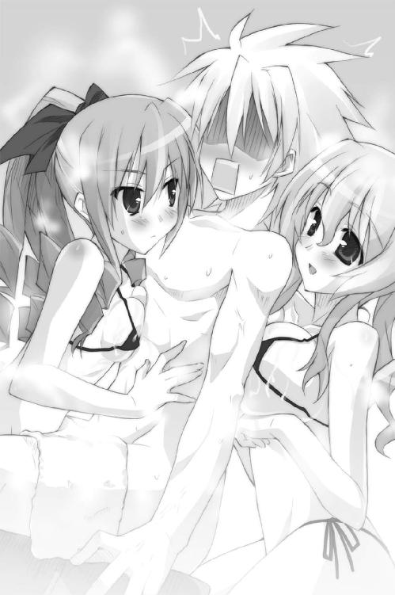
妹たちのアグレッシブさに驚いたユフィナが、湯船で立ち上がって怒鳴った。
「ふ、二人ともっ！ いくらトレクワーズのためとはいえやりすぎよっ！ 恭太郎もだらしない顔してるんじゃないわよ、このドヘンタイっ！」
「も、もはや、言い返す気力もない...よ......」
すでに昇天寸前な恭太郎だったが、さらにさらに追い打ちを掛ける事態が発生した。
「恭太郎おにいちゃーん メルルもカラダを洗ってあげるよー！」
一番オマセでダイタンな第五王女、メルルがお風呂に駆け込んできたのだ。
全身がモコモコとした泡に包まれており、どんな水着を着けているのかはわからない。まるで、ヒツジの着ぐるみでも着ているかのようだ。
「おねえちゃんたちが背中を洗ってるから、メルルは前を洗ってあげるねっ！」
泡だらけのメルルが恭太郎の前でキュートな笑みを浮かべた。
双子の姉のようにカラダをすり寄せて来るのかと思いきや──小柄な王女はカピバラのカタチをしたかわいいスポンジを取り出す。
ココロの中で安堵の息を吐く恭太郎。どうやらメルルはスポンジで洗ってくれるつもりのようだ。完全なる漆黒の闇で一縷の希望の光を見た気がした。普通に洗ってくれるなら、俺は耐えられるッ！
──しかし、甘かった。
メルルはおもむろにスポンジで自分のおなかについている泡をすくい取ったのだ。泡の下から、かわいらしいおへそが見える。猛烈に嫌な予感がするぞ、おい。
「......つかぬ事を聞くけど、メルルちゃん。その泡の下はどんな水着を着けてるの？」
スポンジで恭太郎の腕を洗い出したメルルは、いたずらっぽい笑みを浮かべた。
「えへへ、知りたい......？」
後ろを向いて、少しだけ泡を拭う。
「────!!!」
恭太郎は我が目を疑った。
モコモコした泡の下から、かわいいおしりがちょっぴり見えたのだ!!
メルルは照れたように頬を染め、恭太郎の耳元で囁く。
「な～～んにも着けてないんだよっ。洗い終わるころにはぜんぶ見えちゃうかもねっ」
「なんだよ、その謎のシステムはっ！ 誰が考えたんだ!?」
「メルルが自分で考えたのっ。どうどうっ？ ドキドキするでしょ？」
「た、確かにドキドキするけどもっ！ ハダカなんか見せたらダメだろっ！」
「おにいちゃんは、メルルのだんなさまになる人だもんっ。へーきだよっ」
恭太郎の背後から感心したような吐息が聞こえてきた。エリスが幾度も頷きながら、誰にも聞こえないような小声で呟く。
「なるほど、そういった方法もありますのね。勉強になりますわ......。はっ、そうですわっ、忘れないようにメモしておきましょうっ」
どこから取り出したのか、小さなメモ帳に書き留める。
（その向学心は別のことに使えよっ！ 頼むから！）
そうツッコミたかったが、できなかった。
「よいしょっ、よいしょっ！ えいっ、えいっ！」
一生懸命に泡だらけのビキニをこすりつけて、レイシアは恭太郎の背中を洗ってくれていたのだが──
──ぷるるんっ
レイシアの水着が外れてしまったのだ。発育過剰な膨らみが飛び出してしまう。
だが、真面目な王女はそれに気付かず、一心不乱に豊かな胸を押しつけ続けたのだ。
いわゆるナマチチの感触をダイレクトに背中に感じて、恭太郎は叫ぶ。
「れ、レイシアっ！ 水着！ 水着が──!!」
身をよじるようにしてレイシアから身体を離そうとする。
急に動いたせいだろう。恭太郎の身体をスポンジで洗おうとしていたメルルがバランスを崩して滑ってしまった。
「きゃあああんっ！」
可愛らしい悲鳴をあげて──べしょっ！
おなかを下にして、お風呂場の床に転んでしまう。
「うにゅ～......メルル、強い子だから泣かないもーん......」
涙目で立ち上がったメルルを見て、恭太郎は再び叫ぶ。
「ダメだっ！ メルルちゃん、立っちゃダメっ！」
「うにゅっ？」
濡れた風呂場の床に転んでしまったため、身体を覆っていた泡の大半がとれてしまい──生まれたまんまの姿がほとんど見えてしまっていたのだ。重要な部分を辛うじて隠しているだけのような状態になっている。
思いがけないタイミングでハダカを見せることになってしまったから、恥ずかしかったのだろう。メルルの顔が真っ赤に染まった。
「きゃーん、やっぱり恥ずかしいよぅ！ あんまり見ないで、おにいちゃんっ！」
慌ててカラダを隠そうとする仕草は、とても可愛くて。凄まじくえっちくて。
背中に押しつけられる四つの膨らみの感触は、恐ろしいほどに気持ちよくて。
「恭太郎さま......。興奮なさったら、いつでも襲ってくださって構いませんからね...」
レイシアの甘い囁きが、耳朶をくすぐって。
恭太郎の興奮ゲージが臨界点を振り切った。高校ではカタブツで通っていた彼の鋼鉄の理性が脆くも崩れ去り、脳内が煩悩一色に埋め尽くされる。
そして──ぷつんっ。
頭の中で、なにかが壊れる音を聞いたような気がした。
ここで神来恭太郎という少年の境遇について、少しだけ補足しておこう。
幼い頃に亡くなった彼の母親は、旧家出身の絵に描いたようなお嬢さまだった。
世間知らずだけれど、優しくて、おしとやかで、なにより貞淑で──理想の母親であったと聞かされている。
しかし、恭太郎の父親は正反対の人間だった。
剣術の腕前はピカ一だったけれど、女たらしな遊び人で、女と見れば誰彼構わず声を掛け、世界中に愛人と隠し子を作っているようなダメ男だったのだ。
厳格な姉によって育てられたためカタブツな少年となったが、恭太郎には放蕩な父親の遺伝子も受け継がれているのである。
しかも、その素因はずっと抑え込まれていた。限界まで縮められたバネのように、力を蓄えていた。タガの外れる日を待ちわびていた。
ぷつんという音は、彼の一六年の人生で一度もＯＮになったことがないスイッチが入ってしまった音でもあったのだ。
「ぶるぁあああああああああああああああああああ──ッッッ!!!」
恭太郎は夜空に向けて咆吼した。全身から闘気のようなものが迸り、手からは目映ゆい光が長いカギ爪のように伸び、カッと見開かれた両目からは閃光が発射されていただろう。たぶん。
「そんなに世継ぎが欲しいなら、つくってやろうじゃねえかああッ!!」
ゴゴゴゴゴゴゴゴ...──微かな地響きと共に、浴場に貝殻のカタチをしたベッドが出現する。
「ちょうどいい！ たった今ココで、襲ってやるぜえええ!!」
泡まみれになっているレイシア、エリス、メルルの三人を小脇に抱えた。リミッターが解除されているのか、普段の彼からは想像もつかない膂力である。
「ついに、その気になってくださったのですね。うれしいです、恭太郎さま」
「おにいちゃん、荒々しすぎるよぅ」
「え？ え？ 今からですのっ？ お、お待ちなさいっ。私、ココロの準備が...っ！ あ、でも、二人には負けるわけにはいかないし、」
王女たちを防水加工されたベッドの上に放り投げた。
「グヘヘヘ！ 三人まとめてカタをつけてやるぜッ！」
ケダモノと化した恭太郎は、下卑た笑い声を立てる。
「恭太郎ッ！ ヘンなコトはするなって言ってるでしょ!? 妹たちから離れなさいッ!!」
ギギギギと首を巡らせて振り向いた恭太郎。ユフィナのプロポーションを舐めるように眺め、舌なめずりをする。
「ユフィナも世継ぎが欲しいのか......？ なら、まずおまえから襲ってやるぁッ!!」
ふごごーっと鼻息を吹き出し、猛獣のような動きでユフィナに向けて駆けだした。
途中で──はらり、と。恭太郎の腰を覆っていたタオルが外れてしまう。
「きゃああああああああああんっっっ!!」
手のひらで目元を覆ってアルトが絶叫する。
ユフィナも顔を赤く染め、片手で顔を覆いながら怒鳴る。
「か、隠しなさいよ！ バカ──っっ!!」
「どぅるぁああああああああああああああああああああああああああ──ッッッ!!!」
ケダモノ化している恭太郎は気にもとめない。凄まじい速度でユフィナに迫る。
「来たれ、【烈炎神剣】」
一瞬で競泳水着を着たユフィナの腕に巨大な手甲が装着され、炎に包まれた巨大な剣が手の中に出現する。
「目を覚ましなさい、この無礼者ぉぉ──ッッ!!」
炎の剣を大きく振りかぶって──
「天誅────ッッッ!!」
「ぐおああああああああああああああああああっっ!?」
恭太郎は夜空を駆ける一筋の流れ星となった。
ただ一匹、我関せずといったようすで湯船に浸かっていたミルンが、気持ちよさそうに「もきゅっ☆」と一声鳴いた。
×××
翌日の夜。
後宮の裏手。木立の中。大樹の根元にうずくまり、恭太郎は膝を抱えていた。
お風呂での一件を、恭太郎はほとんど記憶していない。
だが、ピコル師匠から、「此度の作戦は、実に惜しかったのじゃ！ だが、カタブツの恭太郎もケダモノになるとわかったのは成果じゃな！ 次回に期待じゃ！ ふゥははははー！」なんて言葉を聞かされて。
恭太郎は落ち込んだ。立ち直れないくらいにヘコんだ。泣きそうだった。いや、正直に言おう。男は決して涙を見せるなと姉から厳命されていたにも拘らず、涙ぐんでいた。
「最悪だ最低だ俺は忌むべきケダモノだ憎むべき悪漢だ不埒で不潔で不純なダメ人間だ俺みたいな不貞なヤツは死んだ方がマシだあああああ......」
呪詛の言葉のように呟き続ける。なにせ自分から彼女たちに襲いかかろうとして、しかもそれを全く覚えていなかったのだ。
「俺の心の奥底には、そんなケダモノが隠れていたのか......？」
謹厳実直、質実剛健、品行方正、貞操堅固──そんな生き方を信条としていた恭太郎には、自らの根幹を揺るがすような事態である。
胸を萎ませるように深い深いため息を吐いて、恭太郎は腰に差した木刀を見つめた。
姉上の言葉が、脳裏に蘇ってくる。
『運命の相手と一生を添い遂げることこそ、本懐というものです！』
「このままじゃダメだ......。立派な男とは呼べない人間になってしまう......」
今回は幸いにも未遂に終わったが、いつ再びケダモノと化してしまうかわからない。
嫁入り前の女の子たちを、暴走した自分がキズモノにしてしまうかもしれないのだ。
姫たちが望んでいたことであったとしても、恭太郎にとって許せることではない。
救いを求めるように、城壁の辺りを眺める。巧妙に隠されているため夜目にはわからないが、その辺りに外部へと通じる秘密の脱出口があるはずだ。
頑丈な鍵が掛かっているが......木刀で本気で打ち掛かれば壊せないことはないだろう。
逃げてしまおうか──そんな考えが脳裏をよぎる。
元の世界に戻るためには、強力な魔法を使える女王に送り返してもらうしかないと教わった。だが、それはなにも、トレクワーズの新女王である必要はないのではないだろうか。他の国の女王たちも凄まじい魔力を持っているそうだ。
例えば、トレクワーズと敵対している国の君主にすがれば、恭太郎が日本に戻るのに喜んで手を貸してくれるかもしれない......。
しかし、すぐに首を横に振った。
「逃げるなんてことは、できない」
後宮に入れられて一週間近くが経っていたが、実を言えば恭太郎は一度たりとも日本に戻りたいとは考えなかった。
当初に抱いていた『姫たちを助けてやりたい』という思いも持ち続けていたのだ。
それゆえ、恭太郎は悩む。
ユフィナたちが困っているのなら救ってあげたいという気持ちに偽りはない。
もしも救世主として女神が俺を選んだというなら光栄だとすら思う。
だが、好きでもない女の子たちとお世継ぎをつくるなんてコトは、いくら乞われても俺には絶対にできない。そんなことは、男のクズがすることだ。
でも、姫に誘惑されて我を忘れてケダモノ化してしまう俺もいるワケで......。
くそっ、どうすりゃいいんだよ......？
......そうだ。いっそのこと、五人の王女の誰かと相思相愛になったらどうだろう？ そのコとの間にお世継ぎをつくるなら、人道から外れた行為にはならないんじゃないか？
そこで、なぜか脳裏に浮かんだのは──ユフィナの顔だった。
「なに考えてんだ、俺は」
すぐさま頭を振って否定する。
彼女は俺のコトを嫌ってるじゃないか。それに俺だってユフィナみたいな凶暴な女の子は願い下げだ。相思相愛になるなんて一〇〇％あり得ない。
他の姫たちとも、恋仲になるなんて想像もつかなかった。というか、そもそも世継ぎづくりのために恋をしようなんて考え自体が不実ってものだろう。順番が逆だ。
「ホントに、どうすりゃいいんだよ、俺は......!!」
恭太郎は髪をかきむしる。
敵と味方と。善と悪と。誠実と不実と。貞淑さと淫らさと──相反する概念が、きちんと向かい合っていない。状況は複雑で。複雑がゆえに歪で。歪さゆえにココロが揺さぶられる。思考は堂々巡りを続け、出口のない迷路を彷徨うことになる。
きっと──
きっと、揺るぎない目的が──
自らが正義だと信じられる指針が見つかれば、こんなに苦悩せずに済むのだろう。
それさえ見つかれば、後は達成のために邁進すればいいだけなのだから。
だが、その目的とはなんだ？ 俺はなにを為すべきなんだ？
考えても、答えは出なかった。
出てくるのは、ため息だけ──。
為す術なく月を見上げ、恭太郎は再び深い息を吐いた。
どのくらいの間、膝を抱え続けていただろうか。
ふいに──ガンッ、ガンッ、ガンッ、ガンッ、ガンッ、ガンッ、ガンッ!!
鈍い衝撃音が響いてきた。直後、脱出口の隠し扉が壊れて弾け飛ぶ。
慌てて立ち上がった恭太郎の目の前に、黒い人影が飛び出してきた。
地下通路から出てきたのは、地面に届きそうなほど長い黒髪を持つ少女。年の頃は一〇歳ほどだろうか。闇に溶けるような黒衣に身を包み、黒鞘の剣を帯びている。幼い姿には似合わない鋭い眼差しで、恭太郎を睨み付けてきた。
「迷子......なワケないよな。普通の子どもが扉をぶち破るわけがない。何者だ？」
誰何しながら、恭太郎は足下を探った。確か枝が落ちていたはずだ。
ピコル師匠からは『決して戦うな。怪しいヤツを見かけたら、必ず誰かを呼べ』と命じられていた。
ユフィナも『危険なことは絶対にするな！』と恭太郎に怒った。
だが、いくらなんでも一〇歳そこそこの女の子になら負けることはないだろう。木刀で打ち据えるなんてひどいことはしたくないが。
「私は──」
ひどく落ち着いた口調で少女は名乗った。
「キスト・カラサイシュ。カルタギア帝国の四将軍の一人だ。お初にお目に掛かる。おまえは......トレクワーズが呼び出した新たな王仕だな？」
カルタギア帝国？ それって敵国だよな......。敵将が単身乗り込んできたってことかよ？ つーか、敵性存在は結界の内側に入れないんじゃないのか......？
多くの疑問を感じながら、恭太郎は声を掛けた。
「俺は神来恭太郎だ。きみみたいに小さなコが将軍とは思えないが......できたら、なにもせずに帰ってもらえるとありがたいな」
キストと名乗った少女から視線を逸らさずに、木刀の柄に小指をかけた。念のため、いつでも抜き放てるように気を配る。
「恭太郎、か。おまえには感謝をせねばならないな。そこにある侵入口を見付けられたのは恭太郎のおかげなのだ」
「............？」
「数日前、第一王女と共に街へ出たろう？ 帰り際、後をつけさせてもらった。《烈火の王女》ともあろうものが追跡にまったく気付いてないようだったな。なにに気を取られていたのか知らないが」
あのときは......そうだ。ユフィナは暗い顔をしていた俺を気遣ってくれていたんだ。くそっ、後をつけられたのは、俺のせいじゃないかよ......。
「侵入を防ぐための魔法を解くのに手間取ったが、城壁を越えることを考えれば随分と楽だったよ。それから、もう一つ──」
黒衣の少女は指を一本立てて、
「真っ先に私の前に現れてくれたことに感謝する。いろいろと手間が省けた」
「......どういう意味だ？」
「《大結界》の中に入るため、魔力のほとんどを封印しているのだ。だから、女王の間へ押し入るためには──」
殺気を感じた。瞬時に木刀の柄に手を掛ける。
「──人質がいる」
しかし、キストの方が早かった。立てていた指先に閃光が走る。
「【雷撃】！」
青白い電撃が恭太郎の身体を直撃した。
全身の筋肉が引きつり、木刀を抜くこともできなかった。
黒衣の将軍は、一瞬の隙を見逃さない。剣を抜き放つや、柄をみぞおちに突き込んでくる。目で追うのも困難なほどに素早い、熟練した動きだ。
「......ぅぐっ!?」
くそっ、息ができない......！
「魔法は汚いだろ......!!」
「まあ、そう言うな。私もそれなりに必死なのだ。助けを呼ばれたら面倒だからな。おかげで、くだらぬことをいろいろと喋ってしまった」
「ベラベラ喋ると思ったら、そういうことか......」
「お喋りついでに私の二つ名を教えてやろう。私は《兇竜将軍》などと呼ばれているのだ。こういう魔法が得意なのでな。......【捕縛黒蛇】」
キストの手のひらが輝き、魔法陣が展開──黒蛇が飛び出してきた。
避けようとしても身体が動かない。蛇が足を這い上がってくる。
「残念ながら、今はこんなものしか出せないが......おまえには十分だろう。やれ！」
冷たい声でキストが命じる。
やめろ！ そう叫びたかったが、声にならなかった。
黒蛇に首筋を噛まれ、恭太郎は意識を失ってしまったのだ──......
第五章 俺はきっと、救世主にはなれない。
再び目を覚ましたとき、恭太郎が目にしたのは目映ゆい光を放つ巨大なクリスタルだった。
霞む視界の向こうに、純白に染まった広大な空間が広がっている。
自分の横たわる場所がどこだか気付いたとき、恭太郎の背筋が凍った。
ここは......女王の間だ。
気絶している間に、王城の最深部まで攻め込まれてしまった！
恭太郎は飛び起きようとしたができなかった。黒い蛇が身体を締め付けているのだ。しかも、横たわる恭太郎のすぐそばにキストが立っており首筋に剣を突きつけている。
「キスト将軍！ 恭太郎を放しなさいッ！ もうあんたは逃げられないわよ！」
炎に包まれた大剣を手にしたユフィナが鋭い声を飛ばした。
「恭太郎さまに傷をつけたら、絶対に許しませんっ！」
「そうですわっ！ それは私が女王になるために必要なんですのっ！」
「おにいちゃんをはなせーっ！ ばかーっ！」
レイシアもエリスもメルルも、手に手に巨大な武器を構えてこちらを睨んでいる。
「はゎわわわわわ、ゎわわわわわ......」
アルトですらも小さな弓矢を出現させ、ぷるぷる震えながらキストを睨んでいる。
だが、キストは動じるようすもなく落ち着いた声で言い放つ。
「元より逃げることなど考えていない。最悪でも、私は王仕を道連れにできればいいのだからな。......騎士団も動くなッ！」
キストは振り返りもせずに、背後に回り込もうとしていた騎士を一喝する。
「私を殺しても、蛇が王仕を絞め殺す。おかしなマネはするな。......おまえたちこそ、自分たちの立場を自覚したらどうだ。王仕の命が惜しければ武器を捨てるんだ」
と、敵国の将軍は恭太郎が目を覚ましたことに気付いた。
「おい、王仕。あの獰猛な姫たちに言ってやれ。まだ死にたくない、助けてくれとな」
「だ、誰がそんなこと......!!」
「いちいち抗うな。なんの力も持たぬ《男》が強がっても滑稽なだけだ」
刃がさらに押しつけられる。皮膚を破る感触。血が噴き出し首筋を濡らした。
「ほら、早く命乞いをしろ」
「......お断りだ」
そんなこと、絶対に言えない。言えるわけがない！
幼い少女にしか見えない将軍は酷薄そうに目を細めた。
「そうか。では、命乞いしたくなる気分にさせてやろう」
身体に巻き付いている蛇がシュルシュルと動き、恭太郎の腕と太ももに絡まった。肌を滑る冷たい鱗の感触に怖気を感じる。
「腕と足を締め上げてやろう。壊死して腐り落ちれば、助けてくれと叫びたくなるだろうからな──やれっ！」
「待ってッ！ わかった、武器を捨てるわ」
「ダメだ！ 俺のことは構うな！ コイツをさっさと倒してくれ！」
恭太郎の叫びも空しく、女王の間に重たい金属音が響き渡った。
ユフィナが大剣を床に投げたのだ。
いや、彼女だけじゃない。他の王女たちも次々と武器を捨てる。
「どうして......俺なんかのために、そんな......！」
苦しげな表情で、ユフィナは首を横に振った。
「悔しいけど、あんたを失うわけにはいかないのよ......！」
「恭太郎さまは、トレクワーズのたった一つの希望なのです」
「死んでしまったらお世継ぎがつくれないですわ......。そんなのダメですのっ！」
「そうだよっ！ おにいちゃんはメルルのだんなさまなんだもんっ！」
レイシアとエリスも苦渋に満ちた顔で言いつのる。アルトはなにも口にしなかったけれど、今にもこぼれ落ちそうなほどに瞳に涙を溜めていた。
「ほら、武器を捨てたわ！ 恭太郎を放しなさいッ！」
敵将は横たわる恭太郎の襟首を掴んだ。小さな身体からは到底想像できないほどの膂力で彼を立ち上がらせる。
（情けないッ!! 不甲斐ないにもほどがある......ッ!!）
恭太郎は歯噛みした。王女たちを助けてやりたい──そう思っていたのに、むしろ自分のために危機に陥れてしまったのだ。
だが、悔しくとも抗えなかった。身動きが全く取れないのだ。蛇に絡みつかれているのに加えて、噛まれたときの毒が効いているのか意識も朦朧としている。
恭太郎の首筋に刃を突きつけながら、キストは姫たちを眺め渡した。
「では、約束通り解放してやろう」
キストは恭太郎の身体をユフィナたちの方へ突き飛ばし、同時に叫んだ。
「王仕を絞め殺せッ！」
絡みついていた蛇が締め上げてくる。
「......ぐ、がッ!?」
身体だけでなく首を絞められ、一気に意識が遠のく。
「恭太郎ッ！」
すぐさまユフィナが駆け寄ってきた。首に絡みついている蛇を引き離そうとする。
だが、猛烈な力で巻き付いていて、蛇の身体はビクともしない。
しかも、黒蛇が突如として鎌首をもたげた。
咬まれる──即座に判断し、恭太郎は懸命に叫んだ。
「ユフィナ...！ 手を放せ...ッ！」
王女は手を放さなかった。三角形の蛇の頭が矢のように飛びユフィナの腕に食らいつく。
「つッ......！」
それでも彼女は懸命に蛇の身体を引っ張り、恭太郎が窒息しないようにしてくれた。
「誰か！ お姉さまに剣を！」
レイシアの言葉に呼応し、控えていた騎士が剣を手に駆け寄ってくる。
刹那──時間にしてわずか一秒ほど。全員の視線が恭太郎に集まっていた。
そのわずかな間隙こそが、敵将の狙いだった。
キストは一気に階段を駆け上がり、
「ハ────ッッ!!」
裂帛の気合いと共に、ベッドを覆うベールを叩き斬った。
腕がガラスと化した美女がベッドに横たわって目を閉じている。
「トレクワーズ女王ッ！ 覚悟ッ!!」
「お母さまッ！」「ママっ！」
メルルとアルトの絶叫と、キストが剣を振り下ろしたのが──ほぼ同時。
横たわる女王の胸元に、深々と刃が突き立つ。
「許しませんわッ！」
即座に巨大鎌を拾ったエリスが呪文を唱える。無数の魔法陣が出現し、
「【死女神の舞曲】!!」
紫色に輝く衝撃波の群れが風を切ってキストに迫る！
敵将は直撃を受けて斬り裂かれた──かに見えた。
「【金剛盾陣】!!」
ドーム状に黒く輝く魔法陣が出現。衝撃波を全て吸収してしまう。
魔法陣の向こう側、不適な笑みを浮かべていたのは幼い少女ではなかった。
一瞬で大人に成長したかのように、妙齢の美女がそこにいた。身体が大きくなったため、纏っていた黒い衣が破れて身体に巻き付いている。
「一瞬遅かったな。すでに《大結界》は消えてなくなったようだ」
剣を引き抜く。刃は血に染まっていた。
「女王は......死んだッ!!」
将軍の名にふさわしい威厳に満ちたようすで王女たちを睨め付ける。
「トレクワーズの姫よ。次は戦場で会おう。焦土と化したトレクロの街でな......！」
キスト将軍は手を突き出した。巨大な魔法陣が展開し──直後、鋭いクチバシをもつ黒い翼竜が姿を現す。恭太郎は、それを幼い頃に恐竜図鑑で見たことがあった。プテラノドンによく似ている。
キストはプテラノドンの背に飛び乗った。女王の間の外壁を突き破って脱出していく。
後に残されたのは──惨状だった。
「お母さまッ！」
ベッドに横たわる女王エルトリーゼは身動き一つしていない。
「恭太郎......あと少しだから......」
ユフィナは苦しそうな顔をしながらも、恭太郎に巻き付いた蛇を断ち切ってくれた。蛇は黒い煙となって消え去る。
だが、毒素までは消えてはくれなかった。
蛇の毒が回ってしまったのだろう。ユフィナは膝を突いてしまう。
この毒で死ぬことはないようだが、意識を失わせる効果があるのだ。
女王を気遣う娘たちの悲痛な声が木霊している女王の間に、追い打ちを掛けるような情報が届けられた。
「申し上げます！ 国土を護る《大結界》が完全に消滅しました！ カルタギアの軍勢が国境を越えて侵入ッ！ 首都トレクロに向けて進軍を開始した模様です！」
（俺のせいだ......！）
恭太郎は大理石の床を拳で殴りつけた。
（こうなったのは、全部、俺のせいだ──!!）
×××
うっすらと夜が明けはじめていた。
トレクワーズ国境付近の丘に造られた野営地。将軍用の天幕の前に立っていた筋骨隆々な眼帯の女丈夫──ムージ・トラファルガーは、うれしそうに拳を手のひらで叩いた。
「へへっ、キストのヤツ、やりやがったな！」
国を覆っていた乳白色のベールが消え去ったのだ。美しい平原が完全に見渡せるようになった。地平線の向こうから太陽が顔を出している。
「よっしゃ、次はオレの番だ......！ 思いっきり暴れてやるぜ！」
「ムージさま！ フランネル大隊長より【念信】！ 出撃準備、整いましてございます！」
タイミング良く副官から声が掛かった。
「全軍準備完了ってコトか......？」
「はっ！ ロゼット隊長率いる第二大隊はトレクワーズ南部国境にて待機中！ 第三大隊は北部山岳地帯に展開！ ムージさまのご命令でいつでも出撃可能です！」
聯隊の一つを三分割し、首都トレクロとは離れた地域に展開させている。本来ならば、軍を少数にわけるなど各個撃破の元でしかないのだが──将軍は満足げに頷いた。
「これでトレクワーズ攻略は終わったも同然だぜ！ 楽勝だな！」
丘の下を見下ろす。麾下の兵士たちが出撃を待っていた。歩兵、騎兵、魔砲兵、魔術師団、幻獣部隊、飛竜部隊──勇猛をもって鳴るカルタギア軍が美しい陣形を組み、引き絞られた弓矢のように力を溜めて飛び出す瞬間を待っている。
ムージの号令一つで、烈火の如き勢いでトレクワーズを蹂躙するだろう。
「第一から第三大隊に【念信】しろ！ トレクワーズ領内に侵入し、近隣の地方都市を包囲せよと伝えるんだ！ すぐに陥とすなよ？ できるだけ派手に住民を威圧しやがれ！」
副官に命じながら、ムージは黒毛の愛馬に跨る。
「ハッ！」
丘を一気に駆けくだりながら曲刀を抜き放った。陽光に刃が輝く。
巨大な刀を掲げ、ムージは鋭い声を発した。
「いくぞ、おめーら！ 一気に首都トレクロを陥落させるぜ！」
×××
女王の間の奥には秘密の階段があり、その先には敵襲に備えるためのシェルターのような施設が設けられていた。通称、《女神の腕》と呼ばれる攻撃呪文を防ぐための陣が張り巡らされた部屋には、魔法による通信機器や医療設備などが用意されている。
女王エルトリーゼは、すぐさま《女神の腕》にある医務室へと移された。
女王は──辛うじて一命を取り留めていた。
不幸中の幸いか、全身がガラス化するという奇病に罹っていたために、硬質化した組織が刃を弾いた。凶刃はわずかに心臓を逸れたのだ。
しかし、依然として危険な状態に違いはない。王宮の典医たちが懸命に治癒魔法を用い、治療を施し続けている。
「ママぁ......うううぅ......」
メルルの泣き声が通信設備の置かれた司令室に響いた。
アルトはメルルを泣きやませようと懸命に抱きしめている。恭太郎、五人の姫たち、そしてピコルとアレスタも司令室にいたが、誰も言葉を発しようとしない。ただ沈痛な面持ちで立ちつくしている。
重苦しい空気が立ちこめる中、さらに絶望的な情報がもたらされた。
「北方領ザルツの領主より『カルタギア軍によって街が完全に包囲された。至急、救援を求む』との【念信】が入りました！」
その後も次々と地方都市が包囲されているという情報が入ってくる。
ピコルが歯噛みをした。
「おのれ、カルタギアめ......！ 戦い方を心得ておるのじゃ！」
「あの......辺境の街を包囲することにどんな意味があるんですか？ 敵の全軍が首都に攻めて来るものだと思ったんですけど......」
アレスタの問いに、ピコルは深いため息と共に答える。
「我が国には軍隊がない。戦力と言えば、近衛騎士団、地方領主が持つわずかな私兵、そして──姫さまたちだけじゃ。地方都市を攻めたのは、一騎当千の力を持つ姫さまたちを分断するためなのじゃ！」
「そうか。姫さまたちに地方領を助けに行かせて、首都を手薄にする作戦なんですね。だったら、この際地方は見捨てちゃえばいいじゃないですかっ！ んで、姫さまたち全員で首都を守っていただけば敵の主力を退けることぐらい簡単に、」
「そのようなことはできません」
苦渋に満ちた表情でレイシアがアレスタの言葉を遮る。
「地方領に住む方たちだってトレクワーズの大切な民なのです。見捨てるなんてことはできません。危機に陥っているなら、私たちは助けに行かなくてはならないのです」
「レイシアの言うとおりだわ......」
蛇に咬まれた毒が抜けていないのだろう。顔をしかめながらユフィナが口を開く。
「なにがあっても国民全員を助ける......。たった一人だって切り捨てたりしない......。それが王女の務めなのよ......」
足に力を込め、第一王女はゆっくりと立ち上がった。
「私は約束したの......。この国を守るって！ カルタギアの好きになんてさせない！」
姫たちはユフィナの言葉に頷いた。
一番幼いメルルですらも唇を噛んで涙を堪え、姉の言葉にコクコクと頷いている。無邪気で子どもっぽい彼女も王族の一員なのだ。
「レイシアはザルツを助けに行って。飛竜で向かえばすぐに着くはずだから」
ユフィナは、レイシア、エリス、メルルの三人に地方都市を助けに行くよう頼んだ。
「わかりましたわ。すぐにカルタギア軍を蹴散らして戻って参りますの。あんな野蛮な輩をのさばらせて堪るものですかっ！」
怒りの表情でエリスが言い放つ。ユフィナは辛そうな顔を隠して妹に微笑みかけた。
「エリスならすぐに戻ってきてくれそうね。だけど、敵兵士を殺しちゃダメよ。女神さまとの約束なんだから」
恭太郎は驚いた。この期に及んでも不殺を貫くっていうのかよ......。
「メルルもがんばるよっ！ カルタギアなんてどーんってやっつけちゃうんだからっ！」
「うん。メルルならきっとできるわ」
小さな拳を握りしめた末妹の髪を、ユフィナは優しく撫でる。
「あ、あのっ......ごめんなさい。わたしはなんの力にもなれなくて......。わたしも王女なのに......あうぅぅぅぅ......」
申し訳なさそうにアルトが頭を垂れる。その肩に優しく手を置いて、
「アルトはここでお母さまや恭太郎たちを守って。それだって大事な仕事だからね」
「は......はいっ！ 命に換えても守り抜きますぅっ！」
「ユフィナ姉さまは、どうなさるのです？」
レイシアの問いに、ユフィナはきっぱりと言い切った。
「カルタギア軍の本隊と戦うわ。私一人でトレクロを守りきる!!」
「──無茶だッ！」
ずっと黙っていた恭太郎は、堪えきれずに声をあげてしまった。
「きみも、あの蛇に咬まれたじゃないか。立っているのもやっとなんじゃないのか!?」
咬まれたからわかる。一瞬で意識を失うほどに強力な毒。恭太郎は今でもフラフラしていて、気を抜いたら倒れてしまいそうなのだ。咬まれて大した時間も経っていないユフィナは、もっと辛いに違いない。
こんな状態では敵の軍勢と戦うことなんてできるワケない!!
だが、ユフィナは王女らしい凛とした態度を崩さなかった。
「それでも、私は戦うわ。トレクワーズを守るために」
彼女の決心を曲げられないことは、すぐにわかった。
瞳に強い光が宿っていたのだ。決意と覚悟に満ちた光が──。
「だ、だったら、俺も......！」
恭太郎はユフィナの元に駆け寄り、肩に手を乗せた。
「俺にも戦わせてくれないか！ 少しは腕に覚えがある。俺にだってできることが──」
だが、恭太郎の手は冷たく払われてしまう。
「──ないわ。残念だけど、あんたにできることはなにもないのよ」
「そんな......なにかあるだろう？ なんでもいい。きみたちの力になりたいんだ！」
必死に言い募ったけれど、王女は首を横に振った。
「いくら剣の腕に自信があっても......カルタギア軍とは戦えないわ。あんたは足手まといになるだけよ」
レイシアもエリスも、メルルですらも姉の言葉を否定しようとしない。
「恭太郎はココに隠れてて。《女神の腕》にいれば、しばらくは安全なはずだから。もしも、ここまで攻め込まれたら女王陛下と一緒に脱出して」
ユフィナは恭太郎を見つめて、申し訳なさそうに頭を下げる。
「ごめんね、恭太郎......」
......どうして、謝るんだよ。
「こっちの都合で喚び出しておいて危険な目に遭わせちゃって......。私のせいだわ」
謝らないでくれよ。悪いのは全部、俺じゃないか。
俺のせいで、こんなピンチに陥ったんじゃないかよ......。
「──それじゃ、行きましょう！」
呆然と立ちつくす恭太郎を置いて、王女たちは踵を返した。
たった四人だけで、大軍の待つ戦場へと出撃していく。
「............」
恭太郎は激励の言葉を掛けることすらできなかった。
できたことといえば、ただ拳を握り締めることだけ──
「あ、あの......」アルトが恭太郎の袖口をそっとつまんで、
「お姉さまを悪く思わないでください。仕方がないことなんです。恭太郎さまは男性ですから、その......戦うことができなくて......」
「ああ、わかってるよ......」
悲しいくらいに、思い知らされている。
魔力のほとんどを封じ込め、子どもの姿になっていたキストにすら恭太郎は敵わなかったのだ。魔法を使う敵に向かっていったら、一溜まりもないだろう。
それでも──それでもいいんだ！
それでも、なにか手伝いたかった！ 一太刀でいいから報いたかった！
この状況は全部、俺のせいで引き起こされたんだ！
俺がいなければ、キストに秘密の脱出口が見つかることもなかった！
キストが侵入したときに助けを呼んでいれば、人質に取られることもなかった！
人質に取られたりしなければ、女王が傷つくこともなかった！
俺さえいなければ、敵国が攻めてくることなんてなかった！
俺さえいなければ、王女たちが絶望的な戦いに赴くこともなかった！
全ては......全ては俺のせいなんだッ！
それなのに......それなのに、俺にはなにもできないのかよ......！
戦いに行く女の子たちを、俺はただ見ていることしかできないのかよ......！
ユフィナたちを助けてやりたいなんて思ってたくせに、
俺がしたのは彼女たちを苦しめることだけだったのかよ......!!
「許せねえ......！」
あまりにも不甲斐ない自分が許せなくて、腰に差した木刀の柄を握り締めた。
俺は、なんのために剣の修行を続けてきたんだよ......！
時間にして一〇分ほどが過ぎた頃、沈黙に満たされた《女神の腕》に声が響いた。
「ユフィナさま、接敵！ トレクロの東、一五キロ地点！ アントワープ平原です！」
「敵の数はどのくらいじゃ!?」
ピコルの問いに、通信機器を操る魔法使いの少女が悲鳴のような声で答えた。
「約......三万ッ!!」
三万だって......？ 魔法を使う三万人の軍勢相手に、ユフィナはたった一人で立ち向かうのかよ？ 毒のせいで立ってるのもやっとだっていうのに......!!
「ムージ将軍が率いています！ キスト将軍も合流した模様!!」
「騎士団の念信兵が同行してるはずじゃな？ 映像は出せるか!?」
「出せます！ 視界を受像器に同期！ ３、２、１──映像出ます！」
クリスタルの塊のような受像器にノイズにまみれた映像が浮かび上がった。
朝日に輝く広大な緑色の平原に、純白の戦闘用ドレスに身を包んだユフィナが立っていた。身の丈の倍はあろうかという炎に包まれた巨大な剣を手にし、真っ直ぐに地平線の向こうを睨んでいる。
燃え上がる炎と、長い髪と、戦闘用の白いドレスが風になびいていた。
そして、ユフィナの視線の先、草原の彼方に土煙が上がっていた。
黒鎧に身を包んだ群雲のごとき軍勢が、たった一人の王女に向かって突き進んでくる。
映し出される光景は、荘厳で、悲壮で、恐ろしいくらいに美しくて──恭太郎は思わず身体を震わせてしまった。
「こんなの勝てるわけないじゃないか......」
だが、腕組みをしながら画面を睨んでいたピコルは落ち着き払った声で言い返す。
「ユフィナさまを見くびってはならん。簡単に負ける《烈火の王女》ではないのじゃ」
ゆっくりと、ユフィナは大剣を空に掲げた。
やがて、彼女の周囲に風が渦巻きはじめる。
草原の緑と、白いドレスの裾が美しく風に棚引いた。
数万の敵を真っ直ぐに見据えて、一気に剣を振り下ろす──!!
『【火竜大連覇】』
剣を中心にして、巨大な魔法陣が浮かんだ。
陣から業火が噴き出し、爆炎に包まれた無数の巨竜が放たれる。
火竜はカルタギア軍に向かって空を駆け──敵軍の目の前で草原に突っ込んだ。
猛烈な爆風と土埃が軍勢に襲いかかる！
「すごいよ、ユフィナさまっ！」
アレスタが小さな手を握りしめて歓声を送った。
しかし、すぐにカピバラの顔が恐怖に引きつる。
土埃の中から、黒い兵士たちが次々と飛び出してきたのだ。
倒れた味方を乗り越え、ユフィナを目指して止まらぬ前進を続ける。凶暴な力の奔流が、ユフィナに向かって押し寄せてくる。
「ダメだ......！ あんなにすごい攻撃なのに半分も倒せてないよ......！」
「敵を殺めることを恐れて火竜を直撃させておらんのじゃ！ だが、まだまだ！ 見ろ、もう一撃放つおつもりのようじゃぞ！」
画面の中、ユフィナが再び剣を空に掲げる。
風が渦巻き、大剣に力が集まっていく──
だが、ふいに風が止んでしまった。
ユフィナは大地に膝をついてしまう。
毒だ。蛇にやられた毒のために、立っているのも辛いのだろう。
（これも......俺のせいだ。ユフィナは俺を助けるために蛇に咬まれたんだ......！）
「お姉さまッ！」
アルトの悲鳴が部屋に響く。しかし、その声を掻き消すように、受像器から響く地響きの音がさらに大きくなっていった。
大地を埋め尽くす敵の軍勢が、ユフィナに迫る。
あれほどの大群に呑み込まれれば、いくらユフィナとて一溜まりもないだろう。
映像を見つめながら、恭太郎は無意識のうちに歩き出していた。
その手は、腰に差した朱塗りの木刀に掛けられている。
俺は、
俺は、ただ黙って見ているのか......？
俺は、ユフィナが倒されるのを、ただ眺めてるっていうのか......？
そんなことをしたら、
俺は、
俺は──、
俺は──......、
俺は、俺で、なくなってしまうんじゃないのか？
「どうした、恭太郎......？ ま、まさか!? 誰かあやつを止めるのじゃッ！」
×××
追っ手を振り切り、木刀を手にトレクワーズ城の回廊を走りながら、
恭太郎は、なぜか幼いときのことを想い出していた──。
あれは、そう──母が死んでしばらく経った頃のはずだから恭太郎が五歳のときだ。
夕日に照らされた縁側で、中学の制服を着た姉の桜子が膝枕をしてくれた。
当然、耳かきをしてくれたとか、そんな甘っちょろいものではない。
剣術の特訓と称して、恭太郎は姉と戦ったのだ。武器として与えられていた朱塗りの木刀は幼い恭太郎には大きすぎて、まともに振ることもできず、一方的に竹刀でボコボコにされてしまった。
そのために負った無数のキズを手当てしていたのである。
「まったく。弱いですね、恭太郎は......。もっと修行に励みなさい。そんなことでは神来家を建て直すことなどできませんよ？」
額のキズを消毒してくれている姉の顔を見上げて、恭太郎は唇を尖らせた。
「剣術なんて、なんのやくにたつというんですか。まわりの友達は誰も習ってません。時代遅れなんじゃないでしょうか？」
傷口に絆創膏を貼り付けた桜子は──ぴしっ。
「愚か者ッ！」
その上からデコピンをした。傷口に響いて、めちゃくちゃ痛い。
「す、すみません、姉上っ！」
オデコを手で押さえつつ、必死に謝る恭太郎。痛みのあまり涙目になっている。
そんな弟を桜子は真剣な表情で見下ろした。
「いいですか、恭太郎。あなたが得ようとしているのは手段であって目的ではありません」
「......どういう意味ですか？ あ、神来家を立て直すのがぼくの役目だってコトですか？」
「いいえ。あなたが神来家の嫡男であることすらも、手段にすぎません」
「......うーん、難しすぎてぼくにはよくわかりません」
悲しげに眉尻を下げた恭太郎の頬に、姉は優しく触れた。
「覚えておきなさい、恭太郎。人にはね、《天命》というものがあるのです」
「天命、ですか......？」
「例えば、私の天命は──恭太郎を立派に育てあげることです」
自分を見下ろしている桜子の瞳が、少しだけ遠いものになった。
「お母さまが亡くなり、お父さまは家を空けてばかり。かつては隆盛を誇った道場に門下生はなく、勇名は地に落ち......。すっかり没落した神来家に幼い弟と二人きり......。私は途方に暮れていました。邪魔なおまえを置いて逃げてしまおう......そんなことを考えたことだってあるのですよ」
「本当ですか......？」
信じられなかった。姉は容赦なく厳しかったけれど、きちんと親代わりを務めてくれていたのだ。料理は苦手なのに幼稚園に持って行くお弁当も作ってくれたし、保護者参観には学校を抜け出して出席してくれた。
そんな姉が自分を捨てようとしたこともあるなんて......？
「でもね、恭太郎を捨てて逃げてしまおうと考えているとき、おまえが私の手を握ってきたのです」
桜子は恭太郎の手にそっと触れた。
「そして、『ぼくがついてるから、だいじょぶだよ、おねえちゃん』なんて生意気なことを言ったのですよ。お母さまを恋しがって泣いてばかりいたくせにね......」
まったく覚えていなかった。母が死んでからしばらくのことは、あまり記憶にないのだ。悲しすぎて想い出したくないからかもしれない。
「そのとき私は誓ったのです。この苦境に立ち向かい、おまえを立派に育てあげようって。そのために私はここにいるのだって。そう──私は私の《天命》を悟ったのですよ」
恭太郎の手を痛いくらいにギュッと握り締めてくる。姉の表情は、この上なく真剣だった。剣の技よりも、もっと重要なことを教えようとしているのだ。
「いいですか、恭太郎。人には誰しも、天命というものが待っています。
『自分はこのために生まれてきたのだ』と言い切れるようなできごとが、
理不尽な苦境に立ち向かい、自らの信じる正義を行わなければならない瞬間が、
いつしかきっと、誰の身にも訪れるのです」
「ぼくにも、そのときが来るのですか......？」
「──ええ。必ずやってきます。だから私は、恭太郎が天命から逃げぬよう、負けぬよう、強い男に育てているのですよ」
「もしも、天命から逃げ出してしまったら、どうなっちゃうんですか？」
「そうしたら......恭太郎は恭太郎でなくなってしまいます」
「ぼくがぼくでなくなる......」
「ええ。逃げ出したという過去を背負って、ニセモノの人生を送ることとなるでしょう。そして、死の刹那に想い出すこととなるのです。自分の歩んできた道のりは、間違っていたのだ、とね」
「怖いな......。それは、とても、怖い......」
膝枕をしたまま、桜子の温かい手が恭太郎の髪を撫でる。
いつもは怒った表情しか見せないのに、
「そうならないために、稽古に励みなさい」
そのときの姉上は、珍しく微かな笑みを浮かべていたんだ──
×××
アントワープ平原は、殺気と熱気に包まれていた。
「弱すぎるぞ、本気を出せよ《烈火の王女》！ こんなんじゃちっとも楽しめねえぜ！」
数多くのカルタギア兵たちが見守る中、眼帯をつけた将軍ムージは曲刀でトントンと自分の肩を叩く。ただでさえ筋骨隆々の彼女の身体は、今はさらに分厚い筋肉の鎧で覆われている。身体が一回り大きくなったようだ。
「まだオレは一〇％しか強化してないんだぜ？ ったく、一騎打ちなんか挑んでくるからどれほどのもんかと思ったら、ゼンゼンじゃねえかよ。期待してソンしたっつーの」
「ま......まだまだよ......」
平原に倒れていたユフィナは、のろくさとした動きで立ち上がった。
既に満身創痍。致命傷こそ防いでいるものの、身体のあちこちにアザや切り傷ができてしまっていた。純白の戦闘用ドレスは血と土に汚れ、あちこち破れてしまっている。
口角を伝う血を拳で拭い、ムージを睨み付けた。
「すぐに倒しちゃ可哀想だから、遊んであげてんのよ......」
「そりゃあ、こっちのセリフなんだけどなぁ。あー、めんどくさくなってきた。カリギュラさまからはいたぶって殺せって言われてるけど......オレは弱い者イジメは嫌いなんだ」
ツンツンと立った髪をムージはボリボリと掻いた。両手に持った曲刀を構える。
「まあいいや。次は、二〇％まで強化してやんよ。今度は本気で戦えよ？ じゃねえと死ぬかんな」
口の中でボソボソと呪文を唱えると、身体が黒い魔法陣に包まれた。ビキビキと音を立てて、さらに筋肉が盛り上がっていく。
「ほんじゃ、行くぞ──？」
無造作に曲刀をユフィナの方へ向けて──ドンっ!!
わずかに空気が揺らいだ。直後、ユフィナの眼前にムージの姿があった。
彼我の距離は、一〇メートルほど。それを敵将は一気に詰めてきたのだ。
ゴオっ！ ──凄まじい速度で曲刀が振り下ろされる。
ユフィナは慌てて大剣を構え、刃を弾き返す。
猛烈な衝撃が腕を襲ってきた。剣を取り落とさないようにするのがやっとだ。
「下がガラ空きだぞ！」
ムージは二刀流。もう片方の曲刀が横薙ぎにされた。
バックステップで避けようとしたけれど、わずかに掠めた。
「──くッ！」
ドレスが裂かれ、血が滲む。
「おらぁ！ どうしたッ！ まだまだ行くぞ！」
二本の刃が暴風のように襲いかかってきた。目で追うのもやっとの速度なのに、一撃一撃が巨竜の前脚で殴打されたかのように重い。
懸命に凌いでいたけれど──ギンッ！ ──ついには大剣を弾き飛ばされてしまった。
「ふんっ！」
気合いと共に、ムージは蹴りを入れてきた。
「──ぐっ!!」
腹部にブーツの踵がめり込み、ユフィナの身体は一〇メートルほど吹っ飛ばされ、大地に強かに背中を打ち付けた。
「......う、あ」
息ができない。強い目眩がする。視界も霞んでいる。内臓が口から出てしまいそうだ。全身が痛い。カラダがバラバラになってしまったような気がする。
ユフィナは懸命に立ち上がろうとしたけれど、もう動けなかった。
足も、手も、言うことをきかない。気絶しないでいるのが精一杯だ。
敵軍の兵士たちの大歓声が聞こえてくる。悔しくて、唇を噛んだ。
「ムージ、やめろ。それ以上遊ぶな」
黒い鎧に身を包んだ敵将キスト・カラサイシュが歩み出た。
「遊んでねえよ。一騎打ちを挑まれたら受けてやるのが帝国軍人ってもんだろうが」
「だったら、さっさとトドメを刺せ。ユフィナがしようとしてるのは時間稼ぎだ。他の姫たちが合流するための時間を作っているに過ぎない」
「なんだ、そうだったのかよ!? どうりでチンタラした戦いだと思ったぜ！」
うへーっと舌を出したムージは、曲刀を背中の鞘に収めた。興味を無くしたように、さっさと愛馬にまたがってしまう。
「トドメは任せた。オレは無抵抗の相手を殺すのは好かないんだよ」
「勝手なヤツだな......」
呆れたように肩を竦めつつ、キストは草原に横たわるユフィナを冷たい瞳で見下ろした。
「もう茶番は終わりにさせてもらうぞ。我が主君がトレクワーズの地をご所望なのだ」
「誰が......あんたたちなんかに......!!」
「貴様は殺せと命じられている。街が蹂躙されるさまを、あの世で眺めているがいい」
キストは両手を広げた。呪文を唱えると、空中に無数の魔法陣が展開していく。
「【暴竜暴走】」
直後、魔法陣から黒光りする太い脚が突き出した。恐れおののく兵士たちの前に、黒いティラノサウルスの群れが姿を現す。その数は一〇〇頭近くいるだろうか。
「ユフィナを食い殺せ」
キストが冷たい声で命じる。
ティラノサウルスのうちの一頭が、悠然と歩み出た。
鋭い牙の光る口からは飢えたように涎を流し、ガラス玉のような瞳でユフィナを睨む。
そして──猛烈な勢いで走り出した。
動こうとしたけれど、動けない。大剣を握ることすらできなかった。
「もう......ダメなの...かな......」
ユフィナの双眸から涙がこぼれ落ちる。
（ごめんなさい......。約束したのに......この国を守れなかった......）
約束を交わした相手の姿が脳裏に浮かぶ。
青いローブに身を包んだ魔法使いは、トレクワーズを未曾有の危機から救ってくれた。
そして、幼いユフィナの髪をクシャクシャと撫でながら、言ったのだ。
『弱いな。そんなことじゃ大切なものも守れないぜ？』
だから、ユフィナは彼と約束を交わした。
誰よりも強くなって、トレクワーズを絶対に守ってみせるって。
でも......ごめんなさい。私には守れなかった......。
悔しくて、悲しくて、涙が止まらなかった。
「イヤだ......イヤだよ......」
カルタギア軍にみんながひどい目に遭うなんて、そんなのイヤだ......！
お願い......。誰か、助けて......!!
恐竜の黒い巨体が、ユフィナにのし掛かってきて──
「うおおおおおおおおおおおおおおおおおおおおおお──っっっ!!」
刹那、裂帛の気合いが響き渡った。
霞む視界の中、何者かが凄まじい勢いで飛び込んで来たのだ。
全身の力を込めて、恐竜の鼻面に木刀を叩き付ける。
ティラノサウルスは草原に倒れ込み、のたうち回った。
「大丈夫かっ!?」
ユフィナの身体が横抱きにされた。
逆光の中、抱き上げた人物の顔を見上げて、思わず大きな声を出してしまう。
「きょ、恭太郎!? どうしてあんたがココにいるのよ！」
「間に合ってよかった。乗馬、習っておいてよかったよ。姉上には感謝しなきゃな」
疲れ果てた軍馬が膝をついている。鞍には近衛騎士団の紋章があった。
王城から馬を飛ばしてやってきて、勢いのままに恐竜を殴りつけたのだろう。
剣術をやっていたというだけあって、見事な一撃だったけれど──
「な......なにノンキなコト言ってんのよ！ バカじゃない!? 隠れてれば安全だったのに......このままじゃあんたまでやられちゃうわ！ さっさと逃げ、」
「お断りだ」
反論を封じようとするように、恭太郎の腕に力がこもる。
「きみがやられるとこを黙って見てるなんて、俺にはできないよ」
──不意打ちだった。
抱きしめてくる腕の思いがけない力強さに──どきん、と心臓が跳ねる。
「男でも魔力が高ければ、防御力は高くなるとか言ってたよな......？」
見上げた恭太郎の顔が、なんだかとても格好良くて──頬が熱くなってしまう。
草原を埋め尽くすほどの軍勢に囲まれている。
にも拘らず、王仕は吹っ切れたような涼しげな笑みを浮かべた。
「だったら、盾ぐらいにはなれるはずだ。俺にも手伝わせてくれ。いいだろ？」
恭太郎が顔をのぞき込んでくる。
赤くなってる顔を見られたくなくて、つい顔を背けてしまった。
ドキドキ。ドキドキ。ドキドキ。ドキドキ──心臓が早鐘のように打ち続けてる。
ここは戦場なのに。しかも、コイツはあのスケベでヘンタイな恭太郎なのにっ！
私はなにをドキドキしてるのよっ！ 冷静になりなさいっ！
と、草原に口笛の音が響いた。馬上のムージが楽しげに大笑する。
「ははっ、カッコイイ王仕じゃないか。戦場まで出てくる男なんてオレは初めて見たぜ」
だが、もう一人の将軍は小さく鼻を鳴らしただけだった。
キストは、ゆっくりと手を振り上げて──
「王仕一人現れたところで大勢に変化はない。全てを踏みつぶすだけだ──行けッ！」
──大きく振り下ろす！
一〇〇頭のティラノサウルスの群れが一斉に暴走をはじめた。
黒い津波のようにユフィナと恭太郎に向かって押し寄せてくる。
ようやく《烈火の王女》は冷静さを取り戻した。自分を抱えたまま動こうとしない王仕に向かって怒鳴る。
「恭太郎！ あんただけでも逃げて！ これは命令よ！」
「お断りだって言ったろ。──立てるか？ 俺の後ろに隠れてるんだ」
壊れ物でも扱うように、優しくおろしてくれた。なんとか立つことができたけど、まだ足がフラついてしまう。
ユフィナを背中に庇い、恭太郎は迫り来る恐竜の群れの前に立ちはだかった。
分からず屋に向かって、王女は怒鳴りつける。
「あ、あんた、王仕のくせに、王女である私の命令が聞けないの!?」
「ああ、聞けないね......」
雷鳴よりも巨大な地鳴りが大地を揺るがす。
飢えた恐竜の群れを睨みつけ、恭太郎は朱塗りの木刀を構えた。
「男には、負けるとわかっていても挑まなきゃいけない場面があるんだよ......」
凶悪な怪物たちは、さらに速度を上げる。
彼我の距離は二〇メートルを切った。
ほんの数秒後には、踏みつぶされ、引き裂かれ、噛み千切られ──
死体すら残らないほどに蹂躙されるだろう。
しかし、恭太郎に怯むようすはなかった。
「絶対に逃げちゃいけない瞬間ってのがあるんだよ......」
抗う術もないのに。
もはや逃げることもできないのに。
万に一つも生還できる可能性はないのに。
絶望的な状況なのに。
それなのに──
「自分の信じる正義を貫かなきゃいけないときが──あるんだよッ!!」
恭太郎は、ひたすら真っ直ぐに前を見据えていた。
鋭い牙の光る口を開き、ティラノサウルスが突っ込んでくる!!
「うおああああああああああああああああああああぁぁぁぁぁぁぁっっっ!!」
裂帛の気合いと共に、恭太郎は木刀を振り上げて──......
×××
きっと──恭太郎は思う。
きっと、今こそが、姉上が言っていたそのときなのだ。
×××
所詮は魔法も使えぬただの《男》による一閃に過ぎない。
しかも、振り上げられているのは、なんの魔法処理も施されていない木刀。
その場にいる誰もが、恭太郎とユフィナは無惨に踏みつぶされ、骨も残さずに食い殺されると思ったであろう。
恐竜の群れが二人を呑み込んだ、刹那。
時間が止まったかのような、一瞬の静寂の後に──
──光が。
黒い恐竜たちの群れの中から、光が迸っていた。
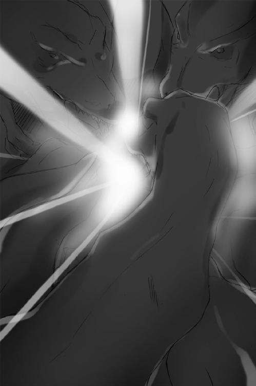
半瞬後、恭太郎たちに襲いかかっていた一〇数頭の巨体が消し飛んだ。
後に残されたのは、目映ゆい光を放つ剣を手にした恭太郎。
そして、彼に守られるように抱きしめられた、ユフィナ。
「な、なにが起こったの......？」
「俺にもよくわからん。一太刀でも浴びせられれば本望だと思ってたんだが......」
恭太郎は自分の手を眺めた。
目映ゆい光は木刀から発せられているのではなく、恭太郎の拳から放たれていた。閃光が剣となって手にくっついているのだ。
光り輝く剣に気づき、ユフィナは大きな目をさらに見開いた。
「【光の剣】......!!」
「なんだ、それは......？」
「魔法よ！ あんた、魔法を使ってる！」
「俺が......魔法を......？」
「しかも、ガイルーンと同じ魔法を使ってるのよっ！」
ガイルーンと言えば、たった一人だけ存在する男の魔法使いのことだ。
「メルルちゃんと一緒にアニメで見たとき、こんな剣を使ってたような気もするが......」
数万の兵が、思いもよらぬ展開にざわめいている。
これは、そんなにスゴイことなのか......？
「【光の剣】だと......!? あの王仕は男のくせに魔法を使うというのかッ！」
キストはわなわなと震えて、手を振り下ろした。
「殺せッ！ 我が主の障害となる前に神来恭太郎を殺すのだ！」
ティラノサウルスの群れが再び、恭太郎たちに迫ってくる。
恭太郎は片腕でユフィナを支えたまま、光り輝く剣を振るった。
刃から閃光が迸り、恐竜の巨体が消し飛んでいく。
一〇〇頭もの巨竜を倒すのに、数分とは掛からなかった。
「そんな、馬鹿な......!!」
目の前の状況が信じられないようすのキストに代わり、馬上のムージが叫ぶ。
「全軍突撃ィ！ なんとしても、あの王仕を倒せ！ クビをとったヤツには使い切れないほどの褒賞を出すぜッ！」
ムージの乗る黒馬を先頭に、数万の兵が恭太郎とユフィナ目掛けて突っ込んでくる。
光の剣を構えたまま──恭太郎は悩んだ。
（これはマズイんじゃないのか......？ 俺は力の加減ができない。人相手に使ったら、命まで奪っちゃうんじゃ......？）
躊躇っているうちに、兵士たちはみるみる殺到してくる。
しかし、恭太郎の心配は杞憂であった。
滝のような水流と、紫色に輝く衝撃波と、雷撃の雨が兵士たちに降り注いだのだ。
「お待たせ致しました、お姉さまっ！ 敵別働隊を追い払って、地方領を解放しました！」
「見てましたわよ、恭太郎っ！ 魔法が使えるなんて......これでちょっぴり私の相手にふさわしくなったかもしれませんわね！ でも、勘違いしないでくださいましね、あくまでちょっぴりであって、」
「恭太郎おにいちゃん、カッコイイよ！ ガイルーンみたいだよーっ！」
レイシア、エリス、メルル──三人の姫が飛竜に乗って駆けつけて来たのだ。
草原に着地するや、巨大な武器を構えた。
「神聖なるトレクワーズの大地を汚すとは......絶対に許せませんッ！」
レイシアは巨大な槍を振り回し、敵に向けて突き出す──!!
「【女神落涙】!!」
流水が龍のように空を駆け、敵兵士を吹っ飛ばしていった。
「おーっほっほっほ!!」
高笑いと共にエリスは巨大な鎌を回転させる。
「帝国に帰って伝えるがいいですわ！ このエリス・トレクワーズの美貌と強さを！」
空中に無数の魔法陣が浮かび──ヴォン！
「【死女神の舞曲】」
刃から紫色に輝く衝撃波のようなものが、放射状に飛び散る。
狙いすましたように、衝撃波は敵の武器を叩き折っていった。
「メルルはすっごい怒ってるんだからねーっ！ 手加減してあげないんだからっ！」
超巨大な斧とカナヅチが一緒になったような武器を軽々と振り上げて──ぶぅん!!
「メルルでどどどどど────んっっっ☆」
巨大な稲妻が幾筋も地面に向かって放たれた。感電した兵士たちが次々と地面に倒れ伏していく。
数万の兵士がみるみる無力化されていった。
「オレが相手だ──っ!!」
黒馬に乗ったムージが曲刀を抜き放ち、姫たちに斬りかかろうと迫る。
恭太郎に支えられていたユフィナが、よろめきながらも駆け出した。
「あんたの相手は私よ！ 勝負をつけてやるわ！」
「死に損ないに用はない！ どけぇ！」
「言ってくれるじゃない......！」
傷だらけのユフィナは手を横に伸ばした。
「来たれ、【烈炎神剣】」
ユフィナの手に巨大な手甲が装着され、炎に包まれた大剣が握られる。
筋肉の鎧に包まれた敵将を睨み、炎の剣を前に突きだした。
「カラダを強化してるんなら、直接ぶつけても大丈夫よね......？」
「なにを言ってやがる!?」
大剣を大きく振り上げる。刃が爆炎に包まれて、
「ハァ──ッ!!!」
裂帛の気合いと共に、剣を振るった。
「【火竜演舞】」
刃の軌道に合わせて魔法陣が展開し──炎の竜が迸った。
「うおおおおおおおおおおおっっ!?」
ムージに炎の奔流が直撃し、巨体が吹っ飛ばされる。
「お、のれええええぇぇぇぇぇ、覚えてろよ、ユフィナぁ......!!」
遥か彼方まで吹っ飛びながら、敵将は叫んでいた。
たった四人の王女の攻撃で、三万もいたカルタギア軍兵のほとんどが倒されている。もはや立て直しは不可能と悟ったキストが、震える声で命じた。
「全軍たいきゃ──......！」
退却の号令を待つまでもなく、カルタギアの軍勢はトレクワーズの領内から出て行くこととなった。涼やかな金属音にも似た音が響き渡るや、上空を白く輝くベールのようなものが覆っていったのだ。
見えない津波に押し流されるように、カルタギア兵たちの身体が吹き飛ばされていく。
空を見上げたユフィナが唇を震わせた。
「《大結界》が戻った......。お母さまは無事だったんだわ！」
「やったあ！」
飛び上がって喜ぶメルルを横目に、恭太郎は腰が抜けたようにヘタり込んでしまった。気が抜けた瞬間、光り輝く剣は消滅してしまう。木刀を腰に戻し、恭太郎は嘆息した。
「なんとか一件落着みたいだな......」
×××
王城内にある《女神の腕》。女王が目を覚ましたことで司令室内も沸き返っていた。
「すごいよ、みんなすごすぎるっ！ 特に恭太郎はすごいよ！ 魔法が使えるなんて！」
トビカピバラに姿を変えられた王仕アレスタもちっこい肉球のついた手を叩きながら、興奮気味に叫ぶ。
「一巻の終わりかと思ったけど、これでまた後宮ライフを満喫できるよー！」
抱き合って喜ぶ騎士や女官たちの輪にコッソリ交じろうとして殴られたりしていた。
大歓声に包まれた室内で、ただ一人複雑な表情をしているものがいた。
──アルトだ。
第四王女が見つめる受像器の画面には、恭太郎に飛びついて喜ぶメルルやレイシアの姿が映し出されている。
『素晴らしいです、恭太郎さまっ！』
『おにいちゃん、すごいよ！ やっぱりメルルのだんなさまだねっ！』
『ちょっ、抱きつかないでくれっ！ 柔らかいものが当たってるって！』
『なにをデレデレしているんですの、恭太郎ッ！』
『そうよ、このドヘンタイっ！ 痛たたたたた......』
恭太郎を殴ろうとしたユフィナはうずくまってしまった。全員が心配そうに駆け寄る。
「......恭太郎さま......」
そんな映像を眺めて、アルトは辛そうにため息を吐いた。
寂しげな第四王女を陰から見やり、ピコルは「ふむ」と頷く。
「恭太郎が魔法を使えたのも驚いたが......。これは後宮生活も波乱がありそうじゃのう......。いろいろと面白くなりそうじゃ......」
後宮のヌシである教育係は小声で呟きながら、楽しげに微笑むのであった。
×××
カルタギア帝国にある《黒炎城》の最上階。帝王の居室である《黒蓮の座》。
遥か高みにある玉座の前で畏まり、キストとムージは肩を震わせていた。
二人は傷だらけであった。キストは腕を骨折していたし、ムージは身体中に絆創膏を貼り付けていた。しかし、二人とも命に別状はない。
いや、彼女たちだけでなくトレクロ攻略戦に参加した兵士は、何人かの重傷者を含むものの全員が生還していた。トレクワーズ王女の信念である不殺を貫かれたまま、まんまと撃退されてしまったのだ。
両将軍が震えていたのには作戦失敗の報告を女帝にしなくてはならないという恐怖もあったが、軍人として屈辱を受けたからという理由が多分に含まれていただろう。
キストが平伏したまま、奏上する。
「申し訳ございません、カリギュラさま。敵国首都まで数キロという地点まで攻め寄りながら、なんの損害も与えることができず、我が軍は敗北。潰走しました。作戦は失敗です。この責任は私にあります。どのような罰でも甘んじて受けさせていただきます」
遥か高みにある、蓮の花を模した黒い玉座。ベールの向こうにうっすらと見える人影が、ゆらりと動いた。
「報告は既に妾の耳に入っておる。相応の罰を受けてもらおうぞ......」
両将軍は覚悟を決めた。歯を食いしばり、頭を垂れる。
しかし、皇帝の魔法はいつまで経っても放たれなかった。
代わりに聞こえてきたのは、微かな笑い声だ。
「......だが、特別に軽い罰で許してやろう。貴様らは失うには惜しい」
「あ、ありがたきお言葉にございますッ」
キストは深々と礼をしたが、眼帯をつけた女丈夫は心配げに尋ねる。
「軽い罰って......オレらはいったい、どんなことをされるんですか？」
「カエルに変えたり、火炙りにしたり、生皮を剥いで晒したり──母上の考えた刑罰は好かぬ。見ていてつまらぬからな」
「では、いったいなにを......？」
「妾が新たに一〇八つの刑罰を考え出したのだ。《恐怖の一〇八罰》とでも名付けようか......そのうちの一つを受けてもらおう」
黒いベールの向こうから、ほっそりとした指先が差し出される。
「キスト......貴様は《猫耳》の罰を受けよ」
女帝の指から黒い光が放たれた。
漆黒の閃光に貫かれたキスト将軍の頭から、ピンと尖った黒猫の耳が姿を現す。
艶やかな黒髪の下から出現した耳に驚き、キストは声を上げた。
「なっ......これはなんですかニャ！ はッ!?」驚いたように口もとを抑える。
「語尾に勝手にニャがついてしまうニャ......！」
「くくく......それが《猫耳》の罰だ。本日より一週間、貴様はその姿で過ごせ。語尾にはニャーをつけるのだ」
「くっ......！」
キストは辛そうに顔を顰めた。彼女は一〇万を超えるカルタギア兵を統べる四将軍の一人なのだ。それなのに頭に猫の耳を生やし、語尾にニャーをつけて喋らねばならぬとは......あまりの恥辱に想像するだけで失神してしまいそうだった。そもそも私はもう二六歳......そのようなことが許される年齢ではないのに......！
「耐えろよ、キスト。生きて汚名を雪いだ方がいいじゃねえか。トレクワーズの姫たちにはリベンジしなきゃいけねえだろ！」
小声で同僚を励ましたムージにも、女帝は恐ろしい決定を下す。
「ムージ、貴様には一〇八罰の一つ《メイドさん》を受けてもらうぞ」
「ええっ!? ま、待ってくださいよ、カリギュラさま！ オレはゴツイからそういう格好は似合いませんっ！ 許してくださ──!!」
容赦なく、黒い閃光が迸った。半瞬後、ムージの隆々たる身体は、白いエプロンも目映ゆいメイド服に包まれていた。スカート丈は短く、袖口や裾がフリルで飾られた可愛らしい一品だった。
ミニスカートの裾を恥ずかしそうに押さえ、眼帯の将軍は叫ぶ。
「こんな格好、したことねえよ！ 部下の前に出られねえッ！」
「くくく......。どうだ、恐ろしかろう？ これが妾のやり方じゃ。これからは失敗するたびに、貴様らを《恐怖の一〇八罰》が待っているものと思え......」
黒い炎が揺らめくように、ベールが揺れた。奥から人影が現れる。
ウィッチェリア大陸最大の国土と軍事力を誇り、隣国を武力によって併呑し続けるカルタギア帝国。
その全権を掌握する女帝が、珍しく姿を現したのだ。
床に届くほどの長い黒髪。黒い瞳。意志の強そうなきりりとした眉。ぷっくりした頬。頭にちょこんと載っている王冠。身長一一五センチのチビっこい身体を包んでいるのは、無数のフリルに彩られた漆黒のドレスだ。
カルタギアの帝王であることを示す宝杖を右手に握り、左手には黒いトビカピバラのぬいぐるみを大事そうに抱えている。
《残忍》《苛烈》《冷血》《悪逆》《傲慢》《非道》《凶悪》《強欲》《暴虐》......。
他国の者は誰もその姿を見たことがないが、常に恐ろしい言葉と共に語られているカルタギア帝国の女帝──カリギュラ・フィンランディア・カルタギア。
実は彼女はまだ、八歳になったばかりの少女なのだ。
「時に、トレクワーズの新たな王仕──《きょーたろ》と言ったか。そやつは魔法を使ったそうだな。真ならば、ガイルーン以来の男の魔法使いとなるが......？」
「はいニャ。凄まじい力を持つ魔法を使っておりましたニャ」
「すげえ威力でしたよ。ガイルーンにも匹敵するぐらいじゃないかと思います」
「そうか。フン、ユフィナめ......いよいよもって忌々しいな......」
二人の言葉を聞き、女帝は悔しげにぬいぐるみを抱きしめた。
「では、その王仕を妾のものとしてやろうぞ。もしガイルーンほどの力を持っているなら、トレクワーズの姫どもには勿体ない。カルタギアを統べる妾にこそ相応しいのだ」
宝杖でトレクワーズの方角を指し、幼き女帝カリギュラは命令した。
「カルタギア軍の全勢力をもってトレクワーズの王仕《きょーたろ》を奪取せよ。キスト、そしてムージよ。必ずや、ユフィナから《きょーたろ》を奪うのだ......わかったな？」
「「はっ!!」」
トレクワーズ王国から遠く離れた、ここ黒炎城で。
また一つ、神来恭太郎の運命を左右する歯車が動き出した──
エピローグ
王宮の《大庭園》にある温室は、さながらガラスの宮殿のように壮麗だ。夜間は魔法灯の灯りによってライトアップされており、夜空に映えてより一層美しい。
内部には花々が咲き乱れているだけでなく、立派な樹木までもが植えられている。
そんな温室の中央付近にあるベンチに、恭太郎は腰掛けていた。
頭上には満天の星々。冴えざえとした月光が咲き誇る花々を照らし出す。
目を見張るほど美しい光景の中で──彼は緊張のあまり顔を強ばらせていた。
王城の方からは、あでやかな音楽と人々の楽しそうな声が微かに聞こえてくる。
現在、戦勝パーティの真っ最中なのだ。これから舞踏会も催されるらしい。
恭太郎も勝利の立役者の一人だから出席させられたのだが、早々に抜け出して来た。そういう華やかな場は苦手だからという理由もある。
だが、最も大きな理由は──ユフィナだ。
今朝方、第一王女とこんなやりとりをしたのである。
『準備で忙しくなっちゃうと思うから、今のうちに伝えとくわ。パーティがはじまったら、さっさと抜け出して王宮の温室に来てよ。私も行くから』
『いいのか、抜け出したりして』
『あ......あんたに話があるのっ。すっごく大事な話だから、来なかったら怒るわよ！』
ユフィナの表情は真剣そのもの。しかも、ちょっぴり頬を染めていた。
（あんな顔で男を呼び出して大事な話をするなんて......、まさかなあ......）
彼の考える《まさか》とは──すなわち《愛の告白》である。
カタブツで朴念仁な侍少年である恭太郎だったが、告白のシチュエーションというものを理解していた。幼稚園に通っていた頃、女の子から愛の告白を受けたことがあるのだ。そのときは確か、『ぼくはしゅぎょう中の身だから、まだ所帯はもてないよ』と答えて断ったと記憶している。女の子に告白をされたのは、後にも先にもそれっきりだ。
とまあ、そんなワケで。
温室へとやってきた恭太郎は、妙に緊張してしまっていたのである。
人を待っている時間というのは、ついつい考え事をしてしまうものだ。彼の脳内でも、ご多分に漏れずさまざまな考えが渦巻いていた。
俺のコトを嫌っているユフィナが告白なんてしてくるはずがないよな......。
いや、でも万が一ということもあるかもしれない......。
そうなったら俺は、なんと答えたらいいんだ......？
やはり、断るべきだろうか？ それとも、告白を受けてしまうべきか......？
あ、そうか。俺は王女たちを救いたいと思ってるんだ。告白を受けてしまうのも、一つの手のような気がするな。ユフィナと相思相愛になってお世継ぎをつくれば万事ＯＫじゃないか──って、相思相愛ってことは、俺もユフィナを好きになるってことだよな？ どうして今、俺はユフィナと相思相愛になれる前提で考えていたんだ？ 俺はユフィナが好きなのか、いやそんなはずはないあんな凶暴な女は願い下げだ、そそっかしくて不器用なところは可愛いし、言動に似合わず優しくて世話好きなところも好ましいと思うし、王女として国民を想う気持ちは素晴らしいし、甘いものを食べてとろけそうな笑顔を浮かべてる姿など胸がきゅんとなるくらいに──って、あれ？ なんで俺はあいつのいいところを数え上げてるんだ？ あの乱暴王女のことが好きみたいじゃないか、いやいや、そんなはずはない、いやいや、いやいやいやいや。落ち着け、落ち着くんだ、俺。
「お待たせ、恭太郎っ。遅れてごめんね」
「ゼンゼン待ってないぞッ！」
弾かれたみたいに勢いよくベンチから立ち上がった恭太郎は、そのまま硬直した。
咲き誇る花々に囲まれて立つ王女の姿は、息を呑むほどに美しかった。
ユフィナは見事にドレスアップしていたのだ。
戦闘用のものとは違う華やかなドレスに身を包み、きれいに結い上げられた髪にはティアラを載せている。うっすらと化粧もしているみたいだ。
ユフィナの姿は周りに咲いているどの花よりも美しく、またプリンセスらしい気品に満ちあふれていた。
「どうしたのよ、ボーッとして......？ ああっ、ドレスが似合わないなーとか思ってたんでしょー!? フン、どうせ私はお姫さまっぽくないわよっ！ いーっ、だ！」
ペロッと舌を出して見せた姿は、やっぱりいつもの彼女で......その人懐こい仕草にもときめいてしまう。
瞬く星空の下で、咲き乱れる花々に囲まれているからかもしれない。
着飾ったユフィナが、あまりにも美しかったからかもしれない。
なにが俺をおかしくしてしまったのか──理由はわからない。
好きとか嫌いとか、恋愛とかえっちとか、そんなものもうまく理解できない。
わからないものが多すぎる、けれど。
今、ユフィナに愛の告白をされたなら、俺は断ることはできないだろう。
そんな、気がした。
王女は気を取り直すようにコホンと咳払いをして、
大きく一歩、恭太郎の方へ近づいてくる。
「ここに来てもらったのはね、伝えたいことがあったからなの。みんながいる前じゃ言いづらかったから......」
「そ、そうか。なんでも聞くぞ」
「なんて言っていいのか、わからないんだけど......その......」
「うん......」
「あ、ありがと、恭太郎」
「......ん？ どうして礼なんて言うんだよ」
「カルタギア軍にやられちゃいそうなときに助けに来てくれたじゃない。なんの策もないのに戦場に出て来ちゃうなんて、どんだけバカなヤツなんだろって思ったけど......でも、ちょっとだけ──ほんのちょっとだけよ？ ──来てくれて、うれしかったわ。私が助かったのは恭太郎のおかげよ」
「お礼なんていいさ。助けることができたのは偶然みたいなもんだから......。用はそれだけか？」
「ううん。これはついでよ。いちお、お礼は言っておかなきゃって思ったから」
王女は居住まいを正した。いよいよ本題に入るようだ。
「あ、あのね、恭太郎......。わ、私......私は......その............」
一気に緊張が高まるのを感じ、恭太郎は生唾を呑み込む。
ついに、俺はユフィナに告白されてしまうのか......？
そして、もし、俺がＯＫしたら、
俺とユフィナは、お世継ぎをつくることになるのか......!?
ドキドキ、ドキドキ、ドキドキ、ドキドキ、ドキドキ──......。
心臓の音がうるさいくらいに聞こえていた。
長い長い沈黙が流れて──二人の緊張がピークに達したとき。
ようやく、王女は意を決した。
目をギュッと閉じ、両手を握り締めて、一息に言い放った。
「あ、憧れてる人がいるのっ！」
......憧れてる？ 告白のセリフにしては、ヘンな気がするな。
「憧れてるって......好きってコトなのか？」
「す、好きっ!? えっと......好きとは、その、違うと思うんだけど......」
両方の人差し指を突き合わせ、恥ずかしそうに続ける。
「とにかく、憧れてる人がいるの。ガイルーンさまって知ってるでしょ？ 私がちっちゃい頃にね、この国を救ってくれたんだ。そのとき、私はガイルーンさまと約束をしたの。『トレクワーズを絶対に守る』って......」
その約束は、ガイルーンと交わしたものだったのか......。
......え？ ということは、ちょっと待ってくれよ。
「憧れてるってのは......ガイルーンのコトなのか？」
頬を染めながら、こくんと頷くユフィナ。
そんな可憐な表情をしている彼女は見たことがなかった。
......俺への告白じゃ、なかったんだな。
気が抜けてしまって、恭太郎はその場に崩れ落ちそうな気分に陥る。
つーか、俺はなにを恥ずかしい勘違いしてたんだよ......。ユフィナは俺を嫌ってるんだ。告白なんてされるわけないじゃないか。それに俺だって、彼女みたいな乱暴な女の子は苦手だ。相思相愛になんて、なれるわけがないんだよ。馬鹿馬鹿しい。
「......で？ 憧れてるのはわかったが、どうしてそれを俺に話そうと思ったんだよ？」
「あんた、ガイルーンさまと同じような魔法使ってたじゃない。なんか知ってるんじゃないの？ 何でもいいから教えて欲しいのよっ！」
「そういうことか。......いや、なにも知らないよ。知ってたら教えてやりたいけど」
「そっかぁ......」
深いため息を吐いて、ユフィナはベンチに腰掛ける。心底ガッカリしているようだ。
しばらく彼女の姿を眺めていた恭太郎の脳裏に、一つの考えが浮かんできた。
俺が、とるべき道──王女たちを救ってやりたいと思っているにも拘らず、世継ぎづくりには協力できない俺にも目指すことができる目的について。
「なあ、ユフィナ」
「......ん？ なによ？」
「きみに協力してやるよ。ガイルーンを捜すのを俺も手伝ってやる」
「えっ、協力!? どうして、そんなこと......!?」
「ガイルーンを見つけて、ユフィナがそいつと世継ぎをつくれば丸く収まるじゃないか」
「わ、わわわっ、私がガイルーンさまとっ!?」
顔を真っ赤にして、結い上げた髪の後れ毛を指でいじり出すユフィナ。
「ああ。それできみが新たな女王になってくれれば、俺は元の世界に帰れる。俺が世継ぎづくりを手伝うのに比べれば多少時間が掛かるかもしれないが......どうやら俺は魔法が使えるみたいだ。降りかかる火の粉は一緒に払ってやるよ。どうだ、いい考えだろ？」
とっさの思いつきにしては、名案だと思った。
神来家の嫡子に相応しい選択であると、姉上も褒めてくれるに違いない。
だけど──
「そ、そうねっ。私がガイルーンさまとお世継ぎをつくれるかどうかはおいといて、手伝ってくれるのはうれしいかも。あ、でもでもっ、お母さまや妹たちにはナイショにしといてよねっ。ガイルーンさまに憧れてるなんて知られたら、きっと笑われちゃうしっ！ 二人だけの秘密だからねっ！」
だけど──
「ああ、秘密にするよ。大丈夫。俺は口が堅いんだ」
だけど──
うれしそうに笑うユフィナを見ていたら、
微かに胸が痛んだのは、なぜだろう？
きっと──恭太郎は、思う。
正義を行うには、痛みを伴うのだ。
これはきっと、そういう類の痛みに違いない。
「あんたってスケベでヘンタイだけど、案外イイヤツよね。──よしっ！」
ユフィナがベンチから飛び降りた。イタズラっぽい笑みを浮かべて恭太郎の手を取る。
「ご褒美として、王女の私がダンスを踊ってあげるわ。舞踏会では、姫は気に入った王仕とダンスを踊る習わしなのよ」
「ダンスなんて踊ったことないよ。っていうか、きみだってできるのか？」
「失礼ねっ。伊達に一六年も王女さまやってないわよ！」
およそお姫さまらしくないセリフを吐いて、ユフィナは手を引っ張ってくる。
「本当は王仕がリードするものなんだけど、特別に私がリードしてあげるわ。ほら、音楽を聴いて、私に合わせて」
王城から微かに聞こえてくる音楽に乗せて、月光に照らされた庭園でダンスを踊る。
二人で手を繋いで、呼吸を合わせて、ステップを踏んで、くるりと回って。
「あははは、その調子よっ！ 結構うまいじゃないっ！ 恭太郎のくせに！」
「恭太郎のくせには余計だろ！ 俺は運動神経はいいんだよ！」
「でもリズム感は無いみたいね！ 私と踊ろうなんて一〇〇万年早いのよ、あはははっ！」
「うるさいよ！ そもそも俺は踊りたいなんて言ってないだろ！」
ユフィナの恋を応援するという決意と、微かな胸の痛みを感じながら、星空の庭園でダンスを踊る──そこで終わっていれば、最近の恭太郎にしては珍しく情緒のある想い出となっていたことだろう。
しかし、トレクワーズの女神は恭太郎にさらなる苦難を与えたもうた。
「ちょっ、恭太郎！ スカートの裾、踏んでるっ!? きゃあああああっ!?」
「す、すまん！ うわあああああっ!?」
二人はもつれあって転んでしまったのだ。なにがどうなったのかわからないけれど、恭太郎の腰の上にユフィナが乗っかるような体勢になってしまっていたのだ。
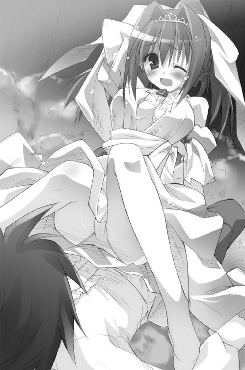
まさにその刹那、温室に飛び込んでくる者たちがいた。
「恭太郎さま、こんなところにいらっしゃったのですねっ！ 私とダンスを踊ってくださいませ！ その後は二人で手に手をとってお世継ぎを......ユフィナ姉さまっ!?」
華やかに着飾ったレイシアが目を丸くする。
「恭太郎っ！ 魔法が使えるならそうと言えばいいのですわっ！ それならば、この私とダンスする資格があるというもので......って、お姉さまっ!?」
エリスは相変わらず偉そうな口調でまくし立てていたけれど、言葉を失った。
「おにいちゃーん！ 男のひとってドレス姿にもグッときちゃうんだよねっ メルルのドレスは簡単に脱がせ......ユフィナおねえちゃんっ!?」
ミニスカート＆チューブトップなドレスを着たメルルが飛び上がって驚く。
「あのあのっ......そーゆーコトはしちゃイケナイって言われてるんですが、なぜかダンスはしてもいいって許可が出まして、だからその......って、ユフィナ姉さまっ!?」
かわいらしくドレスアップしているアルトが、はわわわっと唇を震わせる。
「ち、ちちちっ、違うの！ 違うのよ、これはっ！」
どんなに否定しようとも、客観的にはユフィナが恭太郎に馬乗りになっているようにしか見えないワケで。
「さすが第一王女ですっ。私ももっと見習わなくちゃいけませんっ」
「馬乗りになるなんて......そんな方法もありますのね......。メモメモ」
「おねえちゃんダイタンだねえ」
「はわわわわわ......はわわわわわわ～～......」
「ホントに違うんだってばーっ！ うわーんっ！」
妹たちの視線に耐えられなくなったのだろう。ユフィナは大急ぎで立ち上がり、恭太郎を睨み付ける。大きな瞳にこぼれ落ちそうなくらいに涙がたまっていた。
「あ、アンタが悪いんだからねっ！ このドヘンタイっ！」
「なんでだよ!? 俺はなにも悪いことなんてしてな──」
「来たれ、【烈炎神剣】」
「待て！ ちょっと待ってくれ！ 何度も殴られたらさすがに死んじゃうだろ!?」
「うるさーいっ!! この無礼者ぉぉ──っっ!!」
頬を真っ赤に染めた第一王女は、
後宮にたった一人だけの王仕目掛けて大剣を振り下ろしたのであった──
王仕の名は──神来恭太郎。現代日本に生きていた高校二年生だ。
彼の後宮生活は、まだはじまったばかりである。
あとがき
お久しぶりです。もしくは、初めまして。風見周です。
「周」と書いて「めぐる」と読みます読ませます。覚えておいていただけるとうれしいです。
本作《Ｈ＋Ｐ─ひめぱら─》は、なんと風見周の一年二か月ぶりの作品となってしまいました。こんなに期間が空いてしまうと、新人に戻ってしまったような気分でございます。心機一転頑張りますので、応援のほどよろしくお願いしまっす!!
本編より先にあとがきを読む方が多いと聞きました（ココを読んでくださってるあなたもそうなのかな？）。
そこで、本作を読むに当たっての注意事項を書かせていただこうと思います。
《Ｈ＋Ｐ─ひめぱら─》というタイトルは、編集長さま＆担当さんとあーでもないこーでもないと考えて決まったものです。《Ｈ＋Ｐ》には、サブタイトルにもなっている《ひめさま＋ぱらだいす》という意味以外にも、《えっちな＋ぷりんせす》とか《はーれむで＋ぷれい》なんて意味が込められていたりします。
もうおわかりかと思いますが、内容的にはちょっとえっちなラブコメなのです！
前作《殺×愛─きるらぶ─》のような切ないラブストーリー成分は微塵もございません。そーゆーのを期待していてくださった方には申し訳ない感じです。でも、読んでみてくださるとうれしいです。
さてさて。
《Ｈ＋Ｐ─ひめぱら─》のテーマは、前作と同じく『恋愛』なのです。
そんなワケで、今回は《ライトノベル作家の恋愛》について書いてみようかと思います。コラ、そこー、ドン引きするなよー、ちゃんとついてこいよー。
えー、ライトノベルは純文学の次ぐらいに読者さんの中の作家志望者比率が多いジャンルらしいです（ホントかな？）。だから、ココを読んでらっしゃる読者さんの中にも作家志望者がいらっしゃるかもしれません。そんな方々──特に男性読者諸兄に肝に銘じておいて欲しいことがあります。
それは──『デビュー前から付き合っていたカノジョは大事にしろよ！』です。
作家業ってのは、ものすご～～～く出逢いが少ないのですよ。
今でこそ作家仲間と仕事場を借りて、みんなで一緒に執筆するようになったので外出の機会も増えましたが、数年前までは一週間誰とも会わないなんてことがザラでした。交わした会話と言えば「温めますか？」「はい」ぐらい。そりゃあ、恋人なんざできるわけがありません！（血涙）
そんな暗黒色の作家生活を送りつつも、ちゃんと幸せな交際やご結婚をする作家さんもおられます。そういった方々の多くは『デビュー前からいたカノジョ』と幸せになっているのですよ。デビュー後にカノジョができて幸せラブラブという作家さんは、かなり少なく感じます（あくまで、風見個人の印象です！）。
早くも書いてて絶望してきたのですが、案ずるなかれ！ デビュー後にカノジョに出逢ったという作家さんももちろんいます。
そんな中で、意外と多いのが『ファンの方と交際をはじめた』という方です。読者さんと結婚した有名な作家さんも、かなり多いですよね。
どんな風に読者さんと知り合うのかな～と不思議だったのですが、サイン会で出逢ったり、作家さんが持ってるサイトにファンの方がメールを送ってきて仲良くなったりすることが多いのだそうです（風見調べ）。
女の子に人気のある作品を書いている作家さんは、『大ファンです。付き合ってください』と写真付きでメールが送られてくるそうな。ホントかな......？ 僕のところにも、いつかラブメールが来るのかな？（期待に満ちた瞳でメールボックスをのぞきつつ）（ＳＰＡＭメールばっかりでした！）
ちょっぴり希望がわいてきそうなところなのですが......悲しいかな、これにも例外があるのです。
どうやら、ラブコメを書いている作家さんはアウトらしいのですよ!!
風見の知り合いにイケメンで、なおかつ売れっ子なラブコメ作家さんが何人かいらっしゃるのですが、誰もが「出逢いはないなあ......」とか言ってるんです。
サイン会に来るのも、ほぼ男の子のみ。ようやく「女性が一人来たー!?」と思ったら、息子さんの代理で来たお母さんだったそうです......。「ファンの男の子が来てくれてすっげえうれしいんだけど......ちょっぴり切ないなあ」と遠い目をしておりました。
そんなワケで。
ライトノベル作家としてカノジョとラブラブ生活を送るコツは──『デビュー前からいたカノジョは大事にする！』＆『ラブコメを書かない！』の二つなのです。
作家志望者のみなさん、ぜひぜひ実践してみてくださいねっ♪
──え？ 風見は、このコツを実践できてるのかって？
あはははは、イヤだなあ、そんなの決まってるじゃないですか！
ゼンゼンできてませーんっ！（いっそ爽やかな笑顔で☆）
風見周は大絶賛非モテ街道を驀進中であります。どなたか助けてください。当方切実です。切実ですっ。
でもね、モテないからって悲嘆することはありません。風見は、たちまち幸せになれる魔法の呪文を知ってますからね。
特別に、みなさんにも、魔法の言葉を教えてあげましょう。
『二次元があれば、大丈夫！』
嗚呼、幸せだなあ、うふふあはは（後ろ指はささないであげて！）
はい、生々しいことを書いているうちに紙幅が尽きて参りました。以上で、あとがきを終わりたいと思うのですが──最後にちょっとしたお知らせがあります。
実は《Ｈ＋Ｐ─ひめぱら─》が発売されるのと同じ日に、一迅社文庫さんから風見周の新作《女帝・龍凰院麟音の初恋》という作品が発売中なのです!!
もしよかったら、そちらも手に取ってみてくださいね。
一応、今作には①とついていますが、続刊が出るかどうかはみなさんの応援次第だそうです。ぜひぜひ応援してくださいませ!!
ではでは、第二巻のあとがきでお会いできることを祈っております。
Ｈ＋Ｐ①
─ひめぱら─
風見 周
平成23年1月6日 発行
発行者 山下直久
発行所 株式会社富士見書房
〒102-8078 東京都千代田区富士見1-12-14
http://www.fujimishobo.co.jp/
(C) 2008 Meguru Kazami, Mutsuki Hinata/Fujimishobo